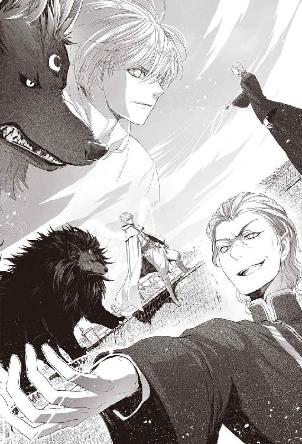

| ペテン師ルカと黒き魔犬（下） (ウィングス・ノヴェル) | |
| 縞田理理 | |
ペテン師ルカと黒き魔犬
Contents
１．僕たちは同じ籠の鳥なんだ
ルカは夢の中にいるような気分でカヴァリエリ宮の大扉をくぐった。
戻ってきた......不可能に思えた任務をやり遂げてここに戻ってきたんだ。
宮殿の硝子窓から陽光が射し、顔が映るほどに磨き上げられた大理石の廊下を真っ白な矩形に切り取っている。
「ルカ！」
連なる白い矩形の上を銀細工のような長い髪を靡かせてマテオが走ってくるのが見える。その動きが、現実離れしてゆっくりに感じられた。だが、これは現実だ。
「ルカ、無事だったか！」
マテオの声に現実に引き戻される。
「はい。お陰さまで。約束通り三十日以内に戻りましたよ」
にっこりと白い歯を見せる。ペテン師稼業で培った取っておきの笑顔だ。
「待ちかねたぞ！ で、首尾はどうなんだ、ルカ？」
「もちろん上々ですよ」
（カヴァリエリの資金と情報網の後ろ盾があったし......それに、サーロがいたからな）
そのサーロは今はむくむくと毛の長い真っ黒な小犬の姿で、ルカの足元で不貞腐れている。このところずっと『大きい方』の姿だったから、小犬の姿にされたのが不満なのだ。
麦酒色の真ん丸な眼が恨めしげにこちらを見上げた。目が合うと、歯を剝いて小さく唸る。
思わずくすりと笑ってしまう。
サーロの怒りは分かるんだけど、この姿では唸っても凄んでも可愛いだけだ。
「マテオ。ご紹介しましょう......」
焦らすようにゆっくり一礼し、ステップを踏んで脇に退いた。マントの後ろに隠れるようにしていた少年の姿が顕になる。
その背中を優しくそっと押した。
ほとんど白に近い色の髪と、蜜を湛えた壺のような瞳をした少年が用心深く前に出る。
ルカは芝居がかった身振りでさっと右腕を差し伸べた。
「レムジーア帝国皇帝セレスティアノス・エルカーン十四世陛下であられます！」
これが言いたかった。
「おお......」
マテオの薄青い双眸が大きく見開かれ、まじまじと少年を凝視した。震える息が薄い唇から漏れる。
次の瞬間、マテオはつむじ風のような速さで床に跪き、小さな皇帝の前に頭を垂れた。
結果的に、皇帝の横に立っているルカに対しても拝跪する形になる。
「皇帝陛下におかれましてはご機嫌うるわしく......」
「そなたがダルジェントのマテオ・カヴァリエリか」
「左様にございます、陛下」
「では、そなたが朕を招聘したのだな」
「いかにも、私がお招きいたしました。セレスティアノス陛下、ようこそ我がダルジェント共和国へ。陛下をお迎えすることは共和国にとってこの上ない喜びでございます」
小さな皇帝は足元に跪くマテオを鷹揚に見下ろしている。
この少々乱暴な招聘をルカに命じた首謀者がダルジェント共和国の影の支配者マテオ・カヴァリエリであることは、ここに来るまでの間に説明してあった。
そして、あまり彼を信用してはならないことも。
ルカは恭しく拝跪しているマテオの頭のてっぺんを眺め、小さく息を吐いた。
ああ、なんで自分はこの男を助けてしまったんだろう......。
あろうことか、三度も救ったのだ。
川で溺れたときと、暗殺者に襲われたとき、それと毒で死にかけたときだ。暗殺者と闘ったのはサーロだが、封印を解いて『大きい方』を呼び出したのは自分だから都合三度ということになる。
三度も命を救ったその返礼が、こっちの秘密を盾に脅迫して、汚い仕事をさせることだったなんて......そんなこと、助ける前には想像できっこないじゃないか。
マテオとステラの兄妹は大金持ちの貴族のくせに海千山千もいいところだ。いい金蔓になると思って近づいたのに、反対にまんまと利用されるなんてペテン師として情けない。
もしも最初に出会ったときこの男を助けていなかったら、いま自分は何をしていただろう？
たぶん、《力の術》の秘伝書を探し、仇討ちの機会をうかがいながらサーロと二人で気ままな旅を続けていたんじゃないかと思う。仇討ちが実現する見込みがあるかは別として。
秘伝書が見つかるかどうか自体、雲をつかむような話だし、見つからなければとてもじゃないが仇を討てる気がしない。
いったいどうやったのか知らないが、ベニト・デラクア司教は《力の術》に熟達していた父を一瞬で倒したのだ。だから運良く秘伝書が見つかって《力の術》を使いこなせるようになったとしても、仇を討てるかどうかは分からない。
それでも諦めたくはなかった。
いつか父を超えるほどの《術》の使い手になり、父の仇を討つというのは子供の頃から持ち続けている夢だ。というか、これ以外には将来の展望を何も思いつかなかった。
父を殺され、故郷を追われ、唯一心を許せる相手だった母も三年前に亡くなった。《力》のことが知られるのが恐ろしくて、母の婚家ではいつもびくびくしながら暮らしていた。誰にも本当のことを言えず、常に噓を吐いていなければいけないのが辛かった。
そんな人生で、どうやったら明るい未来の展望なんて思い描けるだろう？
家を出て旅から旅への暮らしを選んだのも、大事なものを何も持たない身軽さが魅力だったからだ。身ひとつなら何かのときすぐ逃げられる。父も一人だったら逃げられたかもしれない。
（だけど、この子に出会ったんだ）
ルカはゆっくりと小さな皇帝に視線を戻した。
この子を見付けることができたという一点だけは、マテオに感謝してもいい。
「陛下。このカヴァリエリ宮の一隅に、仮の宮廷をしつらえさせました。ここを都と思し召してゆるりとお過ごし下さいますよう」
小さな皇帝が小鳥のように甲高い声で宣う。
「ふむ......よきにはからえ！」
「ありがたき幸せにございます」
少年の澄んだ蜂蜜色の瞳がこれでいいのか確かめるようにちらりとこちらを見上げる。
心配しないでいいと伝えるため、ルカは両目でゆっくり瞬きした。
（大丈夫、僕がついてますからね......）
マテオが白い鷺を思わせる優雅な所作で起ち上がる。
「ご苦労だった、ルカ。君は部屋で旅の疲れを癒したまえ。私は陛下を仮の宮にご案内しよう」
小さな手がルカの旅マントをぎゅっとつかんだ。
「ルカ？ ルカは一緒ではないのか？」
マテオの薄青い眼がルカと少年皇帝を素早く一瞥した。美しい仮面のような顔にうっすらと笑みが浮かぶ。
「おや？ 陛下は我が友ルカ・フォルトナートを随分とお気に召されたとみえる」
つかんでいた手がゆっくりマントから離れた。
「......特段にではない。ほかに供がいないゆえ、言ってみただけだ。ルカ。そなたはさがってやすむがよい」
「陛下......」
今のは自分を気遣ったのだと思うと胸がぎゅっとなった。
幼い時から──今だって充分幼いが──周囲の大人たちに利用され続けてきたセレスは、自分の好悪の感情がその対象となった人間の運命を左右してしまうことを知っているのだろう。
少年皇帝を利用したい者にとって、自分以外の者が皇帝の寵を得るのは都合が悪い。だから、わざわざ「特段にではない」と言ったのだと思う。
十になるやならずなのに、そんなことに心を砕かなければならないなんて......落日のレムジーア帝国皇帝直系の血筋に生まれたばかりに。
以前はレムジーア帝国皇帝を恨みに思っていた。父の処刑に間接的に責任があるのだと。でもそうじゃなかった。皇帝は十歳にも満たない身よりのない孤児で、怯えた眼をした子供だった。考えてみれば、父が処刑されたときにはこの子はまだ生まれてもいなかったのだから。
この子が乗せられていた豪華ではあるが窓のない馬車が思い浮かんだ。まるで囚人護送車のようだった。都市国家同士の見栄の張り合いのため、その馬車で帝国傘下の都市国家から都市国家へと連れ回されてもう五年だという。
可哀想じゃないか。
仇討ちは後でもいい。どうせ現在の自分ではデラクア相手に勝ち目はないんだし、いまはこの子の側にいてやりたい。
セレスティアノスは『仲間』なのだ。
今ではこの世でたった二人だけの。
この子に教えなければならないことが──自分にしか教えられないことがあるのだ。
少年が目覚めた《力》の扱い方、隠し方。
身を守るために《力》をどう使ったらいいのか。人に見られたとき、どうやって誤魔化すか。
そういった細かなことが、この子には先行き絶対に必要になる筈だ。
尋常でない《力》を持つ者はそれだけで魔術師と見なされる。
都を追われたも同然の身とはいえ、体裁上は現在もレムジーア帝国皇帝であるセレスティアノスが魔術師として告発される可能性は低いと思う。
それでもマテオに知られるのは避けた方がいい。マテオとステラの兄妹がどんな些細なことでも利用するのは身に染みている。そもそも自分がマテオに《力》のことを知られたせいで皇帝誘拐などという大それたことをする羽目になったのだ。弱みを握られているから、彼の言いなりになるしかない。
（マテオ。僕は約束通り皇帝陛下を連れてきたんだ。そっちも約束を守って貰いますからね......）
忘れたとは言わせない。レムジーア皇帝を連れてきたら、自由にしてくれる約束だったのだ。
当面、少年皇帝はダルジェント共和国に逗留するが、いつまでもここにいるかは分からなかった。
少年皇帝が再び他国に行幸することになったとき、一緒について行くかどうか決められる自由が必要なのだ。マテオの籠の鳥のままでは、この子を守ることも、父の仇を討つこともできやしない。
ルカは目をそらさずにまっすぐマテオを睨んだ。
マテオは気付いているのかいないのか、知らん振りのままにこやかに少年皇帝に笑いかけている。
「では、陛下。こちらへ。供の者に案内させましょう」
「あ......うむ」
セレスは落ち着かない不安な様子で視線を宙に彷徨わせている。少年皇帝のいかめしさがはがれ落ち、年相応の幼さが滲む。
しまった......！ マテオ・カヴァリエリに気をつけろと注意し過ぎたのだ。少年はマテオを怖れているし、それなのに『仲間』の筈の自分はその恐ろしい男に彼を引き渡そうとしている。
そのとき不意に妙案を思いついた。
足元で不貞腐れているサーロを急いで抱き上げる。サーロは吃驚仰天した顔で手足をじたばたさせたが、そのまま少年皇帝の腕に押し付けた。
「陛下。どうぞサーロをお連れ下さい」
「うむ！」
少年の顔がパッと輝いた。
小さな黒犬をしっかりと両手で抱きしめ、ふかふかした長い黒い毛に顔を埋めて頰ずりする。
サーロはふん、とそっぽを向き、それからさもふと思いついたという風に口先を上げて少年の顔をぺろりと舐めた。
何だかんだ言っても、結局はちゃんとやってくれるんだよな、サーロは。
襲撃場所からダルジェントに来るまでの間、『大きい方』のサーロはずっと少年の面倒をみていたのだ。背中に乗せて運んでやったり、夜は布団代わりになって一緒に寝ていた。
今は小さくなってるけど、セレスは黒犬のサーロが魔獣のサーロだと知っているし、小さい方のサーロのこともお気に入りだ。
巨大な魔獣サーロに少年は夢中だった。
あの不思議な生き物に夢中にならない子供がいるだろうか？
なにしろ大きくて、ふさふさで、暖かくて、力強い。
そして意外に気が優しい。寄り添って寝るとき、サーロは少年が眠りやすいように体勢に気を配り、ふさふさの尻尾で覆ってやっていた。
サーロが一緒なら、セレスもきっと安心だと思う。
セレスがルカに心を開いてくれたのは、半分はサーロのお陰かもしれない。
サーロは本当に役に立つ奴だ。
それに──これは秘密だが──《力》の触媒でもある。
どういうわけか、サーロには《力》を増幅する作用があるのだ。
サーロ本人にもこの話はまだしていない。本当は、そろそろ話しておく頃合いだと思う。だが、なかなか切っ掛けがつかめないのだ。何と言うか、言い出し辛い。
少年の腕の中でサーロがくんくん鼻を鳴らし、真ん丸な眼で不満げにこっちを睨んだ。
早く『あの姿』に戻せと言いたいらしい。
だが、今は小犬の姿の方がいい。この宮殿で魔獣の姿になるのは拙いし、人間の姿のサーロは可愛げがない。それに、魔獣や人間の方のサーロに触れるとまたセレスの《力》が外に現れてしまうかもしれない。《力》の増幅作用は、どうやらサーロの三つの形態のそれぞれの大きさと比例するらしいからだ。
（サーロ、セレスを頼むよ）
ルカは幼い皇帝が腕に小犬を抱いたまま用人たちに取り囲まれて宮殿の奥へと連れられていくのを見守った。
とりあえずカヴァリエリ宮にいればセレスにはいつでも会えるし、暗殺の心配もない。これは長期戦なのだ。教えなければならないことは山ほどあるし、セレスがそれを習得するには何年もかかるだろう。それまでサーロと二人であの子を護ってやらなければ。
◆◆◆
その日のうちに少年皇帝セレスティアノス十四世はダルジェント共和国に暫定的な宮廷を置くという勅を発した。
カヴァリエリ宮は本物の宮殿になったのだ。
皇帝を迎え入れる筈だったコラーラ公国から抗議の使者が来たが、皇帝じきじきの勅が出てしまってはどうすることもできなかった。
コラーラ公国が皇帝招聘のためにクネゴ摂政に莫大な賄賂を支払ったことはマテオから聞いている。しかしコラーラ側が支払った賄賂については、表向きにはそもそも存在しないことになっているから堂々とは言いにくい。
五年前から続く少年皇帝の諸国漫遊は、実情はとにかく表向きには皇帝自身の意思によるものということになっている。セレスティアノス帝は此の度はコラーラに行幸する予定だったが、途中で気が変わってダルジェントに逗留することにした、と言われればそれまでだ。
内情を知る人間は歯ぎしりしているだろうが、知っているから逆に文句がつけられない。
半島の都市国家にとって幼い皇帝はゲームの駒で、いわばダルジェント共和国はそのゲームでうまい一手を指したのだ。賄賂も武力も使わずに流浪の皇帝を手に入れたのである。
諸外国の公使や大使が皇帝のご機嫌伺いに日参してくる。
彼らが引き連れてくる随員の数も相当なもので、ダルジェント市内の旅籠は名のある一流どころから三、四流の安宿まで満員になっていた。
潤ったのは旅籠だけではない。特産の銀細工や高級織物を含め、人や物の流通が何倍にもなっている感じだった。
そして大使や随員たちの経費はカヴァリエリ銀行の旅行小切手証書で支払われる。重い銀貨を持ち歩くより遥かに安全で確実だからだ。帝国域内のどこでも払い出しができ、盗難や紛失にも対応する。
取引のたびに発生する手数料はすべてカヴァリエリ銀行の──マテオの懐に入ってくる仕組みだ。カヴァリエリ宮では皇帝陛下の持て成しのために惜しみなく大金を費やしているけれど、全体では黒字になる計算なのだろう。
マテオは、本当に厭になるほど頭がいい。
皇帝陛下をカヴァリエリ宮にお迎えしたことでマテオ・カヴァリエリの権威はいやがうえにも高まった。
多数派工作と政敵の追放でダルジェント共和国政界をほぼ掌握したマテオだが、若過ぎる彼に対する批判はくすぶっていた。本来なら、まだ委員会のメンバーにもなれない歳なのだ。
それが、セレスティアノス十四世が来てから誰もマテオを批判できなくなっている。
実権は持たなくても『皇帝』という肩書きが人の心に与える影響はすごい。まるで、皇帝の威光というものが目に見える光になり、燦然と降り注いでマテオを輝かせているみたいだ。
（それもこれも、みんな僕のおかげなんだけどな）
ルカは心の中でひとりごちながら、宮殿の奥の皇帝御座所へと足を向けた。
少年皇帝をこの宮殿に連れてきてから既に十日余りが過ぎている。その間、連日のようにダルジェント共和国公式の歓迎式典が行われ、その合間に諸外国の使節や各同業組合の長が皇帝との謁見を求めて引きも切らずやってきていた。
それが一段落し、今日は皇帝陛下に何の予定も入っていない筈だった。
セレスに会いに行くチャンスだ。
宮殿の奥深い御座所に近づくにつれ、何度か赤マントの衛士に呼び止められたが、そのたびに名乗るだけですんなりと通れた。マテオを死の淵から救って以来、ルカ・フォルトナートの名と顔は宮殿内のどこにでも行ける通行証と同じだった。宮殿の用人たちはルカの要望には最優先で応じるように命令されている。下にも置かぬ扱いというのは、ちょっと良い気分だった。
（だけど、それでも籠の鳥ってことには変わりないんだ。マテオの許可がなければこの宮殿から一歩も出られないんだから）
中庭に南面した宮殿のこの一角は今は選り抜きの衛士に警護された皇帝の御座所になっている。
その御座所の方角から、真っ黒い毛玉みたいなものが物凄い勢いで駆けてきた。
「バウ！ バウバウバウ！」
「あれ？ サーロ？ 逃げ出してきちゃったのか？」
「バウ！」
黒い毛玉──サーロは吠えながらルカの足元に飛び付いてまとわりついた。
「なんだよ。そんなに僕に会いたかったのか？」
ひょい、と抱き上げてぐるぐる撫で回す。
柔らかくて、ふさふさで、すべすべで、ほかほかだ。
サーロは歯を剝いて唸り声をあげ、恨めしげな目つきで睨んだ。
「十日も会いに来なかったから怒ってるのか？」
「バウ！」
「しょうがないだろ。セレスはずっと公式行事だったんだから。だからおまえにあの子を頼んだんだ。しばらく会えないだろうと思ったし......」
黒い和毛に縁取られたピンクの三角形みたいな耳に口を寄せ、小声で囁く。
「おまえになら安心して任せられるからだよ」
「バウっ！」
旗のような尻尾が誇らしげに大きく揺れる。
「よし、いいこだ」
「バウ！」
なんだか素直だな。いつもなら、犬扱いするなと怒りそうなものなのに。
サーロを横抱きにかかえ、急ぎ足で御座所へと向かった。
はやくセレスに会いたい。十日も会っていないのだ。どうしているか、心配だった。
「衛士！ 僕はルカ・フォルトナートだ。皇帝陛下にお目通り願いたい。それから陛下が可愛がっている犬が廊下に出ていたからお連れしたと伝えてくれ」
『ルカ・フォルトナート』の顔と名はここでも有効で、ルカとサーロはすぐに皇帝の私的な居室へと通された。
「ルカ！」
毛皮を敷き詰めた長椅子から一人の少年がぴょんと飛び下りて走り寄ってきた。白レースと刺繡で意匠を凝らした紫色の胴衣が少年の白い髪によく映える。
「セレスティアノス陛下、お元気そうで何よりです。遅くなって申し訳ありませんでした」
「詫びなどよい、ルカ！ そなたに会えただけで！」
「セレスティアノス陛下......」
「セレスと呼ぶがよい。朕に近しい者はそう呼ぶのだ」
「ありがとうございます、セレス。光栄ですよ」
幼い皇帝は五歳のときから玉座が暖まる暇がないほど都市国家間を転々としてきた。その間に親しくなった人間はどれだけいたのだろう。この子はそのすべてと別れてきたのだ。
「皆、さがれ。ルカと二人で話したい」
身の周りの世話をする用人が廊下に下がると、セレスは大きく溜め息を吐いた。
「これで、そなたとゆっくり話せる......」
一瞬、言葉を失った。常に他人の監視の元で暮らすというのはどんな気分なんだろうか。生まれてからずっとそうだったとはいえ......。
ルカは贅を尽くした室内を見渡した。
咲き誇る薔薇を思わせる薄紅色の大理石、純白の毛皮、硝子細工、アカンサスの飾り金具の黄金の輝き。壁を彩るタペストリーは最高の職人が持てる技の全てを用い何千時間もかけて織り上げたものだ。この部屋は最高に美しいけれどカヴァリエリの財力で造り上げられた鳥籠で、小さな皇帝は自分と同じ籠の鳥なのだ。
腕の中のサーロがぽん、と床に飛び降りた。そのままセレスティアノスに走り寄り、膝に飛び乗る。
「サーロ、朕のところに戻ってきてくれたのか......」
サーロは先の白いふさふさした尻尾を旗のように振り、少年の顔をぺろりと舐める。
少年は青白い頰を輝かせ、黒犬を抱きしめた。
「小さいサーロと仲良くなられたみたいですね」
「うん！」
一瞬、セレスは皇帝から普通の子供の顔になっていた。
「......ずっと一緒だったのだ......起きているときも、寝るときもだ。それが、さっき扉が開いたとき、突然飛び出して行ってしまった。朕を嫌いになったのかと思った......だが、そうではなかったのだな。サーロは、そなたが来るのが分かったのだ」
「そうだと思います。こいつはすごく鼻が良いんです。頭も良いし」
この姿のときは口を利かないが、こっちの言うことは分かっているみたいだし。
いや、口に出して言わないことも分かっているんじゃないかという気がする。犬っていうのは、だいたいそうだ。サーロは本当は犬じゃないのだが、そういうところがすごく犬っぽい。
（そうだよな？ サーロ）
心の中でそう呟いてサーロを見つめた。琥珀色をした真ん丸な二つの眼がじろりと睨み、ぷい、と横を向く。
やっぱり解ってるみたいだ。
「セレス。カヴァリエリ宮の生活はどうですか？ 何か不自由なことは？」
「どうということはない。どこも同じだ。どの都市も。朕に取り入りたい者が大勢押し寄せるだけだ」
セレスは薄い色の唇に引きつった笑みを浮かべた。
「馬鹿な連中だ。朕に取り入ったところで何にもならぬ。自分の身ひとつ自由にできぬのに」
「それは......今は子供だからで、大人になれば変わりますよ」
「そう......だろうか......」
不安げに言葉を切る。
「ルカ。朕は、大人になるまで生きられると思うか......？」
「えっ......！ それは......」
もちろん、と言おうとして詰まった。
谷間の道をゆく行幸行列が謎の武装集団に襲撃されたのだ。金品目当ての山賊などではなく、明らかにセレス一人の命を狙ってきていた。
「......見たであろう？ 朕の命を奪いにきた者たちを。あれが初めてではない。朕の死を望む者は多い。敵だけではなく、味方の中にもだ」
少年皇帝の甲高い小鳥のような声に不安が滲む。
「セレスティアノスの名を襲った皇帝で長生きした者はいない。朕の前に十三人もいるのだ」
「だったら、長生きする最初のセレスティアノスになればいいじゃないですか！」
ルカは晴れやかに笑ってみせた。ここはひとつ、ペテンの技術を総動員して幼い皇帝が不安に思わないようにしなければ。
「大丈夫、十四という数字は縁起が良いんですよ」
「まことか......？」
「本当ですとも。それにここにいれば安全ですよ。カヴァリエリ宮の守りは堅牢だ」
言いながら、マテオには脇の甘いところがあることを思い出した。あれほど頭脳明晰でありながら、側近だったピエロ・モニチェリの裏切りを見抜けなかったのだ。
「それに、僕もついていますから！」
「うむ、そなたがいなければ朕はいまごろ生きていなかった......ルカ、これからもそばにいてくれるか......？」
「もちろんですよ。ずっと陛下のお側にいて御守りしますよ」
「ルカ......」
ちょっとやりすぎたかもしれない。小さな皇帝は今にも泣きそうになっている。
「心配ありませんよ。大丈夫、僕もサーロも陛下の味方です」
「バウ！」
サーロがそうだと言わんばかりに顔を上げて吠え、旗のように尻尾を振り回す。
泣きそうだった少年がおずおずと笑む。やっぱり犬と子供は相性抜群だ。
セレスは膝の上のサーロを撫で、声を潜めて言った。
「そなたは、マテオ・カヴァリエリに気を許すなと言った」
「ええ、無条件に信用しては駄目です。マテオが忠誠を誓うのはダルジェント共和国に対してだけだ。彼はダルジェントのためなら何でもする。マテオが僕に陛下をお連れするよう命じたのは、もちろん共和国のためでしょう」
共和国を守るために共和制を廃止するとまで言ったのだ。矛盾しているけど、マテオにとってはそうではないらしい。
「だけど、逆に彼を利用することもできる。ダルジェントのためになると思えば、彼は命がけで陛下をお守りします。彼に協力するふりを続けてください」
「ふりか。ふりなら得意だ。生まれてからずっと皇帝のふりをしているようなものだからな」
小さな皇帝は悲しげに呟いた。
「マテオは何か言っていましたか？」
「あやつはそなたを褒めておったぞ。得難い人材だと」
「はは......そうですか......」
それはそうだろう。言われた通り、レムジーア皇帝を連れてきたのだから。それも暗殺者の手から搔っ攫ってだ。
「前にもお話ししましたが、陛下の《力》のことも秘密にして下さい。マテオは目的のためには手段を選ばない男です」
「大丈夫だ。誰にも漏らしておらぬ」
「それでいい。用心第一です」
少年の《力》がルカといるときに発現したのは幸運と言うほかない。何も知らないままに《力》に目覚めてしまったら制御は難しかっただろうし、人目から隠すのは不可能だったと思う。ルカ自身、十代の頃には眠っている間に知らずに《力》を使ってしまうことがしばしばあった。
「もう一度注意しておきます。陛下の《力》のことはマテオにも他の誰にも絶対に知られないようにして下さい。ミストラ教会はこういうものは全部悪魔の力と決めつけてるんですよ。悪魔と契約したのだと」
「朕は、悪魔など知らぬ」
「僕もです。生まれつきですから。でも、教会はそう考えないんです。見つかったらつかまって牢に入れられます」
そして、火刑だ。
帝国国教ミストラ教会の公式見解によれば魔術は神の摂理に反するものであり、自然に逆らった悪魔の術なのだ。魔術を使う者はすべて悪魔と通じたと認定され、火を以て完全に清められねばならないと定められている。
ルカとセレスが生まれつき持っている《力》が教会のいう《悪魔の術》と同じものなのかどうかは分からない。ただ、傍目には《力の術》が魔術と区別がつかないのは確かだ。
「ルカ。我らは、ミストラの神に疎まれているのだろうか......」
「僕もいろいろ古代の文献を調べたんですが、ミストラ教が成立した頃に書かれた書物には魔術についての記述が全くないんです。最初にその記述が現れるのはミストラ教が帝国国教になってからなんですよ。それも良いとも悪いとも言ってない」
ミストラ教を国教に定めたのはセレスティアノス一世。セレスの遠いご先祖だ。
「魔術を悪魔のものだとする記述は、それからさらに百年ほどした頃の教会の公式見解として現れるのが最初です。だから、魔術や《力の術》を敵視しているのは教会組織で、ミストラ神ご自身ではないと僕は思いました」
少年は、ホッとしたように小さく顔をほころばせた。
「......そうか」
自分が神に疎まれた存在なのかもしれない、と考えるのは辛いものだ。ことに小さな子供にとっては。そういったことも自分が支えになってやらなければ。
「そなたの他に、『仲間』はいるのか？」
「残念ながら、僕の知る限り《力》の保持者で生き残っているのは僕と陛下だけです」
「二人だけなのか......」
実を言えば、少なくともあと一人はいる可能性がある。
サーロの元の飼い主だ。
だけど、そのことは言わないでおこうと思った。
サーロはルカの《力》と同じ『魔術の匂い』がしたということ以外何一つ覚えておらず、他に何の手掛かりもないため捜しようがないのだ。
唯一の望みは、向こうがこちらを見付けてくれることだった。サーロに言わせると、ルカの《力》の匂いは眼で見るなら闇夜の松明のように明るいのだそうだ。だから、こちらが探さなくても向こうが勝手に気付くかもしれないという。
「陛下に会う前は、他には誰もいないと思ってたんです。でも、僕は陛下を見付けました。だから他にもきっといますよ」
「まことか？」
「ええ......まあ、たぶん......」
もごもごと口ごもる。
（畜生、こんな自信のない口調じゃまた陛下が不安に思うじゃないか。ペテン師ルカの名が泣くぞ）
すると、膝の上のサーロが一声鳴いてセレスの顔をぺろぺろ舐めた。
「......朕を慰めてくれるのか」
「バウ！」
（サーロの奴、セレスには甘いなあ......僕の顔なんか、ついぞ舐めたことがないくせに）
「......そうだ。ルカ、そなたはサーロのもう一つの姿を見せると言った。いつ見せてくれるのだ」
「見たいですか？ 可愛くないですよ」
「かまわぬ。朕は見たい！」
セレスがそう言ったかと思うと、今度はサーロがセレスの腕から飛び降りて吠えながら部屋中を走り回った。
「バウ！ バウバウ！」
「ルカ。朕は見たいのだ！」
セレスは強い口調で懇願するし、サーロは尻尾を旗のように振り回してバウバウ吠えている。
これ以上の抵抗は難しそうだ。
「分かった、分かりました！ やりますよ......」
でも、ここじゃ拙い。
この部屋はセレスの私室だけれど、廊下に面している。扉の外で守っている衛士は何か怪しい音がしたらすぐ様子を見に入ってくるだろう。
続きの間に目をやった。続きの間の入り口に扉はないが、向きが廊下とは直角になっている。廊下側から衛士が入ってきたとしても、死角になるから奥まで来ないと中は見えない。
サーロをそっと少年の腕の中に落とし込み、ぱちりとウィンクする。
「陛下。続きの間でサーロと遊びませんか？」
続きの間で、サーロはきっちりとおすわりの姿勢をとって期待に眼を爛々と輝かせた。
「分かってるよな？ 大きい方は駄目だからな」
「バウ！」
サーロの頭に手を置くと、《光》が頭の奥でぱちぱちと弾けた。
《探索》でサーロの内側を探る。
あった。
サーロの三つの姿のうち、いま表に出ているのは黒犬のサーロだ。内側には別の二つの姿が隠されている。大きくて目立つのは魔獣。それと違うもう一つの姿をそろそろと引っ張り出す。黒犬のサーロの姿が反転して内側に畳みこまれていく。
くるりと入れ替わるように黒い頭と二本の手と二本の足のある姿が床の上に現れる。
「ぷはあああああああぁぁぁ......！ 久しぶりだあああ！」
「やあ、サーロ。人間になった気分はどうだい？」
「ああ、いい気分だ。ルカ、恩にきる」
人間のサーロは大きく伸びをして立ち上がった。立つとサーロの方が少しだけ背が高い。かるく俯くようにして、しげしげとこちらの顔をみつめている。
「なんだ？ サーロ。僕の顔になにかついてるのか？」
「いや......こうやってあんたと並んで立つのも悪くないものだと思ってさ」
「なんだよ、改まって」
サーロはいつも『あの姿』になりたがっているのかと思っていたが、人間の姿も小犬でいるよりはいいらしい。
一方、セレスは眼と口の両方を真ん丸にして人間のサーロを見つめていた。
「なんと......！ 人間になった......！」
「あー。その、可愛くないと言ったでしょう？」
「人間になった......！ 人間に......！」
セレスは眼を丸くしたまま、繰り返し呟いている。
ちょっと吃驚させ過ぎたか。
「ルカ、そなたの《力》は、犬を人間に出来るのか？」
「そうじゃないんです。こいつは最初から内側に三つの姿を持っていて、僕はそれを入れ替えるのを手助けするだけなんです。鍵を外すみたいにね。小さいサーロも、大きいサーロも、この人間のサーロも、最初からこいつの中にあったんですよ」
「では、あの大きな犬も......？」
サーロ本人が口を挟んだ。
「あれが俺の本当の姿だ。犬じゃないが」
どうあっても魔獣の姿が本体だと言い張りたいらしい。
「僕が拾ったときは、小さい黒犬だったけど？」
「本当の俺になれなかっただけだ」
人間のサーロはまだ呆然としている少年皇帝を見下ろした。
「ちび。本当の俺はかっこよかっただろう？」
「あ......うむ......確かに」
「そうだろう。馬鹿ちび」
満足げににやりと笑うその唇からこぼれる皎い歯は、人間にしては少しばかり鋭いようだ。
「おい、サーロ。いくらなんでも皇帝陛下に馬鹿ちびはないだろう」
「どこが間違っている？ 馬鹿なちびだから馬鹿ちびだ」
サーロの奴、礼儀を欠き過ぎだ。
「あー済みません、許してやって下さい、陛下。こいつ、犬なもんで......」
「犬じゃないと言ったろう？ ルカ」
確かに普通の犬じゃないとは思うけどさ──。
人間のサーロは、すらりとした長身の美丈夫だ。
一房白い筋の混じった黒髪も、濃い麦酒の色の瞳も、野性的な鋭さをもつ美貌も、前に現れたときと同じ。でも、なんだか前とは変わった気がする。いつもなら二言目には『馬鹿ルカ』と言うのに言わないし。
もしかしたら、少しは主として認めてくれたのかもしれない。
以前は、飼い主として敬われていない感じだった。小さな黒犬のときも、むしろ自分の方が上だと言いたげだったし。
「ちび！ 馬鹿だろうとちびだろうと、俺が守ってやるからな」
「馬鹿でもちびでも......？」
「あたりまえだ。だいたい、人間のこどもなんてのは、みんな馬鹿なちびだからな」
「朕がレムジーア皇帝でなくても......か？」
「レムなんとかの皇帝なんぞ知ったことじゃない。俺が好きなのは馬鹿ちびのおまえだ」
「そう......なんだ......」
仰天して固まったままこちらを見上げていたセレスの青白い頰が、ほろりと解れた。
「笑ったな、ちび。ここに来てから、おまえはちっとも笑わなかったな。いつもしょんべん漏らしそうな顔だったぞ」
「あー！ サーロ、おまえって奴はなんて下品なんだ！ もうちょっと他に言いようはないのか？」
「だめか？ そうだな......じゃあ、しょんべんを我慢してるような顔って言えばどうだ？」
セレスが堪え切れずにプーッ、と吹きだした。
「そ......そ、それは同じではないか......！」
「ちっとは違うだろ？」
「いやいやいや、同じ！ 同じだよう......」
少年皇帝は腹を抱えて笑い転げている。
今までほとんど見せたことがないこどもらしい顔だった。
結局のところ、セレスにとってはサーロが黒犬でも魔獣でも人間でもたいした問題ではなかったらしい。
皇帝の血脈も帝国の歴史と権威もサーロには関係ない。基準は、自分の好き嫌いだけだ。ルカでさえセレスと話す時はつい敬語になってしまうが、サーロは誰に対しても変わらない。そんな人間はサーロ以外いないだろう。
「......そなたたち、可笑しいよう......！」
「よし。こどもってのは笑うもんだぜ、ちび」
サーロはセレスの頭をぐりぐり撫でた。白絹のような髪がもつれてくしゃくしゃになる。
言い方はちょっと乱暴で品がなかったが、お陰でサーロが人間になったことへの衝撃はどこかに行ったみたいだ。
「ちび。おまえは、いつも何かを我慢してるな」
セレスが笑いすぎて涙の滲んだ目をこすった。
「......そなた......わかるのか......？」
「当たり前だ。我慢の匂いがするからな。我慢は身体に悪いんだぞ。そんな風だから元気が出ないんだ」
サーロの奴、なんだかんだ言ってセレスのことを心配していたらしい。
犬というのはそれが犬の子であろうと人間の子であろうと、群れに幼い者がいれば見守って面倒をみる。サーロにとってセレスはただ単に群れのこども、というだけなのだ。そして、そのこどもは瘦せていてちょっと元気がない。サーロはそれが気になっているのだ。
（そういうところが、やっぱり犬っぽいんだよなあ......）
人間のときも、小さな黒犬のときも、巨大な魔獣のときも、犬っぽさには変わりがない。
サーロの、そういうところが好きだ。
「セレス。大きい方のサーロを最初に見たとき、怖くなかったですか？」
「怖いものか。レムジーアの開祖は、狼を母として山で育ったのだ。双頭の狼はエルカーン家の紋章でもある」
そういえば、そんな伝説があったっけ。レムジーアの創始者は双子で、山中で狼に育てられたとか。その双子の片方レムスが半島を統一して帝国を築き、初代皇帝に即位したのだ。
「皇城では、狼犬を何頭も飼育している。伝統なのだ。五歳の誕生日に、狼犬の仔を貰った。朕だけの犬だ！ 仔犬だったが、立ち上がると朕よりも大きかったのだ！」
「なんという名前ですか？」
「『ビアンカ』だ。ビアンカは白い犬だ。雪みたいに真っ白で、眼は氷河みたいに青いのだ。ほんとうに可愛かった！ ビアンカが大好きだったのだ......だがもう五年会っていないから、朕のことも忘れたかも知れぬ......」
「きっと、覚えていますよ。犬は飼い主を忘れません」
人間も、犬を忘れない。
ずっと心の奥でくすぶっている酸っぱい痛みがこみ上げてきて胸がぎゅっとなった。家で飼っていた犬を故郷に置きざりにしてきたのだ。白黒ぶちの雑種犬、『サーロ』を。
あれは父が捕縛された夜だった。
身の周りの品だけをまとめ、母と二人で屋敷の裏口からこっそり逃げた。あいつは寄り添うように海岸までついてきてくれた。死ぬほど不安だったあのとき、あいつがいてくれてどんなに心強かったことか。それなのに、母は犬は連れて行けないと言った。
十歳の自分には、反論出来なかった。
暗い海に小船で漕ぎ出すとき、あいつは海岸でずっと吠え続けていた。
どうして一緒に連れて行くと強く主張できなかったのか。
目の前で父が倒された衝撃で何も考えられず、母に促されるまま小船に乗ったのだ。
（あいつは僕が戻ってくると信じてあの海岸でずっと待っていたかもしれない。置いていかれたことをずっと恨みに思っていたかもしれない）
もしあの日のあの場所に戻ることができるのなら、母の反対を押し切って小船にあいつを乗せるのに。
だけどそれはできない。過去に戻ることは。
後悔は、先に立たない。必ず後から来るのだ。
「ビアンカとまた会えるといいですね」
「うむ......もう一度、おもいきり撫でたいものだ......あの白いふかふかの毛を......」
セレスがビアンカのいる皇城に戻れる日は来るのだろうか。彼が無事に成人して権力を取り戻し、周囲に号令できるようになれば或いは可能かもしれないけれど......。
そのとき、居室の入り口の方から聞きなれた声が耳に響いた。
「ルカ・フォルトナート！ 来ているのだろう？」
マテオの声だ！
宮殿に戻ってから何度も会って約束の報酬のことを話そうとしていたのだが、マテオは多忙を理由に断り続けていたのだ。
ここで会ったが百年目！
ルカは続きの間から居室へと飛び出した。
「マテオ、ちょうど良かった！ ずっと貴方を捜して......」
「誰を捜していただと？」
「え......っ」
声の主をまじまじと見つめる。
銀細工のような髪、涼やかな切れ長の瞼、冬の光を思わせる冴え冴えとした美貌。
身に纏っているのは大きく襟元が開いた真紅の胴衣と黒貂の縁のついた上衣で、その下には長く裳裾を引く豪華な金地のスカートが広がっている。
眼が見ているものを頭が理解するのに一呼吸ほどかかった。
「......シニョリーナ・ステラ、これは失礼しました！」
居室に入ってきたのは、ステラ・カヴァリエリだった。
マテオの双子の妹の。
「そなたが私を兄上と間違えるのはこれで二度目だな」
ステラは声を立てて面白そうに笑った。
間違えるなという方が無理だ。顔だけ見ると本当にそっくりだし、声までよく似ている。
マテオの声は男にしては高めで、ステラの方は女にしては低い。だから二人の声は同じくらいの高さになる。力強く妥協のない口調も同じだから、話し声でも区別がつかない。
そのときステラの後ろから薔薇と立葵の花束を抱えた女神がひょっこり顔を出した。
「こんにちは、ルカ。わたくしたち、セレスティアノス陛下にお花をお持ちしましたのよ」
「わあっ......！ シニョリーナ・ベアトリーチェ......！ その、あの、本日はご機嫌麗しく......」
しどろもどろである。
ベアトリーチェはマテオの婚約者だ。
ステラが冴え冴えと冷たい冬の光なら、ベアトリーチェはまさに爛漫の花が咲き誇る春そのものだった。
どんなに美しい花も、ベアトリーチェの前では色褪せる。
ちょっとの間、ぼうっとしたまま女神を眺めていた。
眺めているだけで幸せな気分だった。
濡れたように輝いて白い小さな顔を縁取る黒髪も、雪をも欺く肌も、熟れた桜桃を銜えたようにぷっくりと艶めく唇も、春の女神その人としか思われない。
（マテオは富も権力も頭脳も持ってるのに、そのうえベアトリーチェまで手に入れるんだ......羨まし過ぎる......）
ぼーっと幸せな気分に、ステラの氷のような声が水を差した。
「ルカ。陛下は？」
「あ......続きの間におられますよ。サーロと一緒で......」
「まあ、サーロちゃんと？」
ベアトリーチェがパッと花開くように微笑んだ。まるで本当にあたり一面に花が咲きこぼれたように思えた。
「サーロちゃん、どこなの？ 出ていらっしゃいな」
「あっ！ シニョリーナ・ベアトリーチェ、そのサーロは......」
続きの間からのっそりと黒衣の男──人間のサーロが姿を現した。
「俺を呼んだか？」
「......あら。そちらのサーロでしたの......」
ベアトリーチェはあからさまにがっかりした顔をした。
事情を知っているステラがにやりと笑う。
「ビーチェは犬が大好きだからな。おまえはお呼びでないそうだ」
自分が呼ばれたと思ったサーロは憮然とした顔でベアトリーチェの側に突っ立っている。
「なんだ。あんなちっこい犬の方がいいのか？」
「あら、もちろんですわ。サーロちゃんは本当に可愛い子ですもの」
ベアトリーチェがつんと顔をそむけたので、ルカは彼女の完璧な横顔を絶好の角度で拝むことができた。
（サーロの奴、ベアトリーチェに嫌われたな）
もっとも、ベアトリーチェが胸に抱いて可愛がっていた黒犬のサーロも同じサーロだ。
面白そうにサーロとベアトリーチェのやりとりを眺めていたステラがふと思いついたように訊ねた。
「だが、なぜ彼がここにいるのだ？」
「あ──、そのですね。いろいろありまして。主に陛下のご要望だったんですが......」
ステラの薄青い眼が意味ありげに瞬く。
「ふーん。なるほど。ルカ・フォルトナート、そういうことか。陛下はご存知なのだな？」
「まあ、何というか、そういうことなんです......」
ステラはルカの《力》のこともサーロの変身のことも全部知っている。だから、ここに居るはずの黒犬のサーロがおらず、人間のサーロがいる理由を素早く察したのだ。
だが、ベアトリーチェは本当に何も知らないらしい。
「え、なあに？ ステラ、何のことを話しているの？」
「ビーチェは、知らなくていい」
「......ステラも、マテオ様も、いつも内緒の話をするのね。こんどはルカまで」
「なに、仕事関係のつまらない話だからな。ビーチェが頭を悩ますほどのことでもないのだよ」
「そうなの？ ルカ」
「ええ、まあ......」
剃刀のような視線でこちらを睨んでいるステラを横目で見ながらどぎまぎと答える。
マテオとステラは、ベアトリーチェの可愛い耳に汚い話をいれたくないのだ。
それはステラの婚約者ロレンツォに対しても同じだった。まだ正式に結婚してはいないが、ロレンツォはカヴァリエリ宮に入り浸っている。ほとんどこの宮殿で暮らしているも同然だ。なのにカヴァリエリ家の政治工作には一切関わっていない。
（汚れ仕事は僕の領分ってことか......）
「さあ、そんなことよりはやく陛下に花をお渡ししよう。ビーチェは、陛下へのお目通りは初めてなのだろう？」
「そうね......そうしましょう、ステラ」
手を取りあって続きの間へと入って行く二人の美女を眺めながら、ため息を吐いた。
せっかくマテオと密約の話ができると思ったのに......。
もちろんステラも密約の内容は知っているが、『カヴァリエリとして』ルカに約束したのはマテオの方だ。
マテオにとってそれは重い約束の筈だ。
《力》が自分の野望実現にきわめて有益だと知ってしまったマテオは、永遠にルカを手放したくないだろう。それはつまり、見えない紐で繫がれて一生汚れ仕事をさせられるということだ。
皮肉なことにセレスがいる今、この宮殿に残ることは自分の望みと一致している。
だけど自分の意志で留まるのと、脅迫されて閉じこめられるのは別の話だ。これから一生マテオの手先として働かされるなんて御免だった。このままでは父の仇も討てない。
でも、マテオは皇帝を連れてきたら自由にしてくれるとはっきり約束した。
あとは彼をつかまえてその約束を履行してもらうだけだ。
２．やっぱり一枚上手だった
サーロは黒犬の姿で金刺繡のクッションの上に寝そべり、ちび皇帝のセレスにご機嫌伺いにくる人間たちを鷹揚に眺めた。
セレスのところには、毎日のように着飾った人間たちがやって来る。なかには、サーロがちび皇帝のお気に入りの犬だと知って、こっそり菓子や乾肉などの貢ぎ物を持ってくる者もいる。
貢ぎ物は貰っておくが、尻尾は振らない。
やがて謁見が途切れ、皇帝の御座所から邪魔な人間たちがいなくなった。
これを待っていた。
クッションから飛び降り、お座りしてちび皇帝のセレスをまっすぐ見上げた。
ちびセレスが分かったという顔で小さく頷く。
「サーロ。今日はもう謁見はない。そなたは遊びにいくがよい」
「バウ！」
よし。打ち合わせ通りだ。
皇帝が廊下に通じる扉を細く開くと、サーロは一声鳴いてこれ見よがしに衛士の足元をすり抜けた。
いま扉の張り番に立っている二人の衛士のうち、一人は犬嫌いだ。内心では小さな黒犬なんぞ蹴っ飛ばしたくてたまらないだろう。だが、『ちび犬のサーロ』は皇帝のお気に入りだから、蹴っ飛ばすわけにはいかない。
滑りやすい大理石の廊下をかしゃかしゃと爪音を響かせて走る。
宮殿の中はサーロの庭も同然だ。どこだって行ける。
厨房から流れてくる焼き肉の匂いは魅惑的だが、いま行くべきはそこではない。
大理石の廊下の曲がり角をふっ飛ぶように回り、宮殿の一角を目指す。その方角には、幾重にも明るい光が射すように濃い魔術の匂いが重なっている。
ルカがいるからだ。そこがサーロの目指すべき場所だった。
「バウ！」
「サーロ！」
部屋に飛び込むなり、いきなりルカに抱き上げられた。不本意にも、そのままぐりぐり撫で回されてしまう。
「よーしよし、よく帰ってきたなあ、サーロ」
（こら、なにすんだ、やめろ......俺は小犬じゃない！）
まったく......！ 獣の王を相手になんたる失礼......！
人間という奴は、どういうわけか撫でたがる。ことにルカは出会った頃からとにかく撫でまくりだった。
「バウ！ バウバウ！」
（いい加減にしろっていうんだ、やることは他にあるだろう！）
ルカはにこにこ笑ってサーロを両手で抱いたまま顔の高さに持ち上げた。
「はいはい、分かってるって」
（ホントに分かってるんだろうな......）
ルカはわざとらしくゆっくりと床におろし、頭に手をかざした。
魔術の匂いが急激に強まり、ルカの全身が輝いて視える。
始まる。始まる......！
黄金の光の紐がサーロの内側に入ってきてサーロの中の『手』に巻きつく。それまでそこにあることすら気がつかなかった『手』。
俺の『手』！
黄金の紐に引かれ、そのまま自らの内側をぐんぐん浮上し、ぐるりと外側に躍り出た。
両手に長い十本の指。二本の脚でまっすぐに立ち上がる。
これが『人間の俺』だ。
「ルカ、待たせたな！」
「僕が呼び出してやったんだけど？」
「細かいことは気にするな。行こう、ちびすけが待ってるぞ」
『人間の俺』はルカの護衛ということになっている。
小犬の姿でセレスの部屋から抜け出し、人のいない所でこっそり人間の姿にして戻ってくる、というのはルカの案だ。
なんでそんな面倒なことをしなければならないのか理解に苦しむ。ちびセレスの部屋で人間にすればいいじゃないかと思ったが、そうしないと『人間の俺』がちびセレスの部屋にいる説明が出来ないからだという。この間、ちびセレスの部屋に来たステラは『小さい犬の俺』と『人間の俺』が同じだと知っているが、そうでない人間に見られたら拙いというのだ。
ルカがそう言うなら、そうなのだろう。
ルカがあの犬嫌いの衛士に名前を言うと、すんなり通してくれた。他の人間ではこうはいかない。この宮殿内でのルカの優先順は、マテオとステラの次くらいだ。つまり、ルカは宮殿内で一目置かれる存在になっているということだ。
ちび皇帝のセレスがこちらに向かって駆けてくる。
「ルカ！ サーロ！ 待ちかねたぞ！」
「なんだよ、ちび。俺はさっきまで一緒だっただろ」
「だって......あの姿のときは話ができぬから......」
「そりゃ、人間の俺の方がいいよな、ちび」
駆け寄ってきたちびセレスを両腕いっぱいにしっかりと抱きとめた。こうやってちびを抱きしめられるのも、人間になったお陰だ。さっきまでは反対にちびに抱えられていたのだ。
ちび皇帝のセレスは人間のこどもで、こどもの匂いがする。ちょっと甘くてちょっとしょっぱい良い匂いだ。
ちびセレスを腕に抱えると、胸の中が温かくなる。
顔を舐めてやりたいと思ったが、今は人間の姿なのでやめにした。人間は、顔を舐めて親睦を深めたりしないのだ。
「ちび。おまえは瘦せてるな。もっと食わなければだめだぞ。おまえは、食い物は何が好きなんだ？」
「朕は、食べるのはあまり好きでないのだ......」
「こどものくせに食べるのが好きじゃないだと？ ちび、そんなじゃ大きくなれないぞ。ちゃんと食って、ちゃんと笑って、ちゃんと遊んで、ちゃんと寝るんだ。いいな」
ルカが呆れた風に口を挟んだ。
「サーロ、それじゃ仔犬と一緒だ......」
「こどもにはそれで充分だろ」
「人間の子は他にもいろいろ学ばなければならないことがあるんだよ。特にセレスはレムジーア皇帝なんだからな」
「レムなんとか皇帝なんて知ったことか。ちびはこどもなんだ。こどもはたくさん食って寝て遊ぶのが仕事だ」
「まあ、それはそうだけどさ......」
ルカはちび皇帝のセレスをじっと見つめている。
「うーん、確かに陛下は瘦せておられますね。ここの厨房は何でも作れますよ。何でも食べたいものを言ってみて下さい。マテオに言ってなんとかさせますから」
ちびセレスはちょっと困った顔で考えている。
「そうだな......朕が好きなのは、林檎だ」
「林檎か。まあ、林檎はいいよな。他にはないのか？」
「......茹で卵とアーモンドは好きだ」
「林檎と卵とアーモンドだけか？」
「うむ......にんじんはあまり好きでない」
「そうだろう。あれは馬の食うものだ」
なんだか不味そうなものしか食ってないんだな、と思った。皇帝っていうのはいちばん偉いんじゃないのか？
「陛下。蜜漬けの燻製肉はどうでしたか？ 山で焚き火で炙って食べたやつですよ」
「うむ、美味であった。あんなものは初めて食べた！」
「じゃあ、今度来るときに持ってきましょう。僕が自分用に入手したものだから問題ないと思いますが、一応毒が入っていないか《探索》で確認してきますから」
「そなたは《力》で食物の中の毒を見分けられるのか？」
「出来ると思いますよ。マテオが毒で倒れたとき、体内の毒を探し出して排除したので」
「なんとすごいのだ......《力の術》とは！ 朕にもできるようになるだろうか？」
「そうですね......もっと大人になられれば。これはかなり難しい術なんです。僕は十年以上かかりました」
ちびセレスは尊敬のまなざしでルカを見つめている。
サーロは、内心たいしたものだなと思った。
ルカは馬鹿でお人よしだけど、本当はたいした奴なんだ。信じられないくらい強い魔力を持っている。なぜだかあまり使おうとしないのだが。
「燻製肉も美味であったが、朕にはそなたたちと山の中を歩いたことそのものが楽しかったのだ......。あんなことは生まれて初めてだった」
「僕も楽しかったですよ」
と、ルカ。
そう、あれは愉しかった。
俺は大きい方の姿で山の香気の中を走り回った。
ちびセレスを背中に乗せてやったりもした。ちびは凄く喜んだ。ちびが嬉しいと俺も嬉しかった。
「また、山を歩きたいものだ。そなたと......サーロと......」
「行こう、ちび！」
思わず叫んだ。
「ルカが俺を本当の姿にしてくれたら、すぐにも行けるぞ。そうしたら、また背中に乗せてやろう」
「まことか？」
「だめです、セレス。危険すぎます！」
「何故だ？ 俺が一緒なら熊も狼も怖くないだろうが」
「だめだめ。あのときは特殊な事情だったんだよ。セレスを山に連れて行くなんて許可されるわけない」
「許可なんて知ったことか」
三匹で山を歩くのは、なんと楽しかったことか！
俺が鹿やうさぎを狩り、ルカが火を熾してそれを焼いた。真っ赤な炎から火の粉があがってぱちぱちと舞い踊った。
肉は生でも旨いが、焼くと素晴らしい匂いをたてる。焼いた肉は、人間が作り出すものの中で最上のもののひとつだ。
満天の星の下、三匹で寄り添って眠った。ルカとちびセレスを脇腹に抱いて眠ると不思議と安らかな気持ちになった。
山道を行くときは俺が先に立って歩き、驢馬に乗ったちびセレスとルカが後ろからついてきた。俺が一番強く、一番速いから、先導していたのだ。
ときどき立ち止まっては、後ろからついてくるルカを確かめた。
ルカが近くに感じられないと不安だったからだ。
あの山で、俺たちはひとつの群れだった。
あのときから、ルカは『俺の人間』になったんだ。
いや、本当はずっと前からルカは『俺の人間』だったんだ。最初に会ったときから。
『俺の人間』。奇妙だが、他に言いようがない。
記憶にある限り、サーロは一匹で生きてきた。
ときどき餌をくれる人間はいたが、その誰一人としてサーロの人間にはならなかった。頭を撫で、餌をくれてもそれきりだ。蹴飛ばされたり、水をぶっかけられることもあった。
人間の世界が厭になって、一匹で山で暮らそうと思っていた。狼も熊も怖くなかった。獣の王だからだ。獣たちはみな怖れて逃げ隠れした。
そんなとき、ルカに出会った。
ルカは他の人間と違っていた。魔術師だというだけじゃない。
小さな黒犬に向かってまっすぐ手を差し伸べたのだ。
（......一緒に来るか？ よろしく、わん公。僕はルカ）
小さな犬と握手し、名乗ったのはあいつ以外にはいない。
あいつは『俺の人間』だ。俺だけの。
そして俺は獣の王だ。あの姿になれば、怖いものなんてない。
それを呼び覚ましたのも、ルカだった。
そう、ルカはたいした奴だ。『俺の人間』は。
ルカと俺とちび。
俺たちは群れだ。たった三匹だが、良い群れだ。ちびが育って大きくなれば、もっと良い群れになるだろう。ちびセレスはルカと同じ魔術の匂いがする。ルカはちびセレスを大事にしている。それはセレスを見るときにルカの発する匂いや目の動きで判る。
ちびを守らなければ、と強く思う。
ちびセレスは群れのこどもだ。守ってやらなければならないものだ。
「とにかく、今は我慢しなくちゃ駄目だよ。セレスは小さくて身体が丈夫じゃないし、僕は勝手に外出できないんだから」
「そうか......」
ちびセレスはほそっこくて顔色もよくない。発育が悪いのだ。ちゃんと食い物を食わないからだ。
「ちび。また山へ行けるように、たくさん食って運動するんだぞ。今のままじゃ骨が刺さる」
「骨が刺さるはおおげさであろう......？」
指をくるりと回してちびセレスの手首をつかんだ。
「ほら見ろ、鳥の足とおなじくらいだ」
「サーロ、他の人間に見られたら不敬罪だぞ......」
ルカが呆れたという声を出した。
フケイザイって何だろう。ルカは悪い事のように言っているけど、ちびセレスからは嬉しい匂いがしているじゃないか。
「そなたがそう言うなら、がんばって食べる......」
「よし、いいこだ」
サーロはセレスの白い髪を撫でてくしゃくしゃにした。
「ちびは、他に行きたいところはあるのか？」
「うむ。行きたいところはある......が、皇帝に勝手は許されないから......」
「なら、皇帝なんかやめればいい」
「サーロ、人間の世界はそんなに単純には出来てないんだよ。セレスがやめたいと言っても周囲が許さないんだ」
「逃げればいいだろう。ちびを知ってる奴なんか誰もいない遠い山奥にでも行けばいい」
地の果てまで逃げて、人間の来ない山奥で暮らせばいいんだ。本当の姿になれば怖いものはない。
「無理だよ、サーロ。だいたい、そんな遠くの山奥に行っちゃったら、おまえの主を見付けるのはどうなるんだ？ 僕に拾われる前、地の果てにいたわけじゃないだろ？ 小犬の足だったんだし」
（あっ！）
思わず心の中で叫び声を上げた。
そうだった......ルカに言われるまで忘れていた。
ルカに出会う前、放浪しながらずっと元の主を捜していたのだ。ルカについていこうと決めたのも、ルカの魔術の匂いが主を見付ける手掛かりだというのが理由のひとつだった。
自分には、始まりの記憶がない。
気がついたら小犬の姿で放浪していた。
ただ、おぼろげな記憶の中に浮かぶ灰色の影のような男の姿と強い魔術の匂いは覚えている。あれが最初の主の姿だと思う。
ルカと、元の主は同じ匂いがする。魔術の匂いだ。
ルカについていけば主を見付けられると思った。『本当の姿』になれると思った。
ルカのお陰で『本当の姿』は分かったが、なぜ小犬の姿で放浪していたのか、なぜ三つの姿があるのか、なぜ以前の記憶がないのかは分からないままだ。
だから、あの男を捜して問い質したかった。
俺は、いったい何なのか、と。
だが、いつの間にか元の主を捜すという目的をすっかり忘れていた。ここでの暮らしに──ルカの側で暮らすことが肌に馴染んでしまっていたのだ。
（......これでいいのかもしれない）
ルカとちびセレスを見つめた。温かくて心地よい何かがじんわりと腹の底から湧き上がってくる。
自分がいったい何なのかなんて、もうどうでもいい。
ルカがいれば『本当の姿』になれる。
ルカとちびと俺、この三匹の群れでこのまま暮らすのも悪くないのではないか。
そのとき、片方の耳が何かを捉えた。まだ遠いが、確かに聞き覚えのある音が近づいてくるのが分かる。それはサーロの中で危険や敵意と関連付けられる音だった。
この姿だと耳を動かせないので頭を傾けて左右の耳で聴き、方向と距離を確かめる。間違いない。
「おい、ルカ。あいつが来るぞ」
「あいつ、って......？」
「あいつと言ったらあいつに決まってるだろう」
なんで判らないんだ？
廊下に通じる大扉が大きく左右に開いた。
耳に馴染みのある靴音を高く響かせて、あいつ──マテオ・カヴァリエリが入ってきた。
マテオ・カヴァリエリは群れの仲間じゃない。マテオは『厭な奴』だ。警戒すべき相手だ。
マテオ・カヴァリエリはずかずかと『俺たちの群れのこども』のちびセレスに近づき、嫌味な声で言った。
「ご機嫌麗しく存じます、セレスティアノス陛下。我が友ルカ・フォルトナートがお邪魔しているようですね」
「うむ」
ルカが待ちきれないように叫んだ。
「マテオ！ どこにいたんですか、僕はずっとあなたに会おうとしてたんですよ！」
「すまない。忙しくてね。君が何度も会見を申し込んでいたのは耳に入っていたのだが。今なら時間がとれる」
サーロは腹の中で唸り声をあげた。
噓だ。こいつは噓ばっかりだ。
今も噓の匂いがする。本当は、ルカから逃げ隠れしていたのだ。ルカとの約束を履行したくないからだ。
ルカからは少し怒りの匂いが感じられる。珍しいことだ。
「そう願います。僕は、あなたに話があるんだ」
「分かっている、ルカ。陛下。申し訳ないのですが、しばらくルカをお貸し頂けないでしょうか」
「......うむ。よきにはからえ」
マテオが馴れ馴れしくルカの肩に腕を回す。
「では、行こうか、ルカ」
「待て。俺も行く」
大急ぎでルカとマテオの間に割り込んだ。ルカを──俺の人間を厭な奴から守らなければならない。
「サーロ、おまえは来なくていいよ。マテオとは僕が話をつけるから。おまえは陛下の相手をしててくれ」
「いや、行く。あんた一人じゃ心もとないからな。それに俺にも関係のある話だろう」
ルカはペテン師のくせに、自分の方がすぐ騙される。
ルカには、俺がついてなきゃ駄目なんだ。
マテオは眉を吊り上げたが、すぐにいつもの自信たっぷりな口調に戻って言った。
「まあ、いいだろう。サーロ君。一緒に来たまえ」
◆◆◆
東屋の下、ルカは深々と息を吸い込んだ。
（落ち着け。落ち着いて交渉するんだ。あのときしっかり言質は取ったんだからな......）
カヴァリエリ宮の中庭は、ほんの少し前まで『自由の庭』だった場所だ。今はもう『自由の庭』の集まりが持たれることはほとんどなくなったのだけれど。
それでも庭は美しかった。
まだ日は高いが、東屋には篝火が焚かれている。東屋まで緑の芝に白い敷石の道が続く。ゆらゆらと微風に頭を揺らす雛菊の花。藤の木は東屋の柱にぐるぐると巻きついて太いつるを伸び放題に屋根に這わせている。
マテオがここを密談に使うのは、東屋の周囲に隠れる場所がないからだという。
いま、この庭にいるのは自分とサーロ、それにマテオの三人だけだ。
「マテオ。やっとあなたとゆっくり話が出来ます」
ぬらりと光を映す白刃のようにマテオの頰に笑みが走る。
「ルカ、そんなに私に会いたかったか？」
「分かっているでしょう、マテオ。僕は約束通りセレスティアノス陛下をお連れしたんだ。こんどはあなたが約束を実行する番です」
「何の約束だったかな？ ルカ」
頭に血が昇った。
よくもまあ、ぬけぬけと言える。
「忘れたとは言わせませんよ！ あなたは『カヴァリエリとして』約束した。サーロも聞いているんだ。そうだろ？ サーロ」
「確かに聞いたぞ！ あんたがルカに約束するのをな。俺たちは約束を果たした。今度はあんたが約束を守る番だ！」
サーロは唸るように言ったが、マテオは相変わらず凪いだ水面みたいに冷静だ。
「サーロ君が証人として適任であるかどうかは別として、確かに私はカヴァリエリとして約束した。だが、それだけでは約定の内容が明確でないな。ルカ、もう一度君と私の間に結ばれた約定の内容を言ってくれないか」
「だから！ あなたは僕が陛下をここにお連れしたら、密書を破棄する、とはっきり言ったじゃないですか！」
マテオはルカを魔術師だと告発する密書をカヴァリエリの全支店に送ったのだ。ルカがマテオを裏切ったり逃げたりしたら、即座にカヴァリエリの高速連絡網で開封の指示が出されることになっている。あれが開封され、教会に届けられたら身の破滅だ。帝国域のどこに逃げても追っ手がかかることになる。
「約束ですから密書を破棄して下さい、マテオ！」
「ああ。そうだったな......」
マテオの声はどこか虚ろに聴こえた。
その手は胸に下げたペンダントを弄っている。マテオを庇って暗殺者の刃にかかったミケロットの遺髪が入ったペンダントだ。
それから彼はペンダントから手を放してゆっくり上衣の胸元をひらき、服の内側のかくしから一通の封筒を取りだした。
カヴァリエリの七つ球の紋章でしっかりと封蠟がされている。
（......ちゃんと用意してたんじゃないか......！ 僕をからかってたのか......!?）
封筒を引ったくり、震える手で封蠟を剝がして中身をむさぼり読む。
聞いていた通り、ルカを魔術師として告発する内容だった。ルカ自身の人相風体が事細かに説明され、おまけに、偽薬売りで生計を立てていることや、小さな黒犬を連れていること、黒髪の相棒がいることまで書かれている。
（力の術だけじゃなくペテンの方までバレてたのか......！）
『我が友』なんて言いながら、マテオはルカの過去を調べていたのだ。たぶん、カヴァリエリ宮に食客として招いてすぐに調べさせたのだろう。
ステラがマテオの治療をさせるのを強く反対したのも、恐らくペテン師だと知っていたからなのだ。
全く、カヴァリエリの情報網は魔術なんかよりずっと恐ろしい。
「それが君の求める物に間違いないか？ ルカ」
「は......はい！ そうです......これですっ......！」
「では、燃やそう」
マテオは密書を燃え盛る篝火にかざして火を移した。
炎が赤い舌のように羊皮紙の表面を舐め、ゆらゆらと明るく燃え上がった。髪の毛が焼けるような匂い。石の床に落とされた密書は見る間に黒く焼け縮んでいく。
ルカは燃え残りを靴で踏みにじって粉々にした。
もう、ただの真っ黒な灰だ。何も読み取れない。
「これで満足か？ ルカ」
「は......はい......」
大きく息を吐きだした。まだ身体が震えている。
やった。やったんだ......これで大丈夫だ......これで......。
あれ......？ 何かがおかしい気がする。何かを忘れているような......。
「あの......マテオ。密書の写しは......？」
「写し？ なんのことだい、ルカ」
「だから、写しですよ！ いま焼いた密書の......！」
マテオの薄い唇が三日月の形に持ち上がった。
「私は密書を破棄することについては君に同意し、カヴァリエリとして約束した。だが、その写しについて君と私の間には何の約定も取り交わされていない」
頭をぶん殴られたような気がした。
「そ......そ......そんな......？」
必死にあのときの会話を思いだす。
──カヴァリエリとして約束しよう。君たちが陛下をここにお連れしたら、密書を破棄する──
そうだ。そうだ。そうだ。
マテオは、『密書を』と言った。『密書の写しを』とは言わなかった......！
「思いだしたようだね。君は私に『密書』を破棄することだけを要求し、私はそれを君の確認のうえ実行した。私たちの間に結ばれた約定は完遂されたのだ」
「で......でも！ 僕はそういうつもりじゃ......全部だと......」
「約定を結ぶときは、口頭であっても文言を精査するものだよ、ルカ。銀行家の常識だ」
耳元でぐるぐるという唸り声がした。
サーロだ。牙と言っていいくらい長い歯をむき出している。両手の爪は鉤爪のように長く鋭くなっていた。
「貴様......！ なにが文言だ！ よくもそんなまやかしでルカを騙したな！ 死ね！」
サーロの身体は一周り大きくなったように見えた。黒い旋風のようにマテオに飛びかかる。鉤爪が掠め、顔を庇ったマテオの手に三本の赤い筋が走った。
（やばい！ 魔獣になりかけてるのか......？）
「止めろ！ サーロ！」
後ろからサーロに飛び付いた。そのまま両腕で抱き締めるようにして背中にぶら下がる。
「サーロ、落ち着け！ 落ち着くんだ！」
「なぜ止める!? ルカ、こいつを殺してやる！」
「マテオの身に何かあったら写しが開封されるんだ！ 全支店の写しをいっぺんに破棄するなんて出来ないんだよ！ 一通でも教会に届けられたら僕らはおしまいだ！」
「だが、そいつはあんたを騙したんだぞ！」
「いいんだ！ サーロ、僕がいいって言ってるんだよ！」
いま、ここでマテオを殺したらすべてが終わりだ。
父の仇を討つことも、先祖の秘伝書を見付けることも、そしてやっと見付けた仲間──セレスとサーロと三人での奇妙に穏やかな日常も。
「サーロ！ 僕が悪いんだ、僕が迂闊だったんだよ......ちゃんと契約内容を詰めなかったから......」
「ルカ、本当にいいのか!? それで......！」
「いいんだ......これは、僕とマテオの問題なんだよ......」
今回は、マテオの勝ちだ。
悔しいけどマテオは一枚上手だったんだ。
だけど、これで勝負がついたわけじゃない。ここで自暴自棄にならず穏便に収めておけば、この次にはこっちがマテオから点を稼ぐ機会だってある筈だ。
だから、今は勝ちを譲らなくちゃいけない。
マテオは引っ搔かれた手を押さえ、強ばった表情でこちらを凝視していた。彼は人を呼びに走ることも出来るし、殺されかけたと言うことも出来る。そうなったら終わりだ。
「おまえが悔しいのは分かるよ......！ でも、我慢して欲しいんだ......サーロ、僕の頼みだ......」
両手で抱え込んだサーロの身体から地響きのような低い唸り声が響いてくる。
「......あんたが、そう言うなら、やめておこう......」
かちかちと牙が鳴った。バネみたいに硬く緊張していたサーロの身体からゆっくり力が抜け、一周り大きく膨らんだ身体がしぼみ、長く伸びていた鉤爪が引っ込んでいく。
済まない、サーロ......。
マテオが緊張を解いた次の瞬間、サーロはガバッと頭を上げ、嚙みつきそうな勢いで怒鳴った。
「このくそったれめ！ ルカが我慢しろと言っているから今回は見逃してやる......だが覚えておけ、俺はあんたなんかいつだって襤褸布みたいにしてやれるんだからな......！」
「サーロ、もうそれくらいで......」
強さ、っていうのは力だけじゃない。
特に人間社会に於ては。今の自分たちは、知力、財力、政治力のどれをとっても、どう逆立ちしても、マテオ・カヴァリエリには敵わない。
「......もちろん、君が強いのはよく分かっている。サーロ君」
普段は決して取り乱さないマテオが僅かに青ざめていた。ほんの一瞬だったが、サーロの中に見え隠れした魔獣の気配はそれほど恐ろしかったのだろう。
その甲に並んだ三本の赤い線からつー、と血が流れた。ひっかき傷かと思ったら、かなり深く切っていたらしい。それだけサーロの爪が鋭くなっていたということだ。
「済みません、僕の犬が失礼をしました。傷を診させて下さい、マテオ」
「誰が犬だ......」
「僕の犬なんだから犬以外の何だって言うんだ？」
マテオの手をとり、傷口を《探索》で視ながら言った。サーロに抱きついたお陰で《力》の光は頭の中に溢れている。
「よし......きれいな傷だし、腱は傷ついていないから指の動作にも支障ないと思います。とりあえず止血して傷口が開かないようにしておきますから」
マテオは手を預けたままじっとルカのすることを見つめている。
「ルカ。君は本当に天の御使いのようだな......」
「僕は御使いなんかじゃありませんよ」
（下手なペテン師で、中途半端な《力》の使い手だ）
「いや。私は、君とサーロ君はダルジェント共和国のために神が遣わされた御使いだと信じている」
マテオはまた遺髪のペンダントに手を触れながら言った。
御使いかあ......。
自分の容姿がそれっぽいのは知っている。銀色がかった金髪と緑の眼は絵に描かれる御使いに多い組み合わせだし、顔立ちも甘くて柔らかいから、よくそう言われる。
結果的に何度もルカの《力》で命を助けられたからマテオは本当にそう思っているのかもしれない。だけど──
（そう思うんなら、どうして天の御使いを騙して閉じこめたりできるんだ？ 矛盾してる）
たぶん、その矛盾がマテオ・カヴァリエリという男なのだろう。マテオは右の手と左の手で同時に別のことができるんだ。
「神だのダルジェントだの御使いだの、そんなものは俺の知ったことじゃない。俺はルカのためにやっているだけだ。ルカは俺の人間だからな」
「サーロ。俺の人間、って何だよ......？」
「俺があんたの犬なら、あんたは俺の人間だろうが」
「そんな変な言い方、聞いたことがないよ」
「常識だぞ。あんたが物知らずなんだ」
犬の常識なんて分かるはずがないじゃないか。
よく考えてみると、サーロは普通の犬とは話ができないんだと言っていた。だからこれは犬の常識でもなくて、サーロが勝手に言っているのだ。
こんなときにもかかわらず、思わず頰が緩んだ。
（サーロの奴、僕のことを『俺の人間』だって！）
さっきの剣幕はルカを、自分の人間を守ろうとしたのだ。
自分の犬に守ってもらったり、話をしたりするのはどんな子供も夢見ることなんじゃないだろうか。
山道で野宿しているとき、小さい黒犬のサーロが火のそばに寄ってきたのだ。暗い夜が明けて、あいつがまだいるのを知ったときは驚いた。懐く様子がなかったので、てっきりどこかに行ってしまったと思っていたからだ。
思い出すと胸が熱くなってくる。投げてやる食べ物がなくなっても、追い返そうとしても、あいつはずっと付いてきた。
正直、嬉しかった。
（サーロはあのとき僕を選んだんだ。だからサーロは間違いなく僕の犬だし、サーロにとって僕は『自分の人間』なんだ）
マテオがうっすらと笑った。
「......君たちは、仲が良いな」
その青い眼に宿っているのは、いつもの怜悧な微笑とは少し違う暖かな笑みだった。
いやいや、騙されないぞ、と固く心に誓う。マテオは裏表をくるくる使い分けられるんだから。
「ええ、まあ。犬と飼い主ですから」
「君たちはセレスティアノス陛下に気に入られているようだな」
「何日か山で一緒に寝起きしましたからね」
「そうか。残念ながら、私には心を開いてくださらないのだ」
「それは、いままでの流浪で苦労されていますから」
セレスティアノスに、マテオ・カヴァリエリに気を許すなとさんざん吹き込んだことは内緒だ。
サーロが吠えるように言った。
「夜は冷えないように俺がちびを温めてやった」
「ほう。大きな犬の姿でか？」
「犬じゃないと言っただろう、大きな俺だ。ちびは大きな俺が大好きだからな。だが、人間のときの俺も好きなんだ」
「その......陛下は犬がお好きみたいで」
「なるほど。そのうえ、陛下は魔術に偏見がないというわけだ」
「《力の術》です。魔術じゃない」
他人には同じに見えるかも知れないが、ルカには重大なことだ。《力の術》は魔術ではない。
「ああ、そうだったな」
マテオはそう言ったが、本当はどうでもいいと思っているのは明白だった。
「その《力の術》で陛下を賊から御救いしたときのことを話してくれないか」
知ってるくせに、と思った。マテオはなんでも知っている。
直接報告はしていないが、セレスから聞いているだろうし、谷間で戦闘があったことは他の筋からも伝わっている筈だ。
「計画を実行する直前に行幸行列が武装集団に襲われたんですよ。だから、予定を少し早めて両方とも眠らせたんです」
結果的に、ルカは正体不明の武装集団に襲われたセレスティアノスを救出することになった。
「行幸行列の護衛と、武装集団の両方をか」
「そうです。眠り薬の煙が足りなくなるんじゃないかと思いましたが、なんとかなりました」
それと、《光》だ。
呼び出した《光》は使えば無くなる。触媒であるサーロがいたから、途切れなく《力》を使えたのだ。
「君は、ある程度離れた場所からそれを行ったのだな？」
「襲撃のあった谷間の道を見下ろす斜面からです」
「なるほど」
マテオは何か考えこんでいる。何が知りたいんだろう。
こういうとき、マテオはたいてい良からぬことを考えているんだよな......。
「ルカ。君の力はどれくらいの距離まで使えるのだ？」
「さあ。試していませんが目で見えるくらいなら......」
「遠く離れた場所から煙を操れるなら、息を奪うことも出来るのだろう。或いは直接心臓を止めることも」
仰天して、思わず叫んだ。
「僕は！ そんなことしませんよ！」
夢にも考えたこともない。
《力》で人を殺すなんて。そんなこと、絶対に駄目だ。
父は《力》は善でも悪でもないと言った。それは使う人間が決めるのだと。
だから《力》を悪にしないためには、自分自身が善であらねばならない。父はそう教えたのだ。
「だが、可能なのだな」
「可能だってしません！ 今までしたこともないし、これからもしないです！」
「今までしなかったことをこれからもしないと決めるのは愚かなことだぞ。成長を拒否することなのだからな」
「僕は愚かでもいいです。そんな成長はしたくない！」
「いますぐ誰かを殺せと言っているわけではない。単なる仮定の話だよ、ルカ。ただ、こういう考え方はできないか。一人を殺すことで多くの命が助かるとしたら、君はどうする」
予想もしていなかった問いに、返答に詰まる。
「え......でも......それでも......」
「では、陛下のためだったらどうだ？」
「セレスは命を狙われている、それは確かです。でも、僕がどうこう出来ることじゃない......」
「『セレス』。君はセレスティアノス陛下をそう呼ぶのだな」
しまった......！
せっかくセレスが気を遣って特別扱いしない振りをしてくれたのに！
「サーロ君は『ちび』と呼んでいるようだね」
「あいつはちびっこいから、ちびだ。何が悪い」
「いや、結構」
ああ、サーロ......。またマテオに一点だ。
誰かを大事に思っているのを相手方に知られるのは、こちら側の弱みになる。そうなれば、マテオは、セレスをてこの錘にしてルカとサーロを動かすことができるのだ。
ただ、セレスも《力》の保持者であるということだけはまだ知られていない。それがどう役立つのかはまだ判らないけれど、カードはこちらの手の中にある。
ルカの動揺を横目に、マテオはくるりと話題を変えた。
「それはそうと、セレスティアノス陛下暗殺の黒幕が判った」
「え......本当ですか？」
もう見付けたのか。さすがカヴァリエリだ。このところマテオが多忙を極めていたというのは噓ではないのだろう。
「ああ。あの襲撃の前に高額手形がどこで買われ、どこで兌換されたかを追跡した結果、私はひとつの結論に辿り着いた。あの傭兵団を雇ったのが誰なのか」
「誰なんですか......」
「レオポルド・クネゴだ。陛下の摂政のね」
「ええ っ！」
っ！」
腰が抜けそうになった。
いくらなんでも、摂政が皇帝を暗殺......？
「クネゴ摂政は、陛下を都市国家に貸し出して莫大な富を得ているんじゃなかったんですか......？」
「今まではな。クネゴは、陛下が帝都に居られないのをいいことに好き放題にしていた。だが、陛下が成長されたらそうもいかなくなる。だから、陛下が大人になられる前に弑逆して別のもっと幼い皇帝を立てようとしているのだ。行幸先で暗殺されれば、クネゴが責任を問われる心配もない」
「でも......セレスの他にはレムジーア皇帝の直系男子はいないんでしょう......？」
「特定の条件さえ満たせば傍系でも即位に差し障りはない。その条件とは、初代と同じ白い髪と蜜色の瞳だ。初代皇帝の血をひき、そのどちらかひとつが当てはまればいい」
マテオはこともなげに言った。
「つまり、セレスティアノス陛下の代わりはいるということだ」
サーロが低く唸る。
「ちびの代わりなんかいない。あいつはあいつだ」
「もちろんだ。しかしそう思っていない者がいるのだよ。サーロ君、私たちの利害は一致している。私はセレスティアノス陛下を御扶けしたい。君たちもだろう？」
もちろん、セレスを扶けたい気持ちは同じだ。
だけど、どうしたら扶けられるのか分からない。敵は帝国の中枢で権力を握る人物なのだ。
「......何か考えがあるんですか？」
「手を貸してくれるかな？ ルカ」
「聞くだけです」
聞いたら、逃れられないだろう。
だが、聞かずにはいられなかった。セレスを扶ける方法があるのなら。
「本当に、聞くだけですからね、マテオ」
マテオが三日月のように笑った。
「ああ。もちろんだ。今はね」
それからどうやって自室に戻ったのかよく覚えていない。
マテオの話があまりに衝撃的だったため、他のことは意識の中からふっとんでしまった。
頭を抱えこむ。
マテオは、頭がいいんだと思っていた。だけど、違ってた。頭がおかしいんだ。
（私は帝都を──帝国を手に入れる）
聞かなければ良かった......。
そんなこと、出来るわけないじゃないか......！
帝都レムジーアは帝国軍が護っている。独自軍さえ持たないダルジェント共和国が勝てるわけがない。
（私たちでクネゴ摂政を排除するのだよ。セレスティアノス陛下の手に帝権を取り戻して差し上げるのだ）
マテオはルカの《力》をとことん利用するつもりなのだ。
クネゴ家は皇家であるエルカーン家と繫がりが深く、何度も姻戚関係を結んでいる。過去には皇帝を出したこともある。
レオポルド自身は条件を満たしていないから即位することはできないが、身内から皇帝を出すことはできる。セレスには他に兄弟がいない。セレスが子孫を残さずに死ねばエルカーン家には後継者がいなくなり、そうなればクネゴ家がレムジーアの正統になるという算段なのだ。
（ルカ。陛下をお扶けしたければ護るだけでは不十分だ。こちらから仕掛けるしかないのだよ。クネゴは諦めない。いつか暗殺に成功するだろう）
それは確かにそうだけど......でも、仕掛けて負ければこちらが罪を着せられて反逆者にされるだけだ。
「あああ......どうしたらいいんだ......」
話を聴いてからずっと不満げな顔で黙っていたサーロがぼそりと口を開いた。
「何度も言っただろう。あいつを殺しておけばよかったんだ。そうすれば陰謀に巻き込まれることもなかったんだ」
サーロの意見は、いつも単純明快だ。
だが、マテオを殺しても問題は解決しない。密書の写しは残っている。それに──。
「セレスを扶けたいんだ。このままじゃいつかクネゴに殺される。マテオにだって防げないよ」
「ちびは皇帝なんだろう？ そんな奴、ちびの軍隊にやっつけさせればいいだろうが」
「そう簡単じゃないんだ。クネゴは帝国軍の最高司令官で、全軍に命令を下せる。だけどセレスには使える直属の部下も兵士もいないんだ」
それだけじゃない。
クネゴはセレスから側近を引き剝がした。
マテオの話では、セレスが帝都を離れている間にエルカーン家に忠誠を誓っていた臣下はことごとく遠ざけられたのだという。冤罪、暗殺など、手段を選ばずにだ。
レオポルド・クネゴが即位したばかりのセレスティアノス十四世の摂政になったのは九年前。セレスは一歳にも満たない赤ん坊だったからクネゴはやりたい放題だった。
数年のうちに帝都からエルカーン家の忠臣はいなくなり、皇城はクネゴの郎党ばかりになった。帝国軍のトップもクネゴの息の掛かった者にすげ替えられている。
「だったら、ちびを連れて遠くへ逃げればいい。そのクネゴって奴は、ちびがいない方が都合がいいんだろう？ ちびがいなくなれば満足なんじゃないか」
「いや......駄目だ。クネゴは諦めないよ」
クネゴが新たに傀儡の皇帝を立てるつもりなら、絶対にセレスを生かしてはおけない。確実に死んだという証拠がない限り、それこそ地の果てまで追ってくるだろう。
セレスは、目立つ。
皇位継承者の印である蜜色の瞳と白い髪は片方だけでも相当珍しいし、両方揃っていることはまず滅多にない。帝国貴族は皆知っているし、帝国域の都市貴族や帝都に出入りする商人も知っているという。どこに逃げてもセレスは自分の運命からは逃げられないのだ。
不機嫌な顔で考え込んでいたサーロが、ぼそりと言った。
「......なあ、ルカ。ちびはどうしたがってるんだ？」
（あっ......そうか！）
確かにそうだ。自分が悩んでいるばかりでセレスの意見を聞いていなかった。セレスにはセレス自身の運命を選ぶ権利がある筈だ。
あの子が何を望んでいるのかをまず確かめなければ。
３．秘密はいつか知れるもの
「陛下は、どうされたいですか」
いつものように人払いした御座所で、少年皇帝は声を潜めて言った。
「暗殺の指示をしたのがクネゴだと言うのはまことなのか......？」
「ええ。恐らくは」
カヴァリエリの情報と分析は的確だ。それにクネゴには動機がある。少年皇帝が邪魔なのはクネゴなのだ。
「そうか......マテオ・カヴァリエリは朕を本物の皇帝にする、と言ったのだ。クネゴの傀儡ではない皇帝に」
「今でも、陛下は本物の皇帝ですよ」
「だが、何の力もない。行きたいところにも行けぬ......」
セレスは、マテオの言葉に心を動かされたようだった。
セレス自身に戦う意志があるのなら、手を貸すことも考えた方がいいのだろうか？
だが、どんな大義があろうと戦いはごめんだ。人殺しも。ペテンで小金を掠め取る方がずっといい。
「......できることなら、このままこの国に永く留まりたい。そなたたちがいるこの国に」
「僕もそう望みます」
それが一番いい。
だが、今までに皇帝を『お迎え』した他の都市国家では、どこも数ヵ月、短いところでは一月ほどの滞在時間だった。皇帝を『お迎え』したい都市国家はいくらもある。
ダルジェント共和国が横からセレスティアノス帝を搔っ攫ったことはもう半島中に知れ渡っているだろう。同じことをしようとする都市国家や公国が出てきても不思議じゃない。
マテオは半島の都市国家群はちょっとバランスが崩れただけでも戦争になる、と言っていた。そのマテオ自身が力のバランスを崩すようなことをしているのだから世話はない。
帝権を奪還するという大それた話だけじゃなく、セレスがここダルジェントに居続けようとするだけでも戦わなければならないのだ。
マテオの言葉が脳裏を過る。
（......帝国を支配下に収めればいいのだよ。そうすればセレスティアノス陛下の身は安泰だ）
頭をぶんぶんと左右に振る。
いやいや、そんなことできっこない。マテオの甘言に騙されちゃ駄目だ。
「セレス。これから先、状況はどう変わるか分かりません。クネゴ側と戦争になるかもしれない。だから、今のうちに陛下がご自分で身を守れるように僕の《力の術》のすべてをお教えします」
「ルカ、ずっと朕の側にいてくれるのではなかったのか......？」
「僕もそうしたいです。でも、いつも自分の望みが叶うわけじゃありません。できることはできるときにしておいた方がいい。一日もはやくお一人で使えるようになって下さい」
「うむ、わかった......。だが、身を守れるほどになるだろうか？ 今は光の蛇を出すのがやっとだ。暗殺者を倒すことなどできそうにない」
「相手を倒せなくても、斬り掛かってくる相手の瞼を閉じたり、足を引っ掛けたりできれば、その隙に逃げられますよ」
「なるほど......」
ルカは前にマテオに言われた台詞をそのまま使うことにした。
「小さな力も使いようですよ。だけど、この力のことを知られないようにするのが前提です。相手の隙をつくだけですからね」
「うむ。確かに」
本当は、年齢的に少し早い。それに、ちょっと気を散らされるだけで成功率は下がってしまう。あまり実戦向きではないのだ。
父は《術》に熟達していたが、たった一人でやってきたミストラの司教にあっけなく捕らえられ、拷問の末に薪で焼かれた。唯一の救いは刑が執行されたとき既に父は死んでいたらしいということだけだった。
ルカの《術》はほぼ独学だ。
自分の場合、最初に自力で《光》を呼び出せたのは十二歳の誕生日が来てからだったと思う。そのとき誰も教えてくれる人間がいなかったから大変だったのだ。
教えてくれる筈だった父が死に、他にはひとりも《力》を持つ仲間がいなかったからだ。
（だけど、この子には僕がいる。僕が教えてやれるんだ）
一番大事なのは十三歳から十八歳くらいまでで、その時期、《力》は急速に育ってくるけれど、それを操る《術》の方はなかなか伸びない。自分は、その貴重な十代の数年間、思うようにならない《力》に振り回されて過ごした。
この子にはあんな苦労はさせたくない。今のうちに、自分の持てる技を出来得る限り伝えておこうと思った。
《力の術》を実演して見せるには《光》が必要になる。以前だったら呼び出すのに四苦八苦して使うまでに時間がかかったけど、今は簡単だ。
サーロに触ればいい。
「あー、おっとっと」
以前にもよく使った、つまずいたふりだ。
宙を泳ぐようにして、そのまま両手でサーロに抱きつく。
「おい。気をつけろ、ルカ」
「ごめんごめん」
サーロ、やっぱり怒らないな......。以前だったら即座に『馬鹿ルカ』と言われていたところだ。
サーロにとって僕は本当に『自分の人間』になったんだ......。
ゆっくり腕を解いてサーロから離れた。
瞼の裏には、もう金色の光が渦を巻いている。
サーロの増幅効果は本当に凄い。でも、サーロ自身はそのことを知らないのだ。
このところ毎回そろそろ本人に教えないといけないと思っている。
いつまでも隠しておくのはサーロを信頼していないみたいだ。うっかりマテオに喋られたら拙いと思っていたのだが、今のサーロなら大丈夫じゃないかと思う。
今までなんどか話そうとしたのだ。でもそのたびに言えないままだった。最初に秘密にしてしまったから、今更なんと切り出したらいいのかわからない。
「ルカ。まだなのか？」
「あっ、すぐ始めます！」
いや、まだだ。セレスもサーロに触れさせないといけない。
「サーロ。術がよく視えるようにセレスをテーブルの上に乗せてやってくれないか？」
「おう」
サーロはセレスを軽々と抱き上げ、大理石のテーブルに座らせた。少年の肌がうっすらと金色の光を帯びてくる。サーロの触媒効果でセレスの中の《光》も呼び起こされたのだ。
「さあ、よく視て。これが視えますか？ 陛下」
ルカは呼びだした《光》をそのまま宙に放った。
少年はテーブルの端で足をぶらぶらさせながら真剣なまなざしで見つめている。その蜜のような瞳に金の光が宿った。
「うむ！ 視えるぞ、金色に光っている！」
「そう。これが《光》です。すべての術の基本です。これを《力》《触手》《探索》に変えて使うんです」
本当は、もっと他にも型がある。
父は十近い型を使えたと思う。だが、自分に出来るのはこの三つと、その組み合わせだけだ。
「これは《触手》。物体をすり抜けたり、物の形を知ることができます。これが《探索》。探索は髪の毛より細くすることも......」
「おお！」
「今度は陛下の番です。前に山の中でお教えしましたね？ あれをもう一度やってみて下さい」
「うむ！」
少年が瞼を閉じ、両手を前に伸ばして手の平を開く。
ほどなく、弱々しい光の筋が小さな手から立ち上った。
「できたっ！」
「それは《触手》です。物の形が分かります。目をつぶって、触ったものの形や性質が分かりますか？」
「ううん......これは林檎か？」
「残念ながら、陛下が触っておられるのは椅子の背です」
やっぱりまだ細かいことは難しいらしい。
「それじゃ、《力》の型を試してみましょう。頭で考えて、《触手》にはっきりした形を与えるんです。そう、分かり易いから最初は手の形にするといい」
「こう......か？」
少年はしかめっ面をしてゆらゆら揺れる光の筋を睨んだ。形のない光の筋が空中でのたうち、弾け、丸まり、分かれる。
でき上がったのは、強いて言えば人間の手に似ていると言えなくもないものだった。
「いいですよ！ それで何か持ち上げてみましょう」
重いものは無理だ。辺りを見回す。大理石のテーブル、ずっしりとした木彫りと革張りの椅子、硝子の水差し、果物の盛られた鉢、いくつも並んだ菓子器。
「その菓子器の中のアーモンドを持ち上げてみて！」
「う......」
形の定まらない金色の光の指がアーモンドの山を撫で、それにつれて一番上の一粒がふらふら揺れた。
「持ち上がっ......」
一瞬、見えない糸に吊られたようにアーモンドはふわりと浮き上がったが、セレスが言い終える前にそのままかしゃりと落ちて元の山に戻った。
「ああ......駄目だ......あと少しであったのに......」
がっくり肩を落とし、大きく息を吐き出す。
少年の肌の上で躍っていた淡い光の輝きは、もうどこにも残っていない。
惜しかった。本当に、あと少しだったのに......！
ちらりとサーロに目をやる。
「......サーロ。ちょっと頼みがあるんだけど」
「なんだ？ ルカ」
「セレスが落ち込んでるから、慰めてやってくれないか？」
「おう」
サーロは両腕を大きくひろげてしっかりと少年を抱きしめた。少しばかり乱暴にゆすりながら言い聞かせる。
「大丈夫だ、ちび。そのうちできるようになる。ルカにもできるんだからな」
「うん......」
「よし、いいこだ！」
サーロが触ったせいでセレスの青白い肌の上に仄かに金色の光が戻ってきている。
セレスは自分の手を眺め、不思議そうにこちらを見上げた。
「ルカ......？ 光が......」
会心の笑みが漏れる。これならたぶんやれるはずだ。
「セレス。じゃあ、もう一度やってみましょう」
練習を再開したセレスは、何度目かの挑戦で一粒のアーモンドを宙に持ち上げることに成功した。
「見た？ ルカ！ 見た!? できたよ！」
「見ましたとも！ よくやりました、すごいですよ、セレス！」
《力》を使うのは水練に似ている。言葉では説明しにくいので実際にやってみて覚えてもらうしかないのだ。一度泳ぎを覚えれば二度目からは水に放り込まれても溺れない。《力の術》も同じだ。一度感覚をつかめば次からは一人で使えるようになる。
セレスは本来なら自力ではまだ《光》を呼び出せない年齢だが、サーロのお陰でこうやって練習できるし、すり込まれた感覚はさきざき忘れない筈だ。
「がんばりましたね。今日はこれくらいにしましょう」
「ルカ、せっかくできたのだ、もう一度やってみたい！」
「でも、陛下はお疲れですから」
「疲れてなどいない！ まだできる！」
「そうですねえ......」
セレスはやる気満々だし、そう疲れも感じていないだろう。だが、呼び出した《光》はもう使い果たしている。
もう一度サーロに触らせなければいけないのだが、どうやって触らせよう。自分がやるときはつまずいたふりとか、汚れを払うふりとかいろいろ手はあるんだけど──。
「サーロ。セレスを励ましてやってくれないか？」
「おう」
サーロは短く返事するなり少年の肩を抱き、大きな手で白い髪をくしゃくしゃに撫でた。
「ちびなら、まだやれる。がんばれ！」
「うむ！」
効果てきめんだ。セレスの身体の周りには、金色の光が戻ってきている。
「それじゃ、もう一回《力》の型をやってみましょう」
《触手》と《探索》も覚えた方がいいが、まず《力》を使えるようになるのが肝心だ。他のことは後からでもいい。
少年は再び《力》で空中に金色の手を形作り、真剣なまなざしでアーモンドをつまみあげた。
「その調子！ 上手ですよ、セレス！」
さっきより長く、十数えるあいだ持ち上げていられたが、《光》はすぐに種切れになった。実力以上に呼び出しているわけだから無理もない。
もう一度触ってもらおう。
「サーロ。セレスを応援してやってくれないか？」
「おう」
サーロは、セレスの肩にばん、と両手を置いて言った。
「がんばれ、俺がついてるからな」
「うん......」
「どうした？ ちび。もう無理か？」
セレスはじっとサーロを見つめ、それから淡い金色の光を帯びた自分の手に目をやった。
「もう一度、やってみる......！」
それから再びアーモンド持ち上げに挑戦したが、今度は心臓が三つ拍つよりはやく落としてしまった。
さすがにもう集中力の限界だろう。《光》があっても使えなければないのと同じだ。
「セレス。もうこのへんでおしまいにしましょう」
「ルカ、もう一度だけ！」
しょうがないな。
初めて《力の術》がうまくいったことで少年は夢中になっているのだろう。本人がやりたいと言うのなら、あと少しだけ──。
「サーロ、セレスを勇気づけてやってくれないか？」
「おう」
サーロが細い肩に腕を回そうとしたとき、セレスが反対にその手を握りしめた。
「......サーロ。そなたの手......」
「なんだ？ ちび」
「そなたに触れると、《光》が戻るのだ......！」
「《光》？ 何を言ってるんだ？」
「本当なのだ！ ほら......」
セレスは大理石のテーブルからぴょんと飛び下り、サーロに抱きついた。淡い光が少年を包む。
「ルカ！ 視えるであろう？ 《光》が......！」
「あ......ええ、視えてます......」
「《光》がどんどん湧いてくる......！ サーロのおかげだ！」
しまった......！ セレスの賢さを甘くみていた！
こんなにはやく気付くとは......自分はこの現象とサーロの関係に気付くのには随分かかったのに！
「《光》が湧いてくる......のか？」
「うむ、そうだ......そなたがさわるたびに湧いてくるのだ......最初にうまくできなかったあと、そなたが抱きしめてくれたら光が戻ってきたのだ......」
「そうか......ちび」
サーロはかがんでセレスの肩に両手を置き、それから眉根を寄せて視線をこちらに戻した。
「おい、ルカ」
思わずびくっ、と跳び上がった。
「な、なんだい？ サーロ......」
「ルカ。あんた、さっきから何度もちびを励ませとか力づけろとか言ってたな......？」
「いや、その......おまえが励ましたらセレスはやる気がでるんじゃないかと......」
「ちびは初めからやる気まんまんだったじゃないか」
「そ......そうだっけ......？」
「あんた、知ってたんじゃないのか？ ああ言えば、俺がちびを撫でたり抱きしめたりすると分かって言ったんじゃないか......？」
「いや、その、分かっていたっていうか、何ていうか......」
話そうと思っていた矢先に、なんという間の悪さだろう......！ いったい何と言って説明すればいいんだ......？
（考えろ、ルカ！ おまえはペテン師だろう？）
真っ白だ。情けないことに、何も思いつかない。
悩んでいる間に、サーロの方が何か思い出したようだ。
「......そうだ。あんた、さっき、わざとらしくつまずいて俺に抱きつかなかったか......？」
「あー......そういえば、そんなこともあったっけ......」
「ああ、そうとも！ 思い出したぞ、前にもあった......あんたはしょっちゅう蹴っつまずいては俺に抱きついていた！」
もう無理だ。これ以上は隠してはおけない。
深呼吸し、ゆっくり息を吐き出した。溜めていた噓を吐き出すみたいに。
「その......さ。おまえって《力》の増幅剤らしいんだ......」
「ぞうふく......？ 魔力をか......？」
「魔力って言うか、《光》だよ。《力の術》はまず精神集中して《光》を呼び出さないといけないんだけど、おまえに触ると集中しなくても簡単に呼び出せるんだ。増幅剤なのか触媒なのか分からないんだけど......」
「俺が、増幅剤......どういうことなんだ......？」
「いや、僕もなんでだかは分からないんだけどさ......実際にそうなんだ......おまえに触ると《光》がすぐ来るんだよ......」
セレスは困惑したようにサーロを見つめている。
「サーロ。そなたは、知らなかったのか？」
「知らなかった......知らなかった......！」
サーロは茫然自失という顔をしている。
「黙っててごめん！ もうそろそろおまえに教えるつもりでいたんだ......」
「調子の良いことを言うな！ セレスが気付かなかったら、ずっと黙っているつもりだったんじゃないのか？」
「本当だってば......！ 信じてくれよ！」
話そうにも、どう話せばいいのか分からなかった。
いや、そうじゃない。
最初にサーロには黙っていようと決めた時点で裏切っていたから、言い出しにくかったのだ。
「ルカ......なんで黙ってたんだ......俺のことだろ......？」
「ごめん！ マテオに知られたくなくってさ......だから僕は、その、戦略的におまえは知らない方がいいと思って......」
「戦略的だと......？」
「おまえ、噓つくの下手だから......マテオにぽろっと言っちゃうんじゃないかと思って......」
「そんなことはない......」
「ええと、その、あったんだよ......おまえは気付いてなかったかもしれないけど、マテオに余計なことを言ったり......」
サーロが牙をむいて怒鳴った。
「そんなことはないと言ってるだろう！」
「そんなに怒らないでくれよ......！ 謝る！ 僕が悪かった！」
サーロに向かって深々と頭を下げる。他にどうしたらいいのか思いつかなかった。
サーロが許してくれるなら、頭なんかいくらでも下げる！
「サーロ......許してくれよ......この通りだから......！」
「いや......俺は怒ってなんかない......」
頭上から降ってきたサーロの声は、奇妙なくらい静かだった。
本当に怒っていないんだろうか......？
内心で怒ってるのに、口ではそう言っているのでは......？
「......怒ってない......？」
「ああ......俺は怒ってるんじゃない......」
恐る恐る頭をあげてみる。
確かに不機嫌そうだが、怒っているという顔じゃない。
（そうだ。サーロの本質は犬なんだし、腹の底で怒っているのに怒ってない振りをするなんてややこしいことはしないよな......？）
大丈夫......きっと大丈夫だ。
サーロは何かを思い出そうとするように目を細くしてこちらを見ている。
「......ルカ。あんた、だからやたらと俺に触ってたのか......？」
「うん、まあ、そういうわけなんだ......」
「マテオと外出するから護衛をしてくれって言ったのも......？」
「そうなんだ......あのときは助かったよ！」
議会の投票の小細工を頼まれたときだ。素早さが求められる仕事だったから、必ず直前に触るようにしていた。
「マテオには知られないように、おまえを衛士として連れていくって言ったんだ。おかげで上手くいったよ」
「ちびを連れに山に行ったときも......？ あのときあんたは大きい俺をやたらと撫でたり触ったりしただろ......」
「うん......そう......」
あのときのことが脳裏によみがえった。山中で、魔獣の姿になったサーロに触ったのだ。
絹のような真っ黒な毛に包まれた巨大ないきもの。手を触れると熱い体温と心臓の鼓動が伝わってきた。
あれに触ってみたくない奴なんているだろうか？
でも、サーロはあんまり触らせてくれなかったっけ。俺は行火じゃない、とか言って。
「あのときは武装集団が乱入してきてどうしようかと思ったけど、おまえがいたから」
「俺に、触ったから......？」
「そう！」
護衛と武装集団を全部眠らせるまで途切れなく《力》を使えたんだ。それに、連中が眠っている間に武装解除して武器を川に捨てることもできた。
「小さいおまえでも多少の効果はあるみたいだけど、大きいおまえになった時は本当に凄いんだ。大きいおまえの首の周りのふっさふさのたてがみ、あるだろ？」
「あ......ああ」
「あれに指を通すだけで使い切れないくらいの《光》が呼び出せるんだ！」
あのときのことをありありと思い出す。まるで頭の中に火花が散るみたいだった。
「俺の......たてがみに触っただけで......？」
「そうなんだ。本当に助かったよ」
そのとき、甲高く震えるような声がルカの耳に響いた。
「ルカ......サーロ......」
セレスだ。さっきから少し離れたところでじっとこちらを見つめていたのだ。
「どうした、ちび」
セレスは怯えた目をしてルカとサーロを交互に見上げている。
「どうされましたか、陛下」
「たのむ......そなたたち、仲たがいなどせずにいて......」
「陛下......」
セレスは、《力》に夢中になってサーロの触媒効果のことを口にしてしまったことを気にしているのだ。賢い子だけに、口を滑らせたことを悔やんでいるのだろう。
「大丈夫、僕たち、仲たがいなんかしていませんよ！ な？ サーロ」
「あ......ああ」
「怒っておらぬか......？ そなたにさわったことも......？」
「......ああ。ちびが触るのは、かまわないさ......」
「まことか......？」
「ちびはいい。小さいんだからな」
サーロはそう言ってセレスの頭に静かに手を置いた。
「気にしないで下さい、セレス。サーロもああ言ってます。サーロの毛は、ふかふかでしたよね！」
「うむ......ふかふかであった......」
「でも表面を撫でるとすべすべしているんですよね」
「ああ、うむ、すべすべだった......！」
大きいサーロのたてがみは、本当に素敵なたてがみなのだ。
ふかふかしているのは白くて柔らかい下毛だ。その上を覆う漆黒の上毛は硬く艶やかで、ぴかぴかで、さらさらしている。
「サーロのたてがみは凄いんです。触れば、いつでも陛下の《力》を呼び出せますよ」
「サーロが増幅剤とはそういうことなのか......？ 朕の《力》が目覚めたのも......？」
「そう思います。十歳前に発現するのは早いですし、撫でた直後に目覚められましたから」
セレスがルカと同じ《力》を持っているのが分かったのは、大きな方のサーロをさんざん撫で回した後だった。サーロに触れたことで《力》が急激に大きくなったのだと思う。でなければ十歳にもなっていないセレスの《力》が表面に現れるのはまだ先だったに違いない。
「俺が......ルカの魔力の増幅剤......」
サーロはなんだかまだ茫然とした顔をしている。
確かに奇妙な話なんだけど、これほど驚くとは思わなかった。
「サーロ。おまえ、大丈夫か......？」
「ああ......なんともないさ......」
「本当に......？」
「どうってことないと言っただろ。しつこいな」
大丈夫なのかなあ......。
どうってことない、っていう顔に見えないんだけど。なんだかひどくショックを受けているみたいで心配だ。
「黙ってたことは本当に悪かったよ。何か埋め合わせするからさ、機嫌直してくれよ......」
「埋め合わせだって？」
「ああ、何でもするからさ......」
「何でもか......それじゃ、今すぐ俺を『本当の姿』にしてくれよ、ルカ」
「ごめん、それはできないよ。分かってるだろ？ それ以外のことで......」
サーロがずっと大きな方の姿になりたがっているのは知っている。叶えてやりたいけど、マテオに首根っこを押さえられている今は無理だ。
「だったら、別にいい......」
「よくないよ！ 羊の丸焼きとかどう......？」
「羊なんか毎日食ってる。あんたにして欲しいことは他に何もない」
「やっぱり怒ってる......？」
「怒ってるんじゃない。何もないからないと言ったんだ......」
「そう......か......？」
ああは言うけど、本当は怒ってるんじゃ......。
だけどサーロは噓を吐かない筈だ。そのサーロ本人が怒ってないと言っているんだから、怒ってないんだよな......？
おそるおそるサーロの顔に視線を向ける。
だが、表情の消えたその顔からは何も読み取れなかった。
◆◆◆
《力》の増幅効果のことが本人に知られてから、偶然を装って触るということができなくなった。
いきおい、そのたびに伺いを立てることになる。
「サーロ。セレスのとこに行くから、ちょっと触らせてくれないかな......」
「触れよ」
サーロが不機嫌な顔でぼそっと言う。
「本当に......？」
「いいから触れと言ってるだろうが」
そう簡単に言われると、なんだかかえって触りにくい。
「......それじゃ失礼して......」
手を伸ばしてサーロの髪の毛を撫でるようにもしゃもしゃにした。髪に触るだけで充分なのだ。
それでふと気がついた。人間のサーロの髪の毛は魔獣のサーロのたてがみの上毛に似た手触りだ。前髪にひとふさ白いところがあるのは、額の三日月模様の名残なのだろう。
「サーロ。セレスが仲間だって分かったのもおまえのおかげだよ。感謝してる」
「そうか......俺のおかげか」
「セレスだっておまえに感謝してるよ」
サーロのお陰でセレスの《術》も少しずつ上達していた。昨日は《力》で書物の頁を一枚めくることができた。破かずに一枚だけめくるのは難しいのだ。まだ重い革表紙を開くのは無理だけど、大きな進歩といえる。
この分なら、今日はもう一歩先に進めるかもしれない。初日に失敗した《触手》に再挑戦させてみてもいい。
「じゃあ、行こう。セレスが待ってる」
「ああ」
今日の公式日程は終わった筈だ。ルカは人間のサーロと連れ立ってセレスの御座所へと足を向けた。
「ルカ・フォルトナートだ。セレスティアノス陛下におめもじしたい。通してくれ」
ところが、意外な返事が返ってきた。
「申し訳ありませんが、陛下は謁見中ですので。しばらくお待ちください」
サーロが小犬の姿で抜け出してきたときは予定になかった謁見が入ったらしい。ここで待つのも時間の無駄だ。
さっきサーロの髪に触ったので瞼の裏は金色の光で溢れている。たまには、自分の《術》の練習をするか。
「出直そう、サーロ。おまえはどうする？」
「......厨房でなんか食う」
「そうか。僕は中庭で術の練習をするよ」
宮殿の中庭に出る扉はいつも施錠されていて、『自由の庭』のメンバーしか入ることが許されない。『自由の庭』の会合がない今、誰も来ない筈だ。こっそり練習するのにちょうど良い。
ルカは鍵を開けて中庭に出ると、再び元通りに鍵をかけた。これで安心だ。
庭はいつも通り美しかった。可憐な雛菊がゆらゆらと風に揺れ、東屋に絡みついた藤は乙女の髪のように無数の花穂を垂らしている。
さて。何をするか。折角だから今まで試したことのない型をやってみるのもいい。
《浮揚》をやってみるかな......。
父は、空を飛ぶことができた。滅多に使わなかったけれど。
《術》を使って飛ぶやり方には二種類ある。
一つは《力》で自分自身をつかんで持ち上げるやり方。もう一つが《浮揚》だ。父が使ったのは《浮揚》の方。もちろん《浮揚》の方が優雅なやり方だ。
だけど、やり方は教わっていない。
手掛かりになりそうなのは、あの心臓発作を起こした農夫を助けた時のことだ。治療後に元気をつけようとして《光》を直接注ぎ込んだんだっけ。そうしたら宙に浮いてしまったのだ。
あれと同じことを自分にやってみたらどうなるだろう......？
瞼を閉じる。瞼の裏に渦巻く金色の光。
それをもう一度自分の中に戻す──皮膚に光がちりちりと染み込んでくる。
「わっ......！」
ふわり、と足が地面から離れた。
（やった！ やった！ 《浮揚》に成功した......！）
身体はそのまま高く舞い上がっていく。
はたと気付いた。降りるのはどうしたらいいんだ......？
あの農夫のときは、自然に降りてきた。注ぎ込まれた《光》を使い切ったからだ。だが、今回はそもそも使った《光》の量が違う。直前にサーロの髪に触ったから溢れるほどあったのだ。慌てて手足をじたばたさせてみるが、身体はさらに浮き上がって薔薇の植え込みが足の下になった。
拙い......！ このままだと宮殿の屋根の上に出てしまう。そうなったら外から丸見えだ。
飛んでるところなんて見られたら、それこそ火炙りだ......。
なんとかしなきゃ......なんとか......！
そうだ。《力》で下向きに押さえればいい......！
えい！ とばかり浮き上がる身体を上から《力》で押した。
するり。
下向きの力が上ろうとする力とぶつかって身体が水平方向に横滑りする。上昇は止まったが、横に滑っていくだけでなかなか下がらない。そのまま空中を滑って中庭の中央にある東屋の屋根に辿り着いた。
屋根の端に手をかけ、泳ぐように身体を引き寄せる。
「ふう......助かった......」
藤のつるにつかまってなんとか東屋の屋根の上に腹ばいになることができた。地面は相変わらず遥か下にある。身体の中の《光》はまだ残っていて、手を放したら浮いてしまいそうだ。
《光》が消えるのを待って藤伝いに降りようか......。
そのとき、庭の径を誰かが歩いてくるのが見えた。
うわ......まずい！
ルカは東屋の屋根の端から少し後退し、藤の葉の陰から下を見下ろした。
完璧男のロレンツォ・グリマーニだった。
長身で黒髪のロレンツォはステラ・カヴァリエリの許婚で、水も滴るような美男子だ。傲らず、朗らかで、情が深く、誰に対しても親切。非の打ち所のない男とは彼のことだろう。完璧すぎて嫉妬する気にもなれない。
それにしても一人で何をしに来たんだろう。ロレンツォも『自由の庭』のメンバーだから入ることはできるんだろうけど。
ロレンツォは手持ちぶさたな様子で足元の小菊を手折り、一枚ずつ花弁をむしっている。
「来る...来ない...来る...来ない......」
花占い......？ 若い娘がよくやるやつだ。
随分と少女趣味だなあ......まあ、ロレンツォなら花占いもさまになるけど。
そのとき径を軽い靴音が駆けてくるのが聴こえた。女物の靴だ。
「レンツォ！ 待たせてすまない。支度に時間がかかったのだ」
この声は......ステラ......？
腹ばいのまま前進し、藤の葉に隠れて覗く。
ステラだ。目を射るような真紅の胴衣、贅を凝らしたレースの襟飾り、長く裳裾をひく金地のスカート。その喉元を彩るのは数百の真珠で首筋をぴったりと覆う首飾り。このまま国家行事にも出られそうな最高の装いだ。この身支度にはさぞ時間がかかっただろう。
「いいんです。待つ時間も幸せですよ。会ったらあなたをどうしようか考えているから」
ステラの白い頰が薔薇色に染まる。
「ふふ、悪い人......レンツォ、私をどうしようというのだ？」
「それはもう、いろいろ考えてありますよ」
なんと。ロレンツォとステラは庭で逢引してたのか。
あの氷の女王みたいなステラが着飾ってこっそり逢引だなんて、意外だ。ロレンツォとステラは婚約しているけど、正式な結婚はまだだから人目を気にしているのだろうか。
それにしても困った。二人が居る限り屋根から降りられない。
二人は花に囲まれたベンチに仲良く寄り添って座った。
ロレンツォがステラの艶やかな銀の髪を愛おしげに指で梳き、一房手に取って軽く接吻する。
「なんて奇麗な髪なんだろう......どんな宝石よりも美しい。それにとても良い香りがする......」
「おや？ 美しいのは、髪だけか？」
「一どきに見たら美しすぎて目がつぶれますから」
「レンツォ、おまえは口が上手すぎるのではないか......？」
「上手いのは口先だけじゃないですよ。あなたも知っているでしょう？ ほら......」
思わず屋根の端から身を乗り出した。
ロレンツォがステラの薄い耳たぶに唇を寄せるのが見えた。ステラが身をよじって甘い息を吐く。
「あっ......！ ああ......」
「あなたはなんて可愛いんだ......僕の愛しい人、僕には永遠にあなただけです......」
気恥ずかしくなるような甘い愛の言葉が続き、その合間にロレンツォは雨のように接吻を降らせた。
耳たぶから瞼から指の爪のひとつひとつにまで。
（うわあ......熱烈だあ......）
「......待って......ペンダントが引っかかって......」
ペンダント？ 真珠の首飾りをしているのに？
なんだか気になって、二度見した。真紅のドレスの胸元に銀のペンダントが光っている。どこかで見覚えが......。
（あっ！）
ミケロットの遺髪の入ったペンダントじゃないか......？
あれはマテオが大事にしてた筈だ。なんでステラがしているんだ......？ お揃いで同じものを作ったのか？ いや、でも今まで見たことがない。
「ああ、レンツォ......レンツォ......！ 好きだ......愛している......この世の誰よりも......」
切れ切れに囁きながらロレンツォの首を搔き抱く。
その手の甲に三本の薄赤い線が走っている。傷跡......？
ハッとなった。
あのとき、サーロが引っ搔いたんだ！ マテオの手を！
マテオ......？ マテオなのか......？ 花に囲まれたベンチでロレンツォと熱烈に抱きあっているのは......？
確かに、マテオとステラは見分けるのが難しい。だけど、マテオがロレンツォを騙して何の得があるんだ......？ それに、いくらなんでもあんなふうにしっかり抱きあっていたら、気付かないわけがない......よな......？ ロレンツォは相手がマテオだと知っているということなのか......？
ふと思い出した。
（そういえばロレンツォはマテオをいつもマット、って呼んでた......マテオを愛称で呼ぶのはロレンツォだけだ......）
そうだ。そしてマテオはいつもロレンツォをレンツォ、って呼ぶんだ......他の誰もそう呼ばないのに......！
でも......でも......それって......？
頭の中でいくつもの疑問符がぐるぐる回った。
とにかくもう一度よく見よう......。そう思って屋根の端から身を乗り出した、そのときだった。
ずるり、と前のめりにバランスが崩れた。
重い......！ 身体が重くなってきた......！ 内側から身体を浮かせていた《光》が尽きたんだ！
そのままずるずると屋根の上を滑る。次の瞬間、つかんでいた藤の蔓がぷっつりとちぎれた。
「わ......うわあああああ......！」
落ちる......！ 頭から地面にぶつかってしまう......！
（止まれ！）
地面に衝突する寸前、見えない手につかまれたように速度が落ち、前のめりに一回転してふわりと尻から着地した。
た......助かった......。
両手を地面につき、頭を上げたら、抱きあったまま仰天した顔の二人が目の前にいた。
「......ルカ......」
「マテオ......？」
返事は返ってこない。
真紅のドレスに映えるその白い顔に浮かんでいるのは、驚愕とも怒りとも悲しみともつかない表情だった。
ステラじゃない......やっぱりマテオだ。
ステラはこんな表情はしない。本物のステラだったら、この事態に柳眉を逆立てて睨みつける筈だ。
「あ......そ、そ、その！ す、すみません、ちょっと木登りの練習をしていたら降りられなくなっちゃって......み、見てません！ 僕は何も見てませんから！」
「ルカ......！ 待ってくれ、これには理由が......」
「し、し、失礼しますっ......！」
尻についた土を払い、宮殿につながる扉に向かって一目散に駆け出した。
どうすればいいのか分からなかった。
ただひとつ分かったのは、自分はマテオの弱みを手に入れたのだということだった。
◆◆◆
サーロはぼんやりと厨房に入って行った。
「おう。羊の脚は焼けてるか」
厨房の料理人はサーロが来たら好きなだけ食わせるように命令されている。ここに来れば、いつでも骨付き肉の炙り焼きが食えるはずだった。だが、今日は忙しく立ち働きながらちらりとサーロに目をくれただけだった。
「まだ焼けてない。日が半分傾いたらまた来な」
料理人はハムならあると言ったが、いまはハムの気分ではないのだ。
食いたいのは、表面がじゅうじゅう焼けて素晴らしい匂いをあげる羊脚だ。中は半生で、嚙むと血と脂が滴る。その肉に、思いっきり牙をたてて食いちぎりたい。そうでなければ、この気分は収まらない。鉛でも呑み込んだみたいに胸が重いのだ。
このところずっと心が晴れない。いらいらする。何かにつけて腹が立つ。だが、なんでこんなにくさくさするのか分からない。
なぜ、俺は腹を立てている......？
何に、俺は腹を立てているんだ......？
（おまえって、増幅剤らしいんだ）
あの言葉のせいだ。
くさくさするのは、ルカが俺を魔術の増幅剤だと言ったからだ。
いや......そうじゃない。本当に腹立たしいのはルカが黙っていたことなのだ。
あれからずっと考えている。
なんでルカは隠していたのか。俺があいつの魔術の増幅剤だってことを。
──もうそろそろおまえに教えるつもりでいたんだ......──
調子のいいことを言いやがって......さすがペテン師じゃないか。
──戦略的におまえは知らない方がいいと思って──
何が戦略的だ、馬鹿ルカめ......！
俺がマテオに喋るとでも思ったのか？
胸くそ悪い......。
俺はあいつを信じていた。
だが、あいつは俺を信用していなかったんだ。ずっと噓をついていたんだ。
ルカは馬鹿でおひとよしだけど、裏表がない奴だと思ってた。ペテン師にしては変だが、あいつには噓がないんだと。
だから、損得とか関係なく俺を拾ったのだと思っていたのだ。ちいさな黒犬だった俺を。
だけどそれは間違いだったんだ。
ルカは俺を利用したかっただけなんだ。
ルカは俺を騙したんだ。
護衛してくれと言ったのも噓だった。
触って《力》を引きだすのが目的だったんだ。俺を頼りにしていたんじゃないんだ。
──そんなに怒らないでくれよ......謝る、僕が悪かった！──
あいつは俺にぺこぺこ頭を下げていた。
群れのボスのくせに、なんでそんなに簡単に謝る？
簡単に謝るってことは、たいしたことじゃないと思ってるってことだ。あいつにとって俺に噓をついたことはたいした意味はないんだ。
俺たちが群れだなんて、とんだお笑い草だ。
思えば、ルカはいつも触ってた。ちっぽけな黒犬だったときも、『本当の俺』になったときも。
日が落ちてしんしんと冷える夜、ルカはちっぽけな黒犬を抱き上げて懐に入れた。暖かかった。だが、あの暖かさも、みんな噓だったのだ。触媒効果が欲しかっただけなんだ。
羊肉が手に入らなかったのでむしゃくしゃした気分はいや増していた。
空きっ腹を抱えたまま部屋に戻る。
部屋にルカはいなかった。そういえば中庭で魔術の練習をすると言ってたっけ。俺の髪に触ってたからな......。
──おまえのたてがみ、あるだろ──指を通すだけで使い切れないくらいの《光》が呼び出せるんだ──
たてがみばっかり褒めやがって......。
そういえば、さっきも髪に触っていたな。人間になった時の髪はたてがみと同じなのか。
自分の髪に手を触れてみる。別に何も感じない。だが、ルカとちびセレスにとっては魔力の増幅剤であるらしい。
俺自身の価値はこの毛以下ってことか......。
畜生......！
よく分からない衝動に突き動かされて、サーロは腰の短剣を引き抜いた。
手でつかんだ髪の束に刃を当ててざっくりと切り取る。
もう一束。もう一束、ざく。ざく。ざく。
手を上げて切り取ったあとに触ると、再び長くなっていた。
切っても切っても、そのはしから伸びてくる。
（この姿のときは、いつも同じ髪の長さなのか......）
やっぱり自分は不自然な存在なんだな......。
自分は、自然に生まれた生き物ではないのだ。魔術で創られた──きっと、記憶の底にある灰色の影のような男に創られたのだろう。
サーロは机の上の髪の束を睨みつけた。
これをどうするか......。
◆◆◆
ルカは自室に駆け込んだ。
「サーロ！ サーロ、いないのか!?」
いない。まだ厨房から戻っていないんだろうか。いつもなら食い物を持って帰って部屋で食べるのに。
とりあえず内側からしっかりと鍵をかける。
誰が来ても開けない。サーロ以外は部屋に入れないんだ。
深呼吸して息を整える。
マテオの秘密を手に入れたんだ......それも、重大な秘密を。
工事の視察にいってマテオが刺客に襲われた日、中央広場で晒し刑を見た。裸の身体に布袋を被せられ、向かい合わせに繫がれた二人の男。
──彼らは一体何の罪で......？──
──何もしていない。ただ愛しただけだ──
ミストラ教会は、同性同士で愛し合うことを自然に対する罪としている。教会の教えに基づき、帝国支配下の地域では魔術を使うことに次ぐほどの罪に問われる。
この秘密を知られるのは、マテオにとって致命的な筈だ。取引の材料としては充分過ぎる。
むしろ充分過ぎて、空恐ろしい。
この秘密を知った人間を、果たしてマテオは生かしておくだろうか......？ もう《力》を利用するなんてことは諦めて、あっさり殺しにかかってくるかも......。
背後でがちゃり、という音がした。恐る恐る振り返る。
扉を背にして赤と金のドレスを着たマテオが立っていた。
「あ......ど、どうして......？」
「鍵か？ 私の屋敷だぞ。合い鍵くらい持っている」
マテオはそう言って手にした鍵束をがちゃがちゃと振り、背後の扉を施錠した。
これで密室にマテオと二人きりということになる。
なんという間抜けさ加減......！ 宮殿の外へ逃げれば良かったんじゃないか......！
（だけど、サーロを置いてはいけなかった......）
マテオはドレス姿のまま無言でこちらを見つめている。そうしているとステラにしか見えないが、やはりマテオなのだ。
こうなったら、もう腹をくくるしかない。
「あの......マテオ......ですよね？」
「そうだ」
観念したのか、マテオはあっさり認めた。
「どうやって見破ったのだ......？ 私たち兄妹は誰にも見分けられない筈だった......魔術でなのか？」
「いいえ。サーロに引っかかれた手の傷が見えたんです。それにそのペンダントをしていたから......」
「ああ、そうだった......迂闊だったよ。だが、これを外す気にはなれなかった......」
マテオはどこか虚ろな表情でミケロットの遺髪の入ったペンダントに触れ、それをそっと手に包んだ。密書をすべて破棄するという約束を果たすことを拒んだとき、マテオがやはりこんな表情でペンダントを握りしめていたのを思いだした。
「ぼ、僕を殺すんですか......」
「ああ、それもいいな。今ここで君を殺せば後顧の憂いがなくなる。だが、君こそ簡単に私を殺せるだろう？」
「そんなことしませんよ。僕は人殺しはしないって言ったじゃないですか」
「ふ......君はやはり天の御使いだな」
そうじゃない。単に気が小さいだけだ。
だけど、マテオの方も目撃者を消そうという気はないらしい。少なくとも、今のところは。
「あなたと、ロレンツォは......」
「ああ。そうだ。私たちは愛し合っている」
「それは、帝国法に触れる関係ですよね......？」
「もちろん分かっている」
これが人に知られたらマテオは全てを失うのだ。地位も、財産も、名誉も。
やっぱりあとで証拠隠滅する気なんじゃないか......。死人に口無し、だ。
マテオは遠くを見る目で言った。
「......私とステラが服を取り換えれば誰にも気付かれない筈だった。今までもたびたび入れ替わっていたのだよ。ステラに私の仕事を肩代わりして貰うこともあった。気付かなかっただろう？」
「ああ......」
やっと分かった。
マテオが銀行業と政治家という二つの激務を一人でこなせたわけが。『マテオ・カヴァリエリ』は二人いたのだ。
「だけど...だけど、ベアトリーチェはどうなるんですか......？ あなたの婚約者なんでしょう？ あなたがロレンツォと幸せになるかどうかなんて別にどうでもいいです。でもベアトリーチェは？ 偽りの結婚をして、一生不幸にするんですか......！」
「私の？」
マテオが薄っすらと嗤った。
「本当にそう思うか？ 彼女が私の許婚だと」
（あっ......！）
思い出した。
──ビーチェは犬が大好きだからな──ビーチェは陛下へのお目通りは初めてなのだろう？ ビーチェは──
『ビーチェ』は、ベアトリーチェの愛称だ。
ベアトリーチェを『ビーチェ』と呼ぶのは、ステラだけだ。
ベアトリーチェはよくステラといる。二人で居ると一幅の絵のようだ。一緒に花を摘んだり、笑ったり──。
「まさか......ステラの......？」
「そういうことだ」
くらくらと眩暈がした。
春の女神のようなベアトリーチェが氷の女王ステラと......？
そんな。ひどい。ひどすぎる。
ベアトリーチェの相手がマテオだったら、諦めもつく。マテオには、何一つ敵わないからだ。
でも、相手がステラだとしたら──あれ？ マテオとステラは入れ替わっても区別がつかないんだったよな......？ 外見も、話し方も、考え方も、仕事まで同じ──だとしたら、マテオだけじゃなくステラにも敵わないってことじゃないか......？
ステラといるとき、ベアトリーチェは凄く奇麗だ。幸せそうに見える。
畜生......やっぱりステラにも敵わないってことなのか......。
「私たちは四人でひとつの家族になる。ロレンツォでもベアトリーチェでも、どちらかの兄妹の誰かに子供ができたら正式に養子にとるつもりだ。私たちは幸せな家族になれる。君が黙っていてさえくれれば」
「あなたが、僕に、黙っていてくれと頼むんですか......」
「ああ。頼む。この通りだ」
よくもまあ、ぬけぬけと頼めるものだ。
こっちの秘密を盾に汚い仕事をさせたくせに。
だが、考えてみると、自分にはマテオを告発するなんてできないのだ。もし自分が告発したら、ステラと──そしてベアトリーチェも弾劾される。そんなことは絶対に駄目だ。あの美しい春の女神をあんな目に遭わせるなんて許されない。
それに、ロレンツォもだ。ロレンツォは憎らしいほどハンサムだけど、本当に善良で、本当に良いヤツなのだ。
そのロレンツォがマテオを愛したというだけで弾劾されなければならないなんて、そんな理不尽なことがあるだろうか。そんな法律は、魔術師だから火炙りだというのと同じくらい理不尽だ。
（彼らは何もしていない。ただ愛しただけだ）
マテオは傲慢で、腹黒で、選挙で不正を行い、人の弱みにつけこんで思い通りに操ろうとするような人間だ。
だけど、この件に関してだけは彼が責められるのは間違っている。この件に関しては、マテオといえど誰にも迷惑をかけていないのだ。むしろ、マテオにも人を愛する心があったことを祝福した方がいいくらいだ。
だから、どっちにしてもこの秘密は自分ひとりの胸に仕舞っておくつもりだ。
それでも、胸の内は内緒にしたまま取引の材料にすることはできる。なんといっても自分はペテン師なのだから。
「黙っているには条件があります。あの約束を果たして下さい。あなたが密書の写しを全部破棄するのが僕の沈黙の対価です。そうしたら僕は絶対あなたの秘密を口外しません」
「それは出来ない」
「何故です！ この期に及んでまだそんなことを！ そんなに僕が信用できないんですか......!?」
「何故かって？ それは写しが存在しないからだ。初めからあのとき焼いた一通しか作らなかった」
「な......んですって......？」
あごが落ちて口がぽかんと開いた。
「噓でしょう......？」
「本当だ、ルカ。写しはない。カヴァリエリとして誓う。君は安心していい」
「じ、じゃあ、どうしてあんなことを言ったんですか......？」
「私は間違って君を傷つけたくなかった。複数の写しを作れば私の管理の手から離れる。私の意図しないうちに開封されることもあるかもしれない。だから写しは作らなかった。しかし君を手放したくもなかったんだ。そのうえで君に対しては写しがある、と言ったのだ。ここに引き留めるために」
マテオの薄い唇に小狡い微笑が浮かんだ。
「......それに、存在しないものは発見できない。君が魔術で探しても絶対に見付けられないと思ったんだ」
「は......ははは......なんて......」
乾いた笑いが漏れる。
なんてことだろう......存在しないものをずっと怖れていたんだ......笑う以外に何ができるだろう？
「あなたは......なんて非道い策士なんだ......」
「それは褒め言葉と取っておこう」
悔しいけど、その通りだ。
負けた......負けましたよ、マテオ......。
だけど、これでやっと対等な立場になれたんだ。交渉のテーブルにつける立場に。
「僕とサーロを自由にしてください、マテオ。その代わり、あなたの秘密は絶対に漏らしませんから」
「ああ......そうするしかないようだな。カヴァリエリとして約束しよう。君が私の秘密を口外しない限り、私も君の秘密を口外することはない。君は自由だ」
「あの......ステラも口外しないように約束させて下さい」
マテオが約束しても、ステラが喋ったら元も子もない。ステラもルカの秘密を知っているのだ。
「安心したまえ。私とステラは考えの違いがあっても最終的には一致する。私たちは一心同体だからな。もしステラが反対しても私が説得する」
「ありがとうございます！」
本当は、礼を言うのはおかしいんだよな......マテオが脅迫していたのが悪いんだから。
だけど、つい口に出てしまった。感謝の言葉は基本だ。
マテオの薄い唇に奇妙な笑みが浮かんだ。
「ルカ......。君はこのまま行ってしまうのか......？」
その声は、彼らしからぬ不安な調子を帯びていた。ドレスを着ているというだけじゃなく悄然としていて、いつもの自信に溢れたマテオとは違って見えた。
「別に、すぐ出て行くというわけじゃ......ただ、僕が望んだ時にどこにでも行けるという保証が欲しかったんです」
籠の鳥じゃないという証明が。
残るにしても出て行くにしても、それが強制されたものではなく、自分の意志によるものだという証明が欲しかったのだ。
「今はまだここにいます。セレスティアノス陛下のことが心配ですから」
「そうなのか、それはよかった！」
マテオはたちまち破顔した。俄然自信を取り戻したようだった。
まだ《力》をあてにできると思っているのかも......誤解があってはいけない。もうマテオの悪だくみに手を貸すつもりはないんだ。文言は精査しなければ。
「言っておきますが、僕はもうあなたの仕事は引き受けませんよ。少なくとも、僕が納得できない仕事は」
「分かっている、二度と君に暗殺を頼んだりはしない。そんなことは天の御使いには相応しくなかった。今後は君に相応しい仕事しか頼まないよ」
マテオは嬉しそうに冬色の瞳をきらきらさせている。
本当に分かっているんだろうか......。
若干心配だが、とにかくマテオから約束をとりつけた。
自由になったんだ！
◆◆◆
これでサーロを『本当の姿』にしてやれる！
（あいつ、きっと喜ぶぞ......！）
ルカは宮殿の厨房に駆け込んだ。
「すみません、サーロを見ませんでしたか？」
「どっちのサーロだい？ 犬ころかい？ 人間かい？」
ルカの犬と護衛が同じ名前だというのは既に厨房でも有名になっているらしい。
最後に見たとき人間だったのだから人間の筈だ。
「人間の方です！」
「人間の方なら昼過ぎに来て、肉が焼けてなかったんで手ぶらで帰ったよ。ハムを食うかと聞いたんだが、いらんと言ってな」
「そうですか......ありがとうございました」
それはさっき別れた直後だな。あの食い意地の張ったサーロが食べ物を持たずに帰るなんて珍しい。
「サーロ！ どこだい？」
宮殿中捜し回ったが、サーロは見つからなかった。
サーロの奴、どこに行ったんだろう。
あと捜していないのは皇帝陛下の御座所しかない。
人間のサーロ一人であそこに行ったことはない。だが、毎回ルカと一緒に入っているから既に顔パスだ。人間のまま、セレスのところに戻ったのかもしれない。とにかく行ってみよう。
一刻も早く教えてやらなければ。
今後は街をでて、人里離れたところにも行ける。あいつを『本当の姿』にしてやれるのだ。
御座所の入り口を守っているのは顔なじみの衛士だった。
「あの、サーロが来ていませんか？」
「犬と人間、どっちのですか？」
「人間の方の！」
「それならさっき陛下に渡すものがあると言って来たので通しました。もう帰りましたが」
なんだ。行き違いか......。
だが、セレスには会っていったのだ。
（あいつ、セレスに何か食べ物でも持ってきたんじゃないかな......たくさん食べろ、って言ってたから）
だけど変なものを食べさせて皇帝陛下がお腹を壊したりしたら大変だ。
「通してくれ。僕も陛下にお目通りを」
御座所にはセレス一人だった。
いつものように用人を人払いすると、セレスは子供の顔に戻って駆け寄ってきた。
「ルカ......！」
「どうしました、セレス」
「サーロが、一人で来てこれを置いて行ったのだ......」
セレスは背伸びして象眼細工の長櫃の蓋を開け、布で包まれたものを取りだした。
「見て！ ルカ」
布を開いて、息を呑んだ。
中に入っていたのは、艶やかな漆黒の髪の束だった。中に幾筋か白い毛が混じっている。
サーロの髪だ。
「サーロはなんと言ってこれを......？」
「やるから、好きにしてくれ、って......」
ルカは髪の毛の束に目を落とした。布ごしに触れているだけで頭の奥に《光》が溢れてくる。
「サーロはそれからどうしたんですか......」
「朕をたくさん抱きしめた。今までにないくらいに。それから『さよなら、ちび』と言って出て行ったのだ......」
少年の蜜の壺のような瞳にぷっくりと涙の露が盛り上がった。
「ルカ。サーロはどこか遠くに行ったのではないのか......？」
「そんな......そんなはずないですよ......」
そう答えながら、手が震えた。
どうして、サーロは髪を切ったんだ......？
どうしてセレスにそれを渡したんだ......？
（そうだ。ここしばらくサーロの様子が変だったんだ......）
今日はハムがあるのに食べなかった。
絶対に変だ。
思えば、あいつはずっと変だったんだ。
どことなくふさいでいて、不機嫌で、それなのに怒ったり怒鳴ったりはなかった。
どうってことないなんてことは、全然なかったんだ......！
「ルカ。これはどうしたら......」
「誰にも見せないで、しっかり仕舞っておいてください」
髪の束を布で包み、セレスの手に押し付ける。
「僕は、サーロを捜してきます！」
御座所を飛び出し、宮殿の廊下を走った。
十二年前のことが頭を過る。
暗い海岸に愛犬を置き去りにしたときのことを。
もう二度と自分の犬を置き去りにしないと誓ったのに......！
（来い！ 目覚めるんだ！）
瞬時に《力》が呼び覚まされる。
ルカは数十本の《探索》を一気に広げた。
いくつもの広間、何十とある個室、用人部屋、厨房、地下室、中庭、厩舎──宮殿のありとあらゆる場所に《探索》の手を伸ばし、サーロの気配を探る。
（サーロ！ どこだ......？ サーロ！）
だが、宮殿内のどこにもサーロの姿は見当たらなかった。
４．帝都レムジーア
すべての道はレムジーアに通じる。
古来そう言われてきたのは、千年前に帝国中に張り巡らされた帝国道の起点が帝都レムジーアにあるからだ。
（だったら「通じる」じゃなくて「始まる」だよな）
ルカは足を止めずに路傍の白い哩石にちらりと目をやった。
レムジーアを起点として一哩ごとに置かれている哩石に刻まれた数字は、三哩。帝都レムジーアはもう目と鼻の先だ。急げば夕暮れまでに着けるだろう。
（サーロ、そこにいるのか）
もう何百回も自問している。
サーロはなぜ、どこに消えたのか。何がいけなかったのか──。
（いや、分かっている。僕がいけなかったんだ......）
サーロの様子がおかしいのは分かっていた。なのに、それを認めたくないから考えないようにしていた。自分に都合がいいように勝手に解釈していたのだ。
踏みしめる足の一歩ごとに帝国道の石を感じながら、ルカはあの日のことを思い返した。
宮殿からサーロが姿を消したあの日。
《力》を使ってもどうしても見つけることが出来ず、万策尽きてマテオに助けを求めた。マテオに相談するなんて正気の沙汰じゃないが、それほど動転していたのだと思う。
どういうわけかマテオは妙に嬉しそうだった。
「何でも言ってくれたまえ、ルカ。今度は私が君を助ける番だ。私に出来ることなら何でもしよう」
マテオのことだから恩を売って再び優位に立とうと考えたのかもしれないが、とにかく嬉々として彼自身の能力を行使した。
カヴァリエリの情報収集能力を。
目撃者はすぐ見つかった。宮殿の大扉を守る門衛がふらりと出て行くサーロを見ていたのだ。サーロが一人で出掛けるのが珍しかったから印象に残ったという。
その次にサーロが目撃された場所はダルジェント市内の大きな旅籠だった。通りに面した路面階が宿泊客以外にも食事を提供する食堂になっている。その食堂でサーロは羊脚のローストを注文し、一人で喰った。
そこで問題がおきた。
サーロは金を持っていない。人間になってからずっと宮殿内だけで暮らしていたから、必要なかったのだ。あわや揉め事になりかけたとき、ひとりの男がサーロの飲食代を肩代わりしたという。
「その男が支払いに使ったのが、これだ」
マテオはそう言って一枚の小切手を示した。
「持参人払いの小額小切手だ。無記名だが、どこで発行されたかは分かる。見たまえ」
震える手で受け取り、裏を返すと、そこにはカヴァリエリ銀行レムジーア聖霊広場前支店、と書かれていた。
「サーロ君の飲食代を払った男は、レムジーアから来たと考えるのが妥当だ」
「その男は、なぜサーロの飲食代を......？」
「さあ、そこまでは分からないが」
サーロはその男と連れ立って店を出ていったのが目撃されている。だが、そこから先の足跡はふっつりと途切れてしまった。
マテオの情報収集能力をもってしても一人の目撃者も見つけられなかった。人間のサーロも、黒犬のサーロも、魔獣のサーロもだ。それから半月ほど何の手掛かりもなく、絶望的かと思われた頃に意外なところから情報がもたらされた。
サーロの飲食代に使われたものと連番の小切手がカヴァリエリ銀行本店に戻ってきたのだ。この手の小額小切手は通常十枚一組で売られる。同じ客が使ったに違いない。
そしてその小切手が使われた場所はダルジェントではなく、帝国道沿いの小さな旅籠だった。
マテオはすぐさま聖霊広場前支店発行の兌換済み小切手を調べさせた。すると連番の小切手がつぎつぎ見つかった。使われたのはほとんどが帝国道沿いの旅籠で、使った者が二人連れだったことも確認できた。宿の中には前髪が一房白い美男を覚えている者もいた。連れは比較的若い男ということしか分からなかったが、とにかくサーロがその男と南に向かったのは確認できた。
「サーロはその男と一緒にレムジーアへ行った......？」
「確証はないが、宿帳に記録があるところでは男二名になっているから、その可能性は大いにあるな」
そんな......食事を奢られてそのままついて行ったなんて、僕についてきた時と同じじゃないか。
あの時は小さな黒犬の姿で、今回は人間だけれど。
野宿していた時、チーズの皮をやっただけでサーロはずっとついてきた。そのあと魔獣の姿になり、人間の姿になったが、それでどこかに行ってしまうということはなかった。
犬は人間の最良の友で、絶対に裏切らない。
そう信じていたから、サーロもそうだと──ずっと一緒にいるのが当然なんだと勝手に思いこんでいた。
サーロが宮殿から出ていった直接の理由は、触媒効果を黙っていたことに腹を立てたからだと思う。
秘密にした自分が悪かったのだ。言い訳のしようがない。
だけど、怒って出て行ったのはとにかく、そのまま見知らぬ旅の男についていってしまったというのは解せない。
サーロにとって、自分やセレスはその程度の意味しかなかったのか......？
その答えは本人に訊くしかない。
「......マテオ。僕はレムジーアに行きます。サーロを捜しに」
「そう言うだろうと思ったよ」
「止めても無駄ですよ」
「分かっている。本音を言えば行って欲しくないのだが、私にはもう君を引き留める力はない。ところでちょっと君に訊いておきたいことがあるのだが」
「なんですか。改まって」
「いや。大したことではないのだよ。君の親の仇は、ベニト・デラクアという名だったか？」
「そうですけど。それが何か？」
「いや。ちょっと気になっただけだ。君はまだ仇討ちをするつもりでいるのか？」
「いえ、今は考えてません。サーロのことで頭がいっぱいで」
「そうか......それなら別にいいんだ。どうしても行くというなら旅の資金は出そう。ただし記名小切手でだ。そうすれば最小の時間差で君の足跡を追える。それくらいは許してくれ」
マテオは小さく溜め息を吐き、それからカヴァリエリの紋章の入った銀無垢の指輪をルカの手に押し付けた。
「持っていきたまえ。私はしばらく非常に多忙な局面に入る。君の手助けは出来ないかもしれないから、信用出来る人間に頼んでおく。この指輪を見せれば助けを得られる筈だ」
セレスを説得するのは、マテオから旅の許可を取り付けるよりも少しだけ大変だった。
「ルカ......そなたまで行ってしまうのか......？ 朕は、またひとりになってしまう......」
「大丈夫。必ず、サーロを連れて戻ってきますから」
「まことか......？」
「本当ですとも。首に縄をつけてでも引っ張ってきますよ」
小さな黒犬にしてでも、だ。
セレスは不安な面持ちで何か考えていたが、不意に駆け出して長持から布袋をとって戻ってきた。
「ルカ、これを持っていくがよい」
中を見なくても分かった。サーロが置いていった髪の束だ。
「だめです、それはサーロが陛下に託したものですから」
「そなたはレムジーアで危険な目に遭うかもしれない」
「そんなことはないですよ。サーロを捜すだけですし、危険なことは何もありませんよ」
「だが、そなたも知っておろう。レムジーアは帝都であるだけではない。朕やそなたを目の敵にするミストラ教会の総本山もレムジーアにあるのだ......」
「大丈夫、心配ないですよ。レムジーアには前にも一度行っているんです。その時も何もありませんでした。僕はミストラ教会になんかほんのちょっとだって近寄りませんからね」
ルカは力を込めて言った。そうでなくてもセレスは不安でいっぱいなのに、これ以上心配させるわけにはいかない。
「これは陛下にこそ必要です。僕はなくても呼び出せます」
少年は疑わしげな目でじっとルカを見上げた。
「そなたは、『サーロに触れば集中しなくてもすぐに《力》を呼び出せる』と言わなかったか？ サーロがいなければ火急のときに間に合わないのではないか？」
「それは言葉のあやで......本当に、僕は大丈夫です！ サーロに出会う前から僕は《力の術》を使ってたんですから......」
「いや、そなたが持っていくのだ。でなければレムジーアに行くことは許さぬ！」
この子は、勘が鋭いだけでなくなかなか頑固だ。普段大人しいが、こうと決めたら梃子でも動かないタイプだな。
「それでは、こうしましょう......」
艶やかな髪の束に指をいれて半分に分ける。
「こうやって半分は陛下に。半分は僕が持っていく」
少年はまだ不満げだったが、とりあえず納得してくれた。
「必ず、帰ってくるのだぞ。そなたまで失ったら朕は......」
「約束します。必ず戻ってきますよ。サーロと一緒に、レムジーアの土産話をしましょう」
「うむ......」
少年の蜜色の瞳のへりにぷくりと涙が盛り上がる。小さな骨張った手がぎゅっと袖をつかんだ。
「ルカ、約束ぞ......破ったら許さぬ......」
「セレス......」
不敬ではないかと思ったが、ルカは両腕で少年を抱きしめた。
腕の中の少年は小鳥のように華奢だった。自分は一人っ子だったけど、弟がいたらきっとこんな感じだろうと思った。
この子のためにも絶対サーロを連れ戻さなければ。
触媒効果なんかもうどうでもいい。この子には身分も権威も関係なく抱きしめてくれる相手が必要なんだ。
「陛下のことはマテオに頼んでいきます......彼を完全に信じてはいけません。でも、半分なら信じてもいい。彼が陛下をお護りする気持ちには、噓偽りはないと思います」
マテオはできる限り長く少年皇帝をカヴァリエリ宮に留めるためあらゆる手を尽くすと言った。もちろんそれはダルジェント共和国のためだが、今ではルカとセレスの望みでもあった。
涙を拳で拭い、少年はこくりと頷いた。
「わかった......マテオ・カヴァリエリを半分だけ信じよう」
こうして、ルカは再び旅の人となったのだった。
◆◆◆
帝都レムジーアはしばしば盛りを過ぎた商売女に喩えられる。
かつて華やかな美貌を誇り、夜に見れば今も美しいが、朝には見るも無残だと。
ルカがレムジーアに辿り着いたとき、傾いた太陽が最後の光で老いた都に薄化粧を施している最中だった。
あんず色に染まった空に浮かび上がる街並みは影絵のように美しい。街外れの丘には打ち捨てられた古代の遺跡が巨人の肋のような石柱を晒している。街の中心部、帝国最盛期の豪壮な建築群の中でもひときわ目を引くのは小高い丘に建つ皇城と、それと対になるミストラ教総本山聖座教会だ。
皇城はそれ自体がひとつの山であるかのような堅牢さを誇り、白亜の聖座教会は翼を広げた白鳥のように優美だ。聖座教会を見ずしてレムジーアを訪れたとは言えない、と言われている。
（おっと。くわばらくわばら......）
レムジーア聖座教会はミストラ教の中心地にして最大の聖地だ。できるだけ近づかないに限る。
ルカは優美な教会に背を向け、大小様々の平石で舗装された道を街の反対側に向かって歩いた。舗装石は行き交う人々の歩みに磨かれてつるつるにすり減っており、いたるところに抜けが生じている。人間の足ならどうということはないが、馬は蹄を取られて危ない。荷車もだ。こんなところもレムジーアの零落を物語っている。
だが落ちぶれたとはいえ、千年の都レムジーアは巨大だった。
この巨大な街でサーロを捜すと思うと眩暈がしてくる。
とりあえず、捜索の拠点として聖霊広場に面した旅籠に宿を取った。女将はきっぷのいい土地っ子で、五日分を小切手で前払いすると上機嫌で話し掛けてきた。
「お客さん、遍歴かい？ 聖座教会はもう見たかい？」
「まだです。それに僕はレムジーアには人捜しに来たので」
「おや、捜し人はお客さんの良い人なのかい？」
「いえ、友達なんですよ」
そう、サーロは友達だった。
《力》のせいで子供の頃から友達はいなかった。飼っていたぶち犬が唯一の友達だったのに、暗い海岸に置き去りにしてしまった。
今度は絶対にサーロを──友達を見捨てない。サーロの方に見捨てられてもだ。
「ちょっと仲違いしてしまって......見つけて、謝りたいんです」
「そうなのかい。見つかるといいねえ」
サーロの特徴を説明すると、女将はそんな目立つ男が泊まったなら絶対覚えている筈だから、旅館・旅籠同業者組合の仲間に訊いておいてあげると言ってくれた。
だが、サーロと行動を共にしている謎の男は小切手を払い戻してしまっているから、旅籠には泊まっていない気がする。もしかしたら、この近くに住んでいるのかもしれない。
つまりサーロもこの近辺にいるということにならないか......？
そう思うと、旅の疲れもどこかに吹き飛んでしまった。矢も楯もたまらなくなり、食事もそこそこに再び街に出た。
陽は落ちてあたりは淡い闇に沈みつつあった。石壁の刳りに灯されたカンテラの火が暖かいオレンジ色に石畳を濡らしている。
ルカはサーロの髪を懐に路地を歩いた。
聖霊広場周辺の路地の両側には何世紀にもわたって増築を重ねた家々がぎっしり並び、洗濯物を干す綱が縦横無尽に道の左右を結びつけている。
（来い。目覚めるんだ......）
力を揮うとき金色に光る瞳を見られないよう頭巾を目深にかぶり、百本近い《探索》を呼び出した。それを一斉に放つ。
（サーロ。どこだ......？ どこにいるんだ......）
いきなり周囲の建物の壁が意味を失った。視界の中に何百人もの人々の姿が像を結ぶ。
火に触れたように《探索》の触手が一気に引っ込む。
頭がくらくらする。この中から捜すなんて無理だ。
《探索》を数本に絞り、路地を歩きながら露払いのように先々に飛ばす。《探索》は辺りを探りながらくねくね折れ曲がった路地を縫うように飛んでいく。
大勢の人、人、人......しかし、サーロの姿は視えない。
突然、《探索》がざりざりした不快な感覚を伝えてきた。
それは、繰り返し悪夢の中で見たものに似ていた。心臓が縮み上がり、背筋が寒くなるものだ。見たくない。すぐに回れ右して逃げ出したい。だが、同時に知りたくもあった。
短い葛藤ののち、恐怖より自分の目で確かめたい気持ちの方が勝ち、ルカは引き寄せられるようにその方角に向かった。
近づくにつれ、異様な匂いが鼻を突く。見たくない気持ちをねじ伏せるように急ぎ足で最後の角を曲がると、焼け焦げた石畳に予想通りのものが立っていた。
腕を大きく左右に広げた真っ黒なかかしのようなもの。
だが、かかしでないのは分かっていた。
それは焼かれた人間の残骸だった。ほとんど炭と化していて、もはや男か女かも分からない。それでもまだ立っているのは、巨大な鳥籠に似た火刑架の内側に固定されているためだ。
（......父さんもこんな風に焼かれたんだ......）
いや、違う。少なくとも父は焼かれた時にはもう死んでいた。
この死体は生きたまま焼かれている。口中に鉄の口枷が嚙ませてあるからだ。死んでいたなら口枷は必要ない。
ねじ曲がった手指と、奇妙によじれた身体が苦悶のさまを物語っていた。枷で鉄柱に固定された頭は前を向いたままで、焼けた卵のような眼球が街外れの古代遺跡を睨んでいる。
火は、どれくらい熱いのだろう......？
気分が悪くなってきた。前後が分からない感じに頭がくらくらし、足がふらつく。
荷車を引いた男が通りしなに声をかけてきた。
「どうした、大丈夫かい？ あんた遍歴さんかい？」
「そうです。ちょっと道に迷ってしまって......ここはどこですか」
「慈愛広場さ。レムジーアで四番目に大きい広場だ」
「そうなんですか......。あの......あれはいったい......」
真っ黒な「かかし」にちらりと顔を向ける。
男は指を交差させて声を潜めた。
「ああ。そいつは魔術師で、魔術で人を呪ったのがばれたのさ」
「ここでは、こういうことは多いんですか......」
ルカは同じように指を交差させ、震える声をだした。肝が冷えていたから努力しなくても充分に声は震えた。
「ああ、最近とみに増えてんだ。デラクアさまが言ってたが、世の中が乱れると悪魔の力がでかくなるんだと。魔術師が増えてんのはそのせいさ」
思わず舌を呑み込みそうになった。
「いま、何て言いましたか......？」
「だからよう、世の中が乱れると悪魔の力が......」
「いえ、そこじゃなくて！ 誰がそう言ったんですか......？」
「ああ、遍歴さんは知らんか。ベニト・デラクア司教様さ」
「ベニト・デラクア司教......」
ルカは腑抜けのように繰り返した。
「ああ、前にこのあたりを受け持っておられた司教様だ。なんと半年前に枢機卿様になられたんだが、今でもこの教区の教会に来られるんだ。ありがたいこった」
息が苦しい。心臓が早鐘のように拍っている。
こんなところで父の仇の名を聞くなんて......！ まさに青天の霹靂だ。
デラクアが本土に移ったのは知っていた。だが、どの教区に赴任したかまでは追ってはいなかった。それは、自分がデラクアに対抗できる力を手に入れてからでいいと思っていたのだ。
いや、違う。今までデラクアの教区を調べなかったのはミストラ教会に近づくのが怖かったからだ。
いつの間にか枢機卿になったって......？ あの男が......？
だけど、年齢が合わなくないか？ 枢機卿はだいたい年寄りだ。
「......全ミストラ教会の中でも教皇様の次に偉大な人々の一人というわけですね。では大分お年を召しておられる？」
「いや、お若いんだ。まだ四十にもなってない。なんでも最年少の枢機卿様だそうだからな」
四十歳前なのか......。あの男はちょうどそれくらいの歳じゃないか......？ 十二年前、新米の司教で二十代だったのだから。
いや、落ち着け。まだあの男だと決まったわけじゃない。ベニトもデラクアもありふれた名前だ。前にも「ベニト」や「デラクア」という名の男に出くわしたことはある。どちらも空振りだった。
「四十前でですか。さぞかし優秀な方なんでしょうね......！」
男は我が事のように得意げな顔をした。
「おうよ。お偉い司教さまはたいがい貴族だの金持ちだのしか相手にしないが、デラクアさまは出世しても昔の教区をお忘れにならないのさ。俺ら貧乏人の味方ってことよ」
それでまた分からなくなってしまった。
その話は故郷の島で聞いた評判と全く違う。父の仇ベニト・デラクアは評判が悪い司教だった。教区の仕事に不熱心で、任期の半分ほどで他所に異動したという。
やはり同名異人じゃないのか......？
「今日は夕べの典礼にデラクア様が来られる筈だ。遍歴さん、なんならありがたいお話を聞いてっちゃどうだい」
「そう......なんですか。それじゃ、場所だけ教えて頂けますか？ あとで行けたら行ってみます......」
「そうするといい、せっかくレムジーアに来たんだからな！」
◆◆◆
教えられた礼拝堂は聖霊広場からさして遠くない場所だった。
（このすぐ近くにベニト・デラクアが──あいつかも知れない男がいる）
心が震える。珍しい名前ではないとはいえ、同じミストラの司教で同姓同名、年齢的にも合う。
（よせ、ルカ！ この街にはサーロを捜しに来たんだぞ。デラクアのことなんか忘れてしまえ）
だが、このまま目をつぶって素通りしていいのか......？ そいつは父を殺し、母と自分から幸せを奪った男かもしれないのだ。
何を差し置いても行くべきじゃないのか......。
故郷を後にしてからずっと、父の仇を討ちたいと考えていた。
将来の夢は？ と訊かれたら、父の仇を討つこと、という答えしか思いつかなかった。でも、今になって分かった。その答えは単なる頭の中の言葉に過ぎなかったのだ。
それなのに、突然に現れた仇かもしれない男が手の届くところに見え隠れする。
ベニト・デラクア司教は父を倒した。一瞬でだ。
《力の術》に習熟していた父を倒せる男を相手にして、半人前の自分にいったい何が出来るというのだろう。
正直言って、怖かった。行きたくないのが本音だ。
だが、もしもこのまま二度と接点がなかったら？ デラクアが死ぬ、或いは自分が先に死んでしまったら？
行って確かめておかなかったら後悔するのは目に見えている。
遠くから顔を見るだけならどうだ......？
向こうはこちらの顔を知らない筈だ。あの男が家に来た時は隠し部屋に隠れていたし、もし島で見られていたとしても当時はほんの子供だった。分かりっこない。
だけど、こちらは見たのだ。長い傷跡のある横顔を。
別人ならそれまでだし、もしあの男だと分かったらその時はそれからゆっくり仇討ちの計画を練ればいい。そうだ、マテオの手を借りることだってできるじゃないか。
よし、こっそりそいつの顔を見に行こう。
礼拝堂に着いた時、既に大勢の教区民が集まっていた。そしてあの男の言った通り、暮らし向きが豊かでないと思われる男女が多かった。
（『デラクア』はこの人たちのためにミストラ神に祈りを捧げるのだろうか......）
礼拝堂は古代の神々の神殿をそのまま転用したもので、ファサードには見上げるような円柱が並んでいる。それは島の実家の中庭にあった小さな祠を思い起こさせた。
礼拝堂の大扉が開き、人々が吸い込まれるように入っていく。
足が竦んだ。
（大丈夫だ。ミケロットの葬儀にだって参列したじゃないか。あの時だって何事もなかった......）
大扉が閉まりかける。
ルカは弾かれたように駆け出し、扉が閉まる直前に滑り込んだ。もう後戻りはできない。何かあったらすぐ抜けられるよう、大扉に近い立ち席の会衆にそっと紛れる。
礼拝堂の奥正面に、翼のある御使いの彫刻が施された説教壇が奇妙な茸のように壁から張り出しているのが見える。
その奥の扉が開き、緋色の法衣を纏った司教が登壇した。
あれがベニト・デラクア枢機卿......！
デラクアが良く通る声で話し始めた。必死で目を凝らす。
あの時の男はもっと大柄だと思ったが......自分が子供だったから大きく見えたのかも知れない。
顔は......どうだろう。あんな顔だっただろうか......？
説教壇の男は遠目には整った優しげな顔に見えた。べつだん恐ろしい顔ではない。あの夜、壁の穴から覗き見た男は恐ろしい形相だったような気がしていたのに。
デラクアは悪魔や悪魔と契約した魔術師の恐ろしさについて話し続けている。その声は澄んで美しく、礼拝堂の天井に反響して殷々と響き渡った。
あの男か......？ あの男なのか......？
似ているような気もするし、違うような気もする。
見れば分かると思ったのに......考えてみれば壁の小さな穴から一瞬ちらりと見ただけだった。
傷跡が見えればはっきりするのだが......。
畜生、遠すぎる......！
《力》を使うか？ 《探索》を放てば説教壇のデラクア枢機卿の顔に長い傷跡があるかどうか知ることができる。
だが、ここで、この場所で《力》を使うのはさすがに拙い気がした。人が多いということ以上に、ここは神聖な場所だ。ミケロットの葬儀の時もさすがに《力》は使わなかった。
思い悩んでいると、説教壇の中の男がこちらに顔を向けた。
まさか。見られている......？
いや、そんな筈はない。気のせいだ。ここは一番後ろで人混みに紛れている。こっちからだってよく見えないんだから......会衆を見ているだけだ......。
デラクアが口を開いた。
「......この中にも、異端者がいる。悪魔と交わった者が。その者は地獄に堕ちるであろう！」
心臓が口から飛び出しそうになった。
落ち着け......意味なんかないんだ。会衆を脅すために言っているだけだ。地獄に堕ちると脅すのはミストラ教会の常套手段だ。
蠟燭の灯が揺らぎ、ふっ、とあたりが薄暗くなる。
「そこだ。そこにいる」
その指先がまっすぐルカのいる立ち席に向けられた。
血の気が引いた。
（バレた......？ バレた......？ なんでだ......？）
辺りは騒然となった。
周囲に立っている人々が互いに疑いの眼を向け合う。
「どいつだ？」「どいつが悪魔つきだ......？」「てめえか？」
会衆席の人々も立ち上がってファサード側に押し寄せてきたのでさらに混乱に輪がかかる。揉みくちゃだ。
「おまえだろう」「違う、俺じゃない」「あたしも違うよ！」
そうか。人が多すぎて特定できないんだ！ この状況を利用して逃げよう！
「怖いですね！ どこに悪魔つきがいるんでしょうか......！」
一緒になって悪魔つきを捜すふりをしながら少しずつ大扉の方へ後ずさった。押されたふりをして扉に体重をかける。
が、どういうわけか開かない。再びデラクアが声を発した。
「旅装束の者を捕らえよ！ それが悪魔つきの魔術師だ」
この周辺で、旅装束を着ているのはルカの他にいない。
どうして分かるんだ......こっちの顔は知らない筈なのに！
「まさか！ 僕じゃないですよ......！」
もう誤魔化してなんとかできる段階じゃない。瞼を伏せる。
（来い！ 目覚めるんだ！）
サーロの髪を懐に抱いているお陰か《光》は瞬時に来た。
押し寄せてくるデラクアの信奉者たちと自分の間に空気で壁を築いて防ぎ、同時にファサードの大扉を押し開く。めきめきと音を立てて大扉が左右に開いた。折れた木材が見える。
（閂......？ どういうことだ？ 信徒を外に出さないようにしてるのか......!?）
だが、深く考えている暇はない。
「逃げるぞ！」「捕まえろ！」
デラクアの信奉者たちが《力》の壁の向こう側で叫んでいる。一人の年老いた女がやみくもに空気の壁にぶつかり、跳ね返されて後ろに倒れこむ。
（おっと！）
素早く《力の触手》を伸ばして老女を抱きとめた。
（おばあさん、危ない真似はしないでくださいよ......僕はここから逃げたいだけなんだから）
ルカは折れた閂を踏み越え、礼拝堂の外に飛び出した。
空気の壁は大扉の内側で信徒たちを阻んでいる。ルカがこの場を離れたら消えてしまうが、しばらくは保つ。連中が礼拝堂から出てくる前に路地に入ってしまえばこっちのものだ。
ちらりと肩越しに振り返る。灰色の僧服をまとった人影が礼拝堂の方から迫ってくるのが目に飛び込んできた。
うわ、やばい！
細い路地に走り込み、《力》を後ろに向けて放った。《力の触手》が空気を固めて壁を作る。壁は逃げる時間を稼いでくれる筈だ。
（うまくいったか......？）
振り返って仰天した。男が空気の壁をこじ開けようとしている。文字通り、両手を突っ込んでこじ開けようとしているのだ。見ている間にも両手の間が少しずつ開いていく。
馬鹿な......！ 壁は空気を材料にしているが、実質的には《力》そのものなのだ。手で開けられるわけがない。だが、現実に空気の壁はまるで革かなにかであるかのように左右に裂けていく。
次の瞬間、空気の壁は大きく弾け、散り散りに飛び散った。
灰色の僧服の男はすぐにまたゆっくりと足を踏み出した。
（なんて奴だ......とにかく、逃げるが勝ち！）
ルカは下町のいりくんだ路地をひたすら走った。僧服は疲れた様子も見せず、ひたひたと同じペースで追ってくる。
奴は疲れないのか......？ こっちはもうへとへとだ。
とにかくあいつが来る前に二つ角を曲がればいい。そうすればどっちに行ったのか分からなくなる。
全力で路地の角を回ったルカはあっと小さく声を上げた。
行き止まりだ。谷底のような路地の突き当たりは別の家の背面になっている。
僧服の男が路地の角を回った。
拙い。拙い。拙い......！
「......ね、ねえ。なんで僕を追っかけるんですか......？」
相変わらず男は無言だった。喋れないのだろうか......。
背後は、壁。前には、敵。
仕方がない......どうせバレてるんだ。
瞼を伏せ、呼び出した《光》を注意深く自分の身体に注ぎこむ。即座に身体が軽くなってくるのが分かった。加減が大事だ。やりすぎるとこの前みたいなことになる。
「本当に何かの間違いなんですよ、話せば分かります......」
言いながら膝を緩め、軽く地面を蹴る。ルカの身体は、まるで蚤かバッタのように高く宙に舞い上がった。
うまくいった！
そう思った瞬間、ずしりと身体が重くなり、上昇が止まった。
どうしたんだ......？
下に目をやって仰天した。なんと、男が外套の裾をつかんでぶら下がっているのだ。さらに裾をたぐってルカの身体によじ登ろうとしている。
足をばたばたさせて蹴り落とそうとしたが、うまくいかない。
「放せ！」
男はぶら下がったまま、淡々とした口調で言った。
「それはできません。主がおまえをお望みなのです」
なんだ、喋れるんじゃないか......！
男はなおも外套をよじ登ってくる。
くそっ！ 片手で襟元のトグルを外して袖から腕を引き抜いた。外套がするりと脱げて落ちていく。もちろん、ぶら下がっている男も一緒にだ。そのまま上に向かって飛んでいこうとする身体を《力》で押さえ、うまい具合に屋根の上に着地した。
やれやれだ。練習しておいてよかった。
男は路地の谷底で外套を両手で握りしめ、悔しそうに見上げている。特徴のない平凡な顔で、次にどこかで会っても見分けられる自信が持てなかった。
「じゃ、僕は失礼しますよ」
「なりません。主がおまえをお望みなのです」
「あ、その外套は差し上げますよ」
ルカは屋根瓦をかちゃりと踏んで走り出した。
まだ《光》が残っているので身体は軽かった。栗鼠よろしく屋根を伝って屋根から屋根にぴょんぴょん飛び移り、充分にあの男から距離をとったと思えるところで路地に飛び降りた。
路地を歩いて聖霊広場前の旅籠に戻った時には、すっかり夜も更けていた。
服のまま個室の寝台に倒れ込む。
今日はなんて日だったんだろう......。
レムジーアに到着して早々、父の仇かもしれない男を発見し、そいつの手下に追い回されるなんて。
ベニト・デラクア枢機卿──あいつが父さんを殺した奴だとしたら（その可能性は大だ）、父さんが勝てなかったのも無理はない。
ミストラの司教は神の言葉を伝えるだけで、特別な法力などは持たないとされている。けれど、あいつは違う。
あいつには何かがあるのだ。若くして枢機卿にまでなったのはそのためじゃないのか。
（まっすぐにこっちを見ていたあの目......！）
思い出しても鳥肌が立つ。あれは、あの目は、絶対にこちらの正体を見抜いている目だった。
あの手下もだ。空気の壁を手で引き裂くなんて人間業とは思えない。大力無双の大男かと思ったが、中肉中背の平凡な男だった。あいつも何か法力みたいなものを持っているのかもしれない。
正直、戦って勝てる気がしない。
（主がおまえをお望みなのです）
あれはどういう意味だったのか......。
とりあえず今はデラクアの周辺には近づかない方がいい。この街にはサーロを捜しに来たのだ。
『最年少の枢機卿』が十二年前サンダリオン島にいたかどうかはマテオに調べて貰おう。『自由の庭』で、マテオは教会組織内にも仲間がいるようなことを言っていたから。
明日はカヴァリエリ銀行に小切手の件を聞きに行こう.........。
寝台は柔らかだった。ずぶずぶ沼に引き込まれるように意識が遠のいていく。
（サーロ......どこにいるんだ......？ おまえに会いたいよ......）
閉じた瞼の裏にサーロの姿が浮かんでぐるぐる回った。それは小犬のサーロだったり、魔犬のサーロだったり、人間の姿のサーロだったりした。
どのサーロでも構わない......もう一度会えるなら......。
◆◆◆
カヴァリエリ銀行聖霊広場前支店の支店長は、難しい表情で指輪とルカの顔を交互に睨んでいたが、やがてにっこりと破顔した。
「確かに、お客様はルカ・フォルトナート様に間違いないようで」
「どうしてそう思ったんですか？」
「本店から、緑の瞳の御使いが紋章の指輪を持ってきたらできる限り希望を叶えるように、との指示がありまして」
マテオの伝書鳩便の指示か。確かに御使いに似ているとよく言われるけど......背中に羽があるわけでもないのにな。
だが支店長は納得したらしい。
「もし、僕以外の人間がこの指輪を持ってきたら？」
「取り押さえてどこで指輪を手に入れたか詰問したうえ、盗っ人として官憲に引き渡すよう言われていました」
うへえ。さすがマテオは容赦ないな。
「お問い合わせの日に窓口を担当していた者を呼んであります。直接お訊ねください」
だが、その日付の無記名小切手を買い、残りを兌換した人物について窓口係は何も覚えていなかった。
「何か特徴のあるお客様だったら記憶に残るのですが。言葉に訛りがあるとか、顔や手に目立つ特徴があるとか......」
これといった特徴のない平凡な男だったらしい。
ただ、中肉中背の平凡な男というのはサーロが行動を共にしている男にも当てはまる。十中八、九その男だ。
やはり件の男がこの地区の住人だという可能性は高い。レムジーアには他に八ヵ所もカヴァリエリ銀行支店があるのに、行きも帰りもこの聖霊広場前支店を使っているのだから。
地道に足と《探索》で探すのが一番か......。
考え込んでいると、支店長がひどく済まなそうな声を出した。
「フォルトナート様。私どもに他に何かお役に立てることはありませんでしょうか」
ここは、ひとつ甘えさせてもらうことにした。
「お手数ですが、外套を一着手に入れて頂けないでしょうか。できれば古着で」
外套は自分で買わない方がいい。あの男は外套を無くした旅行者を探しているかもしれない。同じ意味で新品も避けたい。
支店長は取っておきの営業用と思われる笑顔を見せた。
「すぐ用意させましょう」
ルカは支店長が使いをやって手に入れてきた外套を身に着けて町に出た。
この辺りは夜も多くの人通りがあったが、昼間の賑わいはそれ以上だ。下町には小さな商店が多く、広場には露店が数多く並ぶ。
（サーロ、腹を空かせたりしてないだろうか......）
サーロがこのへんを通ったなら、旨そうな匂いのするところを素通りはしないだろう。とりあえず聖霊広場の露店を片っ端から当たることにした。
こういうときは、ペテン師稼業で培った話術が役に立つ。
「おかみさん、揚げ菓子、美味しそうですね。レムジーア名物？ わあ、ひとつ下さいよ。ところで、前髪に一房白いところのある男を見ませんでしたか？ 友達なんだけど、最近会えなくて。背が高くて、黒髪で、きりっとした男前で」
「見たことないねえ。そんな男前ならぜひ拝みたいもんだよ。お客さんも御使い様みたいな男前だけどさ！」
揚げ菓子売りのおかみさんは菓子をオマケしてくれ、美男の友人を見かけたら絶対覚えておくよ、と請け合ってくれた。
それから毎日《探索》でサーロを捜しながら路地から路地へと歩き回った。
露店で買った串焼き肉や肉詰めパイを頰張りながら訊ねる。
「友達を捜してるんです。背が高い黒髪の美男で、眼は麦酒色、前髪が一房白い......名前は、サーロ」
「いいや、見ないね」
「そうですか。もし見かけたらルカが捜してたって伝えて下さい。あと、セレスが心配してる、って」
「ああ、いいともよ」
そうやって店から店へ聞いて回っているうちにすっかり顔を覚えられてしまった。いつの間にか『御使いさん』という綽名を奉られ、さらには御使いさんの顔を見ると幸運に恵まれる、という尾ひれまでついた。偽薬売りをやっている時だったら巧い具合だったのに。
聖霊広場では、顔なじみになった露店の前を通るだけで声を掛けられる。
「御使いさん、捜し人はまだ見つかんないのかね？」
「まだなんです......」
「見かけたらすぐ知らせるよ！」
礼を言ってはまた次の店に移る。話を聞くためにいちいち食べ物を買っているとどうしても食べ過ぎになるので、心付けを渡すだけにしようと思ったが、その作戦は成功しなかった。たいがいの店で挽き肉パイだの、かりかりに揚げた魚だの、ぴりっと辛い肉団子だの、ねっとり甘い干し無花果だのを押し付けてくるからだ。
町の人たちはみなルカの人捜しを気にかけてくれたが、前髪に白い筋の入った美男を見た者はいなかった。
（サーロ、どこにいるんだ......）
自分は見当違いの場所を探しているんじゃないだろうか。
サーロと謎の男が聖霊広場周辺地区にいるという推測は間違いで、小切手を兌換したあとどこか他所に行ってしまったのか。もしかしたらもうレムジーアにはいないんじゃないか......。
重い気持ちで宿に戻ると、女将が声を掛けてきた。あれから旅館・旅籠同業者組合の仲間にいろいろ訊いてみたが、やはりサーロらしき男はどこにも泊まっていないという。
「気を落としちゃだめだよ、きっと見つかるよ。はやく見つかるようミストラ様に祈ってるからね」
「......はい。わざわざありがとうございました」
人の情けが身に沁みる。見つからない方が長く逗留するから、商売上はすぐに見つかって欲しくないだろうに。
今はただ寝台と仲良くしたい。
カンテラを手に狭い階段を上り、個室の戸を開けたときだった。違和感に気付いた。室内の空気が動いている。裏路地に面した窓の鎧戸が開いているのだ。
誰かいる......！
カンテラの灯を高くかかげ、懐に手を入れて髪の束に触れた。場合によってはここで《力》を使うことになる。
「だ......誰だ！ 出てこい！」
「大声を出すな」
その声に聞き覚えがあった。
まさか......？
「サーロ......？」
そうだ。絶対にそうだ。この声は......！
「サーロ、おまえなのか......!? そうなんだろう......？」
「大きな声を出すなと言ったろうが！」
闇の中でゆらりと黒い影が動いた。一房の白い前髪がカンテラの灯に浮かび上がる。
サーロだ......人間の姿の。
涙が出そうだった。どうして黙って出ていったんだ、とか、いったい誰と一緒だったんだ、とかいう言葉が喉元まで出かかった。だけど、もうどうでもよかった。目の前にサーロがいるということだけが重要な事実だった。
「サーロ......！」
思わず駆け寄る。サーロがふっ、と身をかわした。
「よせ」
「あ......」
（僕に触られたくないのか......）
地味にショックだ。
「その......おまえ、なんでここにいるんだ？」
会いに来たんだよな......？ 他に何の理由がある......？
（いや、もしかしたら僕が捜していることを知って、これ以上捜すなと最後通牒を突きつけに来たのかも......）
サーロは顔をそらし、ぼそりと言った。
「......ちょっとややこしい事情なんだ」
なんだそれ、と思ったが最後通牒でなかったのでホッとした。サーロにだって事情があるんだろう。
「あんたこそ、何しに来たんだ」
「もちろん、おまえを捜しにきたに決まってるじゃないか」
「魔力の触媒を探しに来たってわけか」
「違う、そんなんじゃないよ！」
もう、触媒効果なんてどうでもいい。
十の時からずっと他人にかかわらないで一人で生きてきたのに、もうサーロがいない生活が想像できない。サーロと出会う前、どうやって生きていたのか思い出せないのだ。
「サーロ、お願いだ。一緒にダルジェントに帰ろう」
「何を言ってる。あんたはダルジェントから逃げ出したがってたじゃないか」
「事情が変わったんだ。マテオとは話がついた。僕らはもうマテオを恐れる必要はなくなったんだよ。こうしておまえを捜しに来れたのも、マテオの御陰なんだ。彼が手を貸してくれた」
「俺がいなくなったら、今度はあいつとつるんでるってワケか？」
「そんなんじゃないってば！ マテオとはお互い対等な立場になっただけだ」
サーロはどうしていちいちこんなに曲解するんだ......？ らしくないじゃないか。まっすぐな奴──犬だったのに。
こうなったら切り札を使うしかない。
「サーロ。セレスも心配してるんだよ」
サーロが僅かにたじろいだ。
「ちびはどうしてる」
「元気だ、って言いたいけど、元気じゃないよ。一人で泣いてる。おまえに見捨てられたと思って」
「ちびは......俺の仲間じゃない。あんたの仲間だ。あんたが側に居てやればいいだろう」
「セレスはおまえを仲間だと思ってるんだよ。あの子を裏切るのか？」
「あんたが最初に俺を裏切ったんだろうが！」
サーロの剣幕に思わず飛び上がりそうになった。
やっぱりあのことが原因なのか......。
「おまえに噓を吐いてたことは本当に悪かった。僕が馬鹿だったんだ。言い訳できないし、おまえが許してくれないのも仕方がないと思う。だけど、セレスはおまえを裏切ってないだろ......？ あの子のために戻ってくれよ......」
「ちびには、俺のたてがみをやった。俺はもう必要ない」
「これのことか？」
袋を逆さに振って艶やかな髪の束を手の中に落とした。《光》がぱちぱちと眼の奥に広がる。
「本当にこんなものがおまえの代わりになると思うのか？」
サーロが唸った。白い尖った歯が唇から覗く。
「そいつはちびにやったんだぞ。なんであんたが持ってるんだ」
「セレスがどうしても持っていけって言い張ってきかないから、半分ずつにしたんだ」
「どうせあんたは上手いこと言ってちびから巻き上げたんだろう」
「そんなことはしない」
カンテラの火屋を外し、髪の束をゆらゆら揺れるオレンジ色の炎にかざした。
一瞬、手が止まる。
（ためらうな。やるんだ、ルカ！）
意を決して髪を炎の芯に近づけた。パッと炎が大きくなり、めらめらと燃え上がる。
「あっ......！ 何をするんだ、馬鹿ルカ！」
髪の束は嫌な臭いをあげ、端からちりちりと焼け縮んで灰になっていった。
「馬鹿ルカが！ せっかくちびがあんたにやったのに！ あんたはそれがないとうまく力を呼び出せないんだろうが！」
「いいんだ。おまえと会う前はひとりでやってきたんだし......」
これで良かったんだ。
いつの間にか、サーロの触媒効果に頼るようになっていた。だけど、《力の術》は本来は自分ひとりで遣えなければいけないものだ。その努力を怠っていた。
「久しぶりに聞いた。『馬鹿ルカ』って」
「......馬鹿なルカだから馬鹿ルカだ。文句があるのか」
「いや......」
むしろ懐かしかった。出て行く少し前から、サーロは『馬鹿ルカ』と言わなくなっていた。
「サーロ。戻って来てくれよ。セレスだっておまえを待ってる」
「......いや。俺は主を見つけたんだ。主が俺を見つけたという方が正しいが。だから戻らない」
なんだって......？
サーロが言っていた元の飼い主か。顔も年齢も覚えていないから捜しようがないと言っていたのに、見つけたのか！
「じゃ、ダルジェントからそいつと一緒に来たのか......？」
「主じゃない。俺の兄弟だ。そいつは主の命令で行方不明の俺をダルジェントまで捜しに来てたんだ」
「おまえ、兄弟がいたのか！ おまえみたいな奴なのか......？」
「違う。本当の兄弟じゃないし、似てもいないが、同じ主に創られた者だってことだ」
主の命令？ 似ていない兄弟？ 創られた？
予想もしていなかった展開に頭がついていかない。
ちょっと待てよ......？ サーロの主というのは、魔術師──同じ《力》の持ち主の筈だ。サーロのような存在を創り出すほどの力を持った魔術師。
つまり《仲間》かもしれないのだ。
少し前まで、自分の他にはもう誰もいないと思っていた仲間......！
「おまえの主は、僕の同類なのか......？」
「そいつはあんたが自分で確かめればいい。主があんたに会いたがってる。俺が来たのはそのためだ」
５．おまえがそうだったのか！
「ここだ」
サーロと一緒に夜道をしばらく歩いて着いたのは、慈愛広場の近くの大きな邸宅だった。
「おまえの主、立派な家に住んでるんだな」
「ああ」
もちろんカヴァリエリ宮とは比べ物にならないが、かなり裕福らしい。
「そういえば、おまえ、どうやって僕を捜し出したんだ？」
サーロは馬鹿にしたようにふん、と鼻を鳴らした。
「匂いに決まっているだろうが。あんたの匂いは遠くからでもぷんぷん匂うからな」
「そんなに匂うのか」
「ああ。匂いが光になって見えるくらいだ」
喋りながら正面玄関のノッカーを叩き、応答を待つ。
サーロの主というのはどんな奴なんだろう。そいつはなぜ自分を呼んだのだろう。
それは、自分も会ってみたいとは思ったけれど......。
そのとき招き入れるように中から扉が開いて男が顔を出した。
「リッピ。あんたの言った通り連れてきたぞ」
「ご苦労さまでした。どうかお入り下さい」
「ど......どうも......」
ルカはリッピと呼ばれた男をまじまじ眺めた。
こいつがサーロをダルジェントからレムジーアに連れてきた男か。中肉中背、髪と眼は灰と茶を混ぜ合わせたようなはっきりしない色で、目鼻立ちは良くも悪くもなく、ひたすら平凡。
なるほど、これじゃ誰も覚えていないのも頷ける。特徴がないのが特徴みたいな男だ。
だけど、どこかで見たことがあるような......？
「あんた、サーロの兄弟なのか......？」
「その通りです。主が私たちを創られたのです」
「じゃ、あんたもサーロみたいに獣になれるのか？」
「いいえ。主は私を創る材料として人間だけを使われました。ですから私は獣の姿は持ちません」
「人間を材料にしたって......？」
リッピのこれ以上ないほど平凡な顔には、これ以上ないほど薄らぼけた笑みが浮かんでいた。
「はい。主は私を創るために五人の人間の魂を使いました。ですから私には五人分の力があります」
背筋がスッと寒くなった。
こいつの創り主は魔術師に違いない。だけど、それは《力の術》とは全然違う。《力の術》では人間の魂を材料にしたりしない。これはなにか別の──なにかもっと邪悪な術だ。
魔術を使う『仲間』であっても、こいつやこいつの主とは仲良くできそうにない。
「あんたが僕を呼んだのか？」
「私ではありません。主です。主がおまえをお望みなのです」
その言葉を耳が覚えていた。
（主がおまえをお望みなのです）
「あっ！」
もしかしたらこいつ、礼拝堂から追いかけてきた灰色の僧服じゃないか......？
そうだ。覚えられないような顔と思ったんだ......！
だけど、あのとき追ってきた僧侶だとしたら、こいつの主はベニト・デラクア枢機卿ってことじゃないか......？
頭がこんがらがった。
こいつの主は魔術師だ。
その主がデラクアだとしたら、デラクア枢機卿は魔術師だということになる。
魔術師を悪魔つきと呼び、捕らえて火炙りにしようというその本人が魔術師だって......？ しかも、そいつはミストラ教会の最高権力者の一人だときている。
全く訳が分からない。いったいぜんたい、どうなってるっていうんだ......？
いや、だけど、自分にとってそれより重大なのは──
「サーロ、おまえの創り主はデラクア枢機卿なのか......？」
「そうだ。彼が俺の主だ。俺は彼に創られた」
ベニト・デラクアがサーロの創り主......！
馬鹿な......！
サーロは、父の仇かもしれない男、魔術師を迫害する側の男の手で創られたというのか......？
信じられない。そんな馬鹿なことが......。
（サーロはなんで僕をここに連れてきたんだ......？）
あの礼拝堂で、デラクア枢機卿は魔術師を糾弾していた。ルカ自身、見破られてもう少しで捕まるところだった。
まさか、サーロはデラクアに命じられて僕をあいつに引き渡すために誘い出したのか......？
火刑にするために......？
いや、違う。そんな筈はない。
いくら腹を立てていたとしても、サーロが自分を火刑にするような命令に従うわけがない。そんなことは絶対にない。
デラクアは自身が魔術師だ。そのデラクアが同じ魔術師を捕らえて処刑するなんておかしいじゃないか。
デラクアが魔術師を捕らえようとしていたのは火炙りにするためじゃないんじゃないか......？ 奴は、マテオのように自分を利用しようとしているのかもしれない。きっとそうだ。そのためにサーロに自分を連れてくるよう命じたのだ。
でも、あんな男に手を貸すなんてご免だ。あの男が父の仇でなくてもだ。
とにかく、危なくなったらさっさと退散しよう。
いざとなったら《力》で血路を開けばいい。
ちらりとサーロの方に目をやる。
（おまえは本当には僕を見限ったわけじゃないんだろ......？ こんなところにずっと居るつもりなのか？ 一緒に逃げよう、サーロ......）
だが、サーロは視線を合わせようとしなかった。指示を待つ犬のような眼でじっとリッピを見つめている。
やっぱり自分の兄弟の方が大事なのか......。
もうサーロにとって自分は『俺の人間』じゃないのか......。
重苦しい気持ちでリッピに向き直った。
「......デラクアは、なんで僕を呼び出したんだ」
「おまえにではない。おまえの力に用があるのだ」
よく通る音楽的な美しい声。
ハッとなって声の方を見た。一瞬前まで確かに誰もいなかった空間に、緋色の法衣を着た男が立っていた。
ベニト・デラクア枢機卿......！
その瞬間、逃げようと思っていたことは頭の中からきれいに消しとんでしまった。
ルカは穴が空くほど男の顔を見つめた。
この男はあのとき父を倒した司教なのか......？
傷......傷はどこだ......？ 父を殺したデラクア司教の顔には頰を横切る長い傷跡があったはず......。
男の顔は整っていて美しいとさえ言えた。鷲のように鋭い鼻、面長で彫りの深い顔立ち、深い眼窩の奥の暗い瞳。
鞣革のような頰はなめらかで傷跡などどこにもない。
違うのか......？ このデラクアじゃないのか......？
デラクアがまっすぐこちらに目を向けた。
「まるで松明のような輝きだな。これほどの力を持つ者を視るのは、久しぶりだ。リッピ、よく見つけてきた」
リッピが恭しく首を垂れて応える。
「猊下。この者は、宙を飛びます」
「ほう。それは面白い」
デラクアはにやりと嗤った。整った顔が醜く歪み、滑らかに見える頰から鼻柱にかけて干上がった河川の跡のようにわずかに光沢の違う筋が浮かび上がった。
隠された傷跡だ......！ 間違いない、あのときの......！
来い、《力の触手》！
数本の《力の触手》が解き放たれ、唸りをあげてデラクアに向かっていく。今まで一度も《力》で人を害したことはない。だが、今なら、この男なら殺せる......！
デラクアの深い眼窩の奥の眸が一瞬黄金に輝いた。
その瞬間、《力の触手》は目に見えない壁にぶつかったように消し飛んだ。
「気の短い奴だ。少し待てないのか？ 私はリッピと話している最中だ」
「畜生......！」
やはり、デラクアは《力の保持者》なのか......！
サーロが駆け寄ってきて肩をつかんだ。
「ルカ！ 何をやってるんだ、いきなりケンカを売るなんてあんたらしくもない！」
「ケンカじゃない。仇討ちだ......」
ゆっくりとサーロの手を振り払う。今触れただけで、瞼の裏には充分な光がやってきている。
闘うのに充分な量だ。
「デラクア！ フリオ・フォルトナートを覚えているか！ おまえが魔術師として殺した男だ！」
「さて。なにしろ大勢殺しているのでね。いちいち名など覚えてはいない」
「忘れたとは言わせない！ 十二年前、サンダリオン島で古い祠を守っていた男を殺しただろう！ 僕はその息子だ！」
引き攣るような笑みがデラクアの顔に浮かんだ。
「そうか......サンダリオン島の司祭か。息子がいたとは聞いていたが......」
「そうだ！ 思い出したか！」
「思い出したとも......！ あのとき取り逃がしたと思っていたが、こんな所で会えるとは、なんという僥倖」
「ほざけ！ 父の仇......！」
《力》を剣の形に押しかため、大きく振りかぶって斬りかかる。だが、《力の剣》はデラクアの身体に触れることなく消えた。文字通り、消えうせたのだ。
「その程度の術で私を倒せるとでも思ったか？ おまえは大きな《力》を持っている割に使えていないようだな」
（それなら......！）
《力の触手》を《触手》に変えた。
マテオが示唆した方法だ。身体の中に《触手》を潜り込ませ、そこで《力》に戻して心の臓を止める！
だがデラクアの身体に届いた瞬間、すべての《触手》は春の雪のように消え失せた。
いったいどうなっているんだ......？
「これだけか？ では、こちらからいく」
デラクアが片手をあげ、軽く印を切るように動かした。《力》の塊が波のように襲いかかってくる。
咄嗟に張った防御はまったく役に立たなかった。《力の触手》が粉々に砕け散る。身体が宙に舞い上がり、壁に叩きつけられた。そのままずるずる床に落ちる。
「ルカ！」
サーロが駆け寄ってきて抱き起こす。
「ルカ、しっかりしろ！」
「......だいじょうぶ......だ......」
ぜんぜん大丈夫じゃない。どこもかしこも痛かった。身体がばらばらになりそうだ。手足を動かそうとするが、力が入らない。
だけど、サーロが咄嗟に駆けつけてきてくれたのが嬉しかった。
（咄嗟っていうのは、つまり本音じゃないか）
サーロは自分に腹を立ててたのに心配して来てくれた。
サーロは、本当はもう許してくれていたんだ。
それだけでもう勇気百倍だ。
ルカを腕に抱いたままサーロが怒鳴った。
「約束が違う！ デラクア、あんた、ルカを殺したりしないって言ったじゃないか！」
「もちろんだ。殺しはしない。彼は大事な客人だ」
「噓だ！ 客人だなんて言って、あんたはルカにこれっぽっちも敬意を払ってなかっただろう！」
「少々威勢が良すぎるから大人しくなってもらったまでだ。これから大切にもてなして差し上げるのだよ」
「いいや、俺はもうあんたの言うことは信用しないぞ！」
「信用しないだと？ 私に逆らえると思っているのか？」
デラクアの声は謡うような奇妙な調子を帯びていた。小川のせせらぎのようであり、森の梢のざわめきのようでもあった。
「犬よ。そのままだ。そのままでいるのだ......」
「厭だ......俺は......あんたの言うことなんか......」
「......そのままでいるのだ......犬よ......」
サーロは身を固くして低く唸り声をあげた。
瞼の裏には眩しいほどの金色が渦巻いている。サーロが触れたことで、再び《光》が湧いてきたのだ。《光》が全身を巡ると同時に痛みもひいていく。《光》は傷を癒してくれる。
よし。動けそうだ。これでまた闘える。
「サーロ。本当にもう大丈夫だ。手を放してくれないか」
「ルカ......俺は......」
サーロの手はルカの身体をがっちりつかんだままだ。
「サーロ、放してくれ。僕はあいつと闘うんだ！」
「駄目だ......俺にはできない......」
「サーロ！」
《光》は遣い切れないほど湧きでている。だが、サーロにしっかり抱きかかえられたままなので身動きがとれない。
デラクアが気味の悪い笑い声を立てて嗤う。
「ふふふ......。いいぞ......そのまま......そのままだ......」
その指先から白く細い何か──蜘蛛の糸に似た何かが吹き出した。煙のように宙を飛んで襲いかかってくる。《力の触手》で払いのけようと触れた瞬間、《力》が溶けるように消えた。
（どうなってるんだ......!?）
白い糸のようなものはルカの身体にまとわりつき、這い回って剝き出しの皮膚に潜り込んできた。
なんだこれ！ 気持ち悪い！
どくん。どくん。どくん。糸が脈打つ。
何かが搾りとられ、内側にぽっかりと穴があいていく。
遠くでサーロが叫んでいるのが聞こえる。
そこで意識が途切れた。
目覚めると、地下牢の吊り寝台に横たえられていた。
手首と足首には枷が嵌められ、鎖で壁に打ち込まれた鉄の輪に繫がれている。手足がひりひり痛い。
「気がついたようだな。どうだ。痛むか？」
デラクアの声だ。
ルカは飛び起きた。鎖ががちゃがちゃと鳴る。枷の内側には棘があって、動くたびに手足の皮膚が傷つく。痛いのはそのせいだ。
「古き力の継承者。おまえたちの扱いには慣れているのだよ。おまえたちは魔力を精神で操っている。精神が乱れれば《力》を揮えない。そうやって痛みを与えておけばおまえたちは無力だ」
鎖が許す限りデラクアの近くに寄った。デラクアは戸口の近くに立っていて、そこまではどうしても届かない。
「......分かったよ。あんたは、《力》の保持者じゃない。あんたは僕みたいな者から奪った《光》を使って力を揮うんだ。父さんの《光》も奪ったんだな......」
父がデラクアに勝てなかった理由が分かった。
《力》を使おうと呼び出した瞬間、デラクアにそれを吸い取られたのだ。父は気を失って倒れた。さっきの自分のように。
「もちろんだ。おまえの父親からは随分とたくさん収穫できた。今まで吸った中で一番だったぞ」
「よくも......！ 人でなし！」
「人でないのはおまえたち《力》の継承者だ。そんな力を持って生まれるおまえたちが人間だと言えると思うか？ だからおまえたちを殺すのは帝国法に適っている。だが無駄に殺しはしない。私の役に立ってもらう」
「誰がおまえの役になんか立つもんか！」
「おまえの意志など関係ない。私が収穫するだけだ。以前は、効率良く《力》を奪うには大きな苦痛を与える方法が一番だった。苦痛に対抗しようと《光》が湧いてくるが、おまえたちは苦痛で錯乱しているからそれを使えない。そこを収穫する」
「だから、父さんを......！」
「そうだ。残念なことにその方法には欠点がある。苦痛を与え過ぎるとおまえたちは簡単に死んでしまう。おまえの父親は三日しかもたなかった。長く生かしておければ何倍も収穫できたのだが、あのころの私は初心者だったのでね。加減ができず死なせてしまった。惜しいことをした」
怒りと悔しさで涙が滲んだ。
父は処刑前に拷問で死んでいた。死体は酷い有り様だった。だが教会の牢で行き過ぎた拷問が行われることはよくあるから、誰も疑問に思わなかったのだ......。
「おまえたちの数は少ない。折角見つけてもすぐ死なせては元も子もなくなる。私は古い書物から別の方法を発見した。古代のやり方だ。この方法だとうっかり死なせてしまう心配がない。その他にも多くの利点がある......」
牢の戸口に人影が射した。
「ここへ来い、霊獣ルパス」
入ってきたのは、人間の姿のサーロだった。
霊獣ルパスってなんだ......？
「サーロ......どういうことなんだ？ サーロ！」
サーロがゆっくりと回り込むようにデラクアの横に立つ。
デラクアは猫撫で声──犬撫で声で言った。
「さあ、ルパス。おまえの力を見せてくれ」
「サーロ！ そいつの言うことを聞くのか？ サーロ！」
サーロは無言のまま静かに近づいてくる。
ああ、まさか......まさか、まさか......！
「サーロ！ 噓だろう？ そんな奴に従うのか？ サーロ！」
サーロは返事をせず、視線をそらした。
「......俺は霊獣ルパスだ。サーロなんて名じゃない」
「サーロ！」
何故だ？ 何故なんだ......？
さっきは庇ってくれたじゃないか。もう怒っていないんじゃなかったのか......？
いつの間におまえはデラクアの忠実な犬になったんだ？
サーロは視線を合わせないままルカの肩に手を置いた。
「......デラクアは俺を『完全な俺』にしてくれる」
噓だ......そんなの噓だろう......？ サーロ......！
頭蓋の奥に金色の《光》の渦が溢れ出す。
「そうだ。ルパス。それでいい......」
謡うような声でデラクアが言う。
その指先から放たれた白い糸が身体に纏わりつき、皮膚の下に潜り込んでいく。
「ゆっくり味わわせて貰おうか......」
《光》に到達した白い糸がどくどく脈打つ。
どくん。どくん。どくん。
あの何とも言いようのない気味悪い感覚が襲ってきた。
吸われている......！ 《光》が......！
痛みとは違う。内臓を羽毛で搔き回されているような、皮膚の下を無数の虫が這い回っているような感覚。痛覚なしに腑を引きずり出されるような感覚。
ルカは叫び声をあげた。
圧迫。痺れ。吐き気。氷。炎。甘さ。辛さ。暑さ、寒さ。それらがいちどきに押し寄せてくる。
厭だ......これは厭だ......！ やめてくれ......！
「うわあああああああああっ............！」
鎖を引っ張ってもがく。手足の皮膚が傷ついて血が流れだしたが、その痛みが《光》が吸い取られるおぞましい感覚を僅かに忘れさせてくれる。
ふっ、と圧迫が消えた。
白い糸がするするとデラクアの指先に戻っていく。
「......限界だな。今日はここまでにしよう」
霞んだ目にデラクアの姿がぼんやりと映った。
デラクアの全身は金色に光り輝いていた。
（あれは......僕から吸い取った......光......）
デラクアがサーロを──霊獣ルパスを伴って地下牢を出ていくのが見える。
（サーロ......待ってくれ......サーロ......）
そして再び気を失った。
◆◆◆
それから毎日デラクアはサーロを連れて地下牢にやってきた。
サーロが触れることで内に湧き出す《光》をデラクアが吸いとる。そのたびに発狂しそうになるのに、《光》は翌日サーロが触れると再び同じだけ湧いてくる。
そしてまたからからになるまで吸い取られる。その繰り返しだ。毎日乳を搾られる乳牛みたいなものだ。
はじめのうち、《光》を吸い取られるたびに気を失っていたが、次第に慣れて意識を保てるようになった。それは別に嬉しくもなんともなかった。気絶した方が楽だからだ。
しかしデラクアは《光》を吸い終えたあと、ルカを相手にいろいろ話をするようになっていた。折り畳み椅子を持ってこさせ、猫が鼠を玩ぶようにぐったり横たわるルカを見下ろす。
「おまえは、涸れない泉だな」
いまや彼は奪った《光》で夏の朝日のように輝いていた。
「これだけ吸い取ってもまだ衰えない。この分なら、おまえが死ぬ前に私は帝国と教会を滅ぼせるだろう」
霞む目でぼんやりとデラクアを見上げた。
《光》を吸い取られることで精神は消耗し尽くしている。
さらに棘のある枷が手足の皮膚を絶え間なく苛み、通奏低音のように気力を奪った。
手が届くところに仇がいるのに、こいつをどうにかしようという気はもはやどこにもない。いま重要なのは、今日の分は終わったから今は《光》を吸われないということだけだ。
吸わないでいてくれるなら、デラクアのお喋りくらい、いくらだってつきあってやる。
「あんたはミストラ教の司教じゃないか......枢機卿っていえば教皇の次に偉いんだろ......そんなに出世してるのになぜ......」
「そのミストラ教会に復讐するためだ。もちろん帝国にも」
「あんたが魔術師だったからか......？」
「そうではない。私は何の力もない孤児だった。教会に引き取られたが、美しい声と顔を持っていたことが災いした。彼らは聖歌隊にいれるため私を去勢したのだ」
デラクアは溜め息交じりに言った。その声は音楽的で、とても美しかった。
「私は彼らを止めさせるようミストラ神に必死に祈った。だが、ミストラ様は私の懸命の祈りなど一顧だにしなかった。その時からミストラ神を信じるのをやめたのだ。そして教会と帝国は私の憎しみの対象となった」
肉眼ではほとんど見えない顔の傷跡に軽く触れる。
「この傷も教会でつけられた。些細な理由で少年を鞭打つのを好む司教がいるのだ。服に隠れて見えない所だけ打つ筈が、顔に当たってしまった。背中にはいくら傷があってもいいが、顔の傷は拙いのだ......私は聖歌隊から外された。暗い場所で一日中焚書にするため集められた書物の整理をすることを言いつけられた。私はそこで出会ったのだ......」
「何と出会ったって......？」
「秘伝書だ。妖術の秘伝書と出会ったのだよ。人や獣の魂を抜き取り、その魂を使ってさまざまな術を行う......それが妖術だ。これこそ私の復讐に必要なものだとわかった。私はそれを隠して持ち出した。記念すべき蔵書の一冊目だ」
デラクアが受けた仕打ちは同情すべきものであるけれど、だからといって全てに復讐するなんて間違っていると思った。最初に彼を去勢した司教と鞭で打った司教にだけ復讐すればよかったんじゃないのか。いや、復讐なんか忘れてしまえばよかったんだ。枢機卿にまでなったのだから。
変な笑いが漏れる。復讐を──恨みを忘れることは難しい。自分自身、デラクアへの恨みを忘れることができなかった。
デラクアは遠くを見る目をしていた。
「それから数多くの魔術や妖術の書を手に入れた。一冊でも多く手に入れるため危ない橋も渡ったのだ。その価値はあった」
それで腑に落ちた。
あのときデラクアが父に在り処を問いただしていた『グリモー』は、やはりグリモワール──魔術の秘伝書のことだったのだ。でも、たぶん父はそんなものは持っていなかった。フォルトナート家では《力の術》は代々口伝で伝えられていたのだから。
「そしてある一冊の魔術書の中から、おまえたち《力の継承者》に関する記述を見つけた。おまえたちの力の源である《光》を奪う業を。《力》を持たない者も魔力を揮うことができるようになる。帝国初期に禁じられたのは、まさにこの業だったのだよ」
そうだったのか......。帝国がなぜ魔術を禁じたのかずっと疑問に思っていた。セレスの──レムジーア皇帝の血筋には《力》が伝わっていたからだ。初代皇帝は、その力によって帝国を築いたのかもしれない。だからこそ《力》を奪う妖術を禁じたのだ。
だが、時代が下って皇家の血が薄まると《力》が発現しなくなり、次第にそのことも忘れられてしまったのだろう。そして《力の術》も魔術も妖術も区別なく禁術となってしまったのだ。
なんという皮肉。《力》の継承者だった皇帝が自分と自分の子孫を守る筈の法だったのに......。
がたん、と音がした。
サーロが戸口に手をかけて出て行くところだった。
「俺の仕事はもう済んでる。ここにいる必要はないだろう」
「ああ。行くがいい。リッピを手伝え」
ルカは戸口から出て行くサーロを目で追った。サーロは、あれから一度も目を合わせようとしない。
サーロ......もう僕のことなんか何とも思っていないのか......。
「サーロは......あいつは何なんだ......」
「あれか？ あれは古代の魔術書に記載されていた月の霊獣ルパスだ。その毛皮は埋もれた《光》を呼び覚ます、とされる。霊獣ルパスの毛皮で触れれば深く埋もれた《光》も引き出されるのだ」
埋もれた《光》を呼び覚ます、か。セレスの《力》が目覚めたのは、そのせいか......。
「その霊験はおまえがよく知っている筈だ。あれの毛皮は私にとって同じ目方の黄金の価値があるのだ」
「あんたが創ったのか......？」
「もちろんだ。月食の夜に、狼と熊と獅子の魂を混ぜ合わせ、予め魂を抜いた人間の身体にいれれば霊獣ルパスとなる。表層は狼でなければならない」
「狼と熊と獅子？ サーロは、ちび犬だ」
「ああ、忌ま忌ましいことに。術の途中で邪魔が入った。同じ時に近くで死にかけていた黒犬の魂が飛び込んできて混ざってしまったのだ」
ルカは思わず漏れそうになった笑いを嚙み殺した。
そうだったのか。ちび黒犬のサーロは、妖術師デラクアの術を台無しにしたのだ。
「しばらく飼って様子を見たが、黒犬のままで他の形態に変移しない。失敗作だ。だから処分したのだ」
「処分......？」
「打ち殺して川に捨てた。生きていたと知ったときは驚いたが、役に立ちそうだったからリッピをやって呼び戻すことにしたのだ」
可哀想なサーロ。あいつがあんなに会いたがっていた創り主は、虫けらみたいに捻り潰してあいつを捨てたのだ。
だけど、ちょっと変だ。
どうしてデラクアは打ち殺した筈のサーロを呼び戻したんだろう。しかも、一度は失敗作として捨てているのに。デラクアは簡単にはサーロの代わりを創れないに違いない。月食はそうそうあるものじゃない。それは確かだ。
サーロは、リッピがダルジェントまで捜しにきていたと言っていた。デラクアは、どうしてサーロが生きていて、しかもダルジェントにいると知ったんだろう......。
ダルジェント......ダルジェント。
ダルジェントにはセレスがいる。
セレスの《力》のことをサーロは喋っていないだろうな......いくらなんでも、あんなに可愛がっていたセレスをデラクアに売り渡したりはしないはずだ。
（ああ、だけどサーロは僕を見捨てたんだ......セレスのことも見捨てるかも知れない）
どうしてなんだ......？ そんなに僕を怨んでたのか......？ おまえを捨てた創り主がそんなにいいのか......？
厚い雲がかかったみたいに頭が働かない。
（霊獣ルパスだ。その毛皮は埋もれた《光》を呼び覚ます......表層は狼の魂でなければならない......）
（......デラクアは俺を『完全な俺』にしてくれる）
それがどういう意味なのか、ぼんやりとした考えが浮かんだが、消耗した頭ではそれ以上考えることができなかった。
◆◆◆
あれから何日経ったのか分からなくなっていた。
ルカの身の回りの世話をするのは、リッピだ。食べさせたり身体を拭き清めたり、足を洗ったり......とにかく人間が生きていくのに必要なこと全部をリッピがする。
リッピはたいていルカが《光》を吸われて無気力になっている時間に世話をした。起き上がる気にもなれず、されるがまま襤褸雑巾みたいに横たわっているだけだ。正気だったら我慢できそうにないから、もう正気じゃないのかもしれない。
「さあ、奇麗になりました。起きて食事をとってください」
しぶしぶ半身を起こす。リッピの忍耐強さに勝てないのは分かっている。
「あんた、なんでこんなことしてるんだ......？」
「主の命令だからです」
リッピは鶏のスープで煮こんだ小麦粉団子を木のスプーンでルカの口に運びながら言った。
食事は滋養満点な──言い換えれば柔らかく煮たものばかりで、味の濃いものや辛いもの、獣脂の揚げ物みたいに美味くて身体に悪そうなものは出ない。長生きさせようとしているからだ。
一度ハンストを試みたが、食事を全部すり潰してどろどろになったやつを漏斗で喉の奥に流し込まれたのですぐに撤回した。
「あんたには自分の意志ってものはないのか？」
「ありません。主の命令に従うだけです」
本当にないのかもしれない。
リッピはデラクアに創られた従順な人形だ。五人の人間の魂をすり潰して、『リッピ』という名の容れ物に流し込んで創ったのだ。どろどろにすり潰された食事みたいに。
だからリッピには特徴というものが何もないのだろう。誰もリッピの顔を覚えられなかったのはそのせいだ。
薄味の小麦粉団子を呑み込む。
露店の脂っこい揚げ魚が懐かしい。かりかりに揚がった衣に塩とレモンをたっぷり振って頭からかぶりつくと、じゅっと溢れる脂とわたの苦味とレモンの酸味が合わさって最高に旨いのだ。それにぴりっと辛い肉団子や香ばしい串焼き肉......。
露店の食べ物を夢想しているとき、戸口に長い影が射した。
サーロだ。
「リッピ。主の命令だ。聖座教会へ行け。ここは俺が代わる」
「主は、私にこの仕事を命じられたのです」
「だから命令に変更があったんだ。行け。デラクアの──主の命令だぞ。主がお望みなんだ。逆らっていいのか？」
「主の命令──主の命令は絶対ですね。では後をお願いします」
リッピはそう呟くと、小麦粉団子の皿をサーロに押し付けて牢から出ていった。その足音が遠くに消えるのを待ちかねたようにサーロが駆け寄ってくる。
「ルカ！」
「やあ、サーロ。おまえが食べさせてくれるのか？」
ご主人様の命令は絶対だものな。ご主人様に命じられれば大嫌いなルカ・フォルトナートの面倒だってみるんだろう──。
「何を呑ん気なことを言ってる、馬鹿ルカ。逃げるんだ！」
（えっ......？ えっ......？）
パッと頭の中に小さな明かりが灯った。
いま、逃げるって言わなかったか......？
聞き間違いじゃないよな......？
もしかして......もしかして、助けに来てくれたのか？
「デラクアを......主を裏切るのか......？」
「あんな奴、俺の主なものか！ 従うふりをしてずっと隙を窺ってたんだ！」
「じゃ、命令に変更があったっていうのも噓なのか？」
「リッピを追い払うための噓に決まってるだろう」
「おまえ、随分頭が回るようになったんだな！」
サーロの顔が赤くなった。
「ここへ来て、俺だってちょっとは狡さを学習したんだ。いつも心のままに行動すればいいわけじゃないことを」
「いや、凄いよ。デラクアに従うふりは迫真の演技だったぞ」
「違うんだ。従うふりをする必要なんかなかった。俺はあいつには逆らえない。あいつの声には」
「創り主だからか......？」
「くそっ、たぶんそうだと思う。デラクアにあの妙な声で命じられると、意志に関係なく従ってしまうんだ」
そうだったのか！ だからあのとき『俺にはできない』って言ったんだ！
涙が出そうだ。サーロは裏切ったんじゃなかったんだ......。
「だが、今なら逃げられる。デラクアは当分帰ってこない」
「そうなのか！ 《光》をくれ、サーロ。空っぽなんだ」
「わかってる！」
サーロがどん、と両肩に手を置いた。
（来い！ 目覚めるんだ......）
何も起きない。脳裏を埋める黄金の光も、あのうねるような力の感覚もやってこない。
「......駄目だ......呼び出せない......」
「もう一度だ！」
再び肩に手を置く。
（来い、来てくれ......頼むから......！）
だが、《光》の片鱗すら感じられなかった。
考えてみるとさっき吸われたばかりだ......こんなに短い間隔で呼び出したことはない。
「馬鹿な......こんな筈がない......！ 俺は月の霊獣だ、俺はあんたたちの光を引き出すために創られたんだ......俺が触ったらあんたは《光》を呼べるはずなんだ......！」
サーロの手がルカの髪をくしゃくしゃにし、抱きしめ、乱暴に揺すった。それでも光は湧いてこなかった。
「......やっぱり駄目みたいだ......サーロ......」
「畜生！ こんな鎖なんか......！」
叫ぶなりサーロはルカを繫いでいる鎖を両手でつかみ、顔を真っ赤にして壁から引き抜きにかかった。
「うおおおおおお......！」
鉄と鉄が擦り合ってきりきり鳴る。だが、鎖はびくともしない。サーロの手に血が滲む。
「やめるんだ、サーロ！ もういいから！」
来てくれた......創り主を裏切ってまで。
それだけでもう幸せだ。
ずっと目を合わせなかったのは見限ったからじゃなくて、デラクアに気付かれないためだったんだ。それに、少し後ろめたかったのかもしれない。連れてきたこと自体が間違いだったから。
「ルカ......信じてくれ。俺は知らなかったんだ。あいつがあんたの仇だっていうのは」
「信じるよ。おまえは噓、下手だから」
「俺が、馬鹿だったんだ。創り主を親みたいに思っていた」
サーロは深く首をうなだれた。
「......あのとき、俺はまだあんたに腹を立ててたが、あいつが捜してるのがあんただと分かってちょっと嬉しかったんだ......。こんなところまで俺を追いかけてきたんだと......」
「サーロ......」
「あんたを連れてこいと言われた時も、同じ魔術師だから会いたがっているとしか思わなかった。こんなことになるなんて、俺には想像できなかったんだ......」
「いいんだよ、サーロ。誰にだって分からないさ」
サーロの創り主と、最年少枢機卿と、父の仇が同一人物だなんて、誰が想像できる？
「サーロ。僕は駄目だけど、おまえはここから逃げろ」
「何を言うんだ、ルカ！」
「黙って聞くんだ、サーロ。あいつはおまえを消そうとしてる」
頭が比較的はっきりしている時につらつら考えた。
サーロが失敗作だったのは、予想外に黒犬の魂が混ざったからだった。デラクアはそれを抜きとるつもりなのだ。
デラクアが今になってサーロを取り戻そうとしたのは、あの姿──魔獣の姿のサーロの噂をどこかで聞いたからだ。狼と熊と獅子の混じった獣なんて、他にいない。デラクアは、失敗作の霊獣が生き延びていて、あの獣の姿になれると知ったのだ。
その獣の噂は、ダルジェントと結びついていた。サーロが最初に魔獣の姿になったのはダルジェントでだったし、セレス暗殺未遂の現場でも目撃されている。だからデラクアはリッピをダルジェントに派遣したのだ。そしてリッピは人間の姿のサーロを発見し、連れ帰った。
「デラクアは、おまえから『黒犬のサーロ』を抜き取る気なんだ」
「どうなるんだ......？」
「おまえはおまえじゃなくなる。おまえは自分が狼や熊や獅子だとは思っていなかっただろう？ おまえはルパスの中の黒犬の意識なんだ」
「......言われてみれば確かにそうだ」
サーロの行動規範は犬のものだった。
狼は犬に近いのかもしれないが、他の獣とは明らかに違う。デラクアに必要なのは狼であって、今の『サーロ』ではないと言った。つまりサーロは狼ではない。
「デラクアはおまえを『あの姿』に出来ないのか？」
「出来ない。そもそもあの姿に出来なかったから捨てたんだ。俺がどうして人間の姿でいるのかもあいつには分からなかった。あいつはどうやって俺があの姿になったか知りたがった」
「喋ったのか？」
「いや。その時はもう俺はあいつに不信を感じていた。俺のことを道具としか思っていないと。それも出来損ないの道具だ。だからまともに答えてやるもんかと思った」
「だけど、おまえはあいつの声に逆らえないんだろう？」
「その時はまだあいつはあの妙な声を使っていなかった。それにあいつは『どうやって』と訊いたんだ。だから俺は『分からない』と答えた。分からないのは本当だからな」
ホッとした。
もし『誰に姿を変えられたか』と質問されていたら危ないところだった。そうでなくとも噓が下手なのだ。
「そうしたら奴は次に星辰がよくなったら『あの姿』に変えられると言った。『完全な俺』にしてやると」
「それには『黒犬のサーロ』が邪魔なんだ」
「つまり、今の俺か......」
「そうだ。あともう一つ。あいつはおまえが完全な霊獣になったら毛皮にするつもりだと思う」
（あれの毛皮は私にとって同じ目方の黄金の価値がある）
デラクアが価値があると言ったのは『霊獣ルパスの毛皮』だ。生きているルパスじゃない。奴は魔法の毛皮が欲しいのだ。もしかしたら、外套にしたいのかもしれない。
「ああ......そうだろう。あいつならそうする」
「だから、おまえはデラクアが留守のうちに逃げるんだ」
「ひとりで逃げろというのか？」
「ひとりでも助かった方がいいだろう？」
この五年、セレスは帝都にいなかった。新任の枢機卿はまだ幼い皇帝に謁見していない。だが、間近で見たら気付くだろう。セレスの中の《光》に。
「セレスのところに行って、デラクアの危険を伝えるんだ」
「馬鹿ルカめ......！ あんたを置いて逃げられるわけないだろうが......！」
サーロの長い腕がぐるりとルカを抱きしめる。
「あんたは俺の人間だ。だから俺は絶対あんたから離れない」
「サーロ......気持ちは凄く嬉しいんだけど......」
このままじゃ二人ともデラクアの肥しになる未来しかない。
「サーロ、頼むから逃げてくれ。逃げてセレスのところに......」
「厭だ！」
自分の犬を二度と暗い海岸に置き去りにしないと誓ったのは僕の方なのに......。
サーロは互いの間にほんの少しの隙間もなくなるくらいにぴったりと抱きしめ、ルカの耳や首筋にごりごりと頭を強く擦りつけた。懐っこい大型犬がよくやるように。
こいつ、本当に犬なんだな......。
固く抱き合ったまま、鎖に繫がれた手でサーロの頭を撫でた。
胸の奥から温かくて心地よい何かがじんわりと湧き出して体中をぐるぐる巡る。
今は人間の姿だけど、黒犬のサーロを撫でているのと全く同じ感覚だった。
（......おまえのことが、大好きだよ......）
そのとき、暗い頭蓋の奥で何かがちらりと発火した。
まさか......!?
次の瞬間、爆発するように金色の光の渦が瞼の裏側を埋め尽くした。
「......《光》だ、サーロ！ 《光》が来た！」
「ほらみろ、あんたはやれば出来るんだ！」
光は頭の中いっぱいにぐるぐると金色の筋を描いている。
まず、手足の傷をなんとかしないと痛みで集中できない。手っ取り早くなんとかしようと《光》を注ぎ込んでみた。絶え間なく手足を苛んでいた痛みがすーっ、と薄らいでいく。うまい具合だ。それから《触手》を枷の鍵穴に差し込み、鍵穴の形を探りながら慎重に回した。
ビン！ という音とともに錠が開く。
互いに顔を見合わせ、同時に叫んだ。
「......逃げよう！」
６．僕は光の継承者だ
「サーロ、ここはどこなんだ......？」
「デラクアの私邸の地下だ。奴は自分の囚人には教会の牢でなくここを使うんだ」
サーロの肩を借りてよろよろと外の通りに出た。何日も鎖で繫がれた状態で横たわっていたため、脚がすっかり鈍ってしまっていてまともに歩けない。
外の世界は昼間だった。燦々と降り注ぐ日差しが地下牢暮らしの眼に眩しい。それでも、外の空気は最高だ。光も風もすべてが美しく思える。
「俺をあの姿にしろ。そうすればあんたを背中に乗せて走れる」
「こんな真っ昼間に、あの姿で町を歩けるわけないだろう？」
サーロはしぶしぶ同意した。
「どこに逃げるんだ？」
「カヴァリエリ銀行聖霊広場前支店に行けば匿って貰える。マテオは事前に僕らのことを連絡していたから」
「まだあいつを信用するのか？ ルカ」
「全部じゃないさ。半分だけだよ」
そう、セレスに言ったようにだ。けれど、彼の秘密を知ったいま、逆に信じられる気がする。
「デラクアはどこに行ってるんだ？」
「ちょっと前になにか大きな問題が持ち上がったらしい。レムジーアにいる枢機卿と上級の司教は全員聖座教会に呼ばれた。城の方ではクネゴが皇軍の将軍たちに招集をかけてる」
なんだろう。戦争でも始まるのだろうか。
マテオの言っていたことがちらりと脳裏を横切った。
（私は帝都を手に入れる......）（しばらく非常に多忙な局面に......）
いや。まさか。こんな短期間で帝国相手の戦争の準備が出来るわけがない。ダルジェントには独自軍もないのだ。
「そういえば、おまえ、リッピに聖座教会に行け、って言っただろう......？」
「ああ、それが何か？」
「デラクアが聖座教会に行ってるんなら、リッピは他所に行かせた方が良かったと思ってさ......。デラクアがリッピと出くわしたら、噓だってことがばれるじゃないか」
「あっ！」
サーロはしまったという顔をした。
狡猾さを身に付けたと言ったが、やはりサーロは噓が下手だ。
「まあ、いいさ。デラクアが気付く前に姿を隠せばいい」
聖霊広場に立ち並ぶ露店の真ん中を突っ切っていくと、顔馴染みになった露店商に声を掛けられた。
「御使いさんじゃないか。しばらく来ないからどうしたかと思ってたよ。そっちの人......その前髪！ もしかして捜し人かい？」
「そうなんです、見つかりました」
「そりゃあよかった！」
それから、怪訝な顔でこちらを二度見した。
「御使いさん、何だかやつれたんじゃないか？ 脚、どうした？」
「ちょっと怪我をしまして......でも、大丈夫です」
「そうかい。気をつけなよ」
身体を動かしたのでさっきより足取りはしっかりしてきている。もう支えて貰わなくても歩けそうだが、寄り掛かっている方が楽だし《光》も湧いてくるからこのままでいようと思った。
露店商に別れを告げ、密集した露店と露店の間を縫うように歩いて広場の反対側──カヴァリエリ銀行のある側に抜けた。
その正面に、デラクアとリッピが並んで立っていた。
「その男は私のものだ」
ああ、うんざりだ。どうしてこうなるんだ？ あとちょっとで逃げ切れたのに──。
「デラクア。悪いけど、僕はあんたのものじゃない」
「フォルトナート。あれほど吸ったのにおまえの光はもう回復しているな。まったく汲めども尽きぬ泉よ。ますますおまえを手放したくなくなった」
あの地下牢に逆戻りするなら死んだ方がましだ。
どうしたらいい......？ 《光》は回復しているけど、使った途端にデラクアに吸い取られる。
畜生、一か八か！
《力》を小さな礫のように丸め、デラクア目がけて放った。《力》の礫はひゅんひゅんと風を切って向かっていく。だがデラクアに近づいたとたん、礫は火に触れた雪玉のように溶け消えた。
畜生、やっぱり吸い取られたか......！
「おや、私に贈り物か？ フォルトナート」
デラクアが謡うような甘い声で言う。その指先から白い糸が吹き出した。
あれに絡みつかれたらまた光を奪われる......！
その瞬間、サーロが目の前に跳び出してきた。長く伸びた爪で白い糸を切り裂き、払いのける。
「ルカ。俺をあの姿にするんだ！ あんたは下がってろ！ 奴に力を与えるだけだ！」
「真っ昼間からか？」
辺りには大勢ひとがいる。しかし、もうそうするしかないようだ。とにかく今この場を生き延びなければ二人とも明日はない。
サーロの内側に《触手》を伸ばす。小さな黒犬の姿と、《あの姿》が内側にあるのが分かる。霊獣ルパスの姿だ。《触手》でルパスに触れた。ルパスが喜びの声を上げる。
人間の姿が内側にたたみこまれ、魔獣サーロ──霊獣ルパスがその巨体を現した。
ヴォロルルルルルルルルル............！
地鳴りのような音が広場の石畳を震わせる。
雄牛を超える巨体。狼の頭と尾、獅子のたてがみ。その前脚は熊の剛腕で、後脚は獅子のしなやかさを持つ。
デラクアは感嘆の眼で魔獣を見上げて笑い出した。
「これが霊獣ルパスのあるべき姿か！ 失敗作と思っていたが」
居合わせた人々は口をぽかんとあけ、突然現れた巨大な獣を見つめている。ルカは大声を張りあげた。
「皆さん、逃げて！ 野獣です！」
客も露店主も我先に逃げていく。
魔獣サーロが咆哮をあげ、黒い稲妻のようにデラクアめがけて突進する。
「馬鹿め！」
深い眼窩の奥でデラクアの双眸が強い黄金の光を放つ。その手が印を切った。
ヴォルルルルルルルルル............！
魔獣の巨大な前脚は、振り下ろされることがなかった。魔獣の四肢がふわりと宙に浮き上がる。巨体はそのまま風の中の木の葉みたいに吹っ飛んだ。
「サーロ！」
吹き飛ばされた魔獣は横倒しに広場の露店に突っ込んだ。
露店が薙ぎ倒され、肉団子が飛び散り、無花果が、揚げ菓子が宙を舞う。まだ商品を袋に詰めこんでいた商店主たちが悲鳴をあげ、蜘蛛の子を散らすように逃げだす。
ぺしゃんこになった露店の残骸の中からむっくり起き上がった魔獣は石畳を蹴り、デラクア目がけて猛然と奔り出した。
「デラクアァァァ！」
その時、梢を渡る風のような奇妙な抑揚のある声が広場に響き渡った。
「......足を止めるのだ、犬よ」
疾走する魔獣の速度が突然鈍った。風のような速さから、かたつむりのごときのろのろした歩みへ。
あれか！ あの『逆らえない声』か......！
自分の体重より重い荷を曳く驢馬のように、魔獣は身体を斜めにしてじりじり進もうとしている。
一歩。一歩。一歩。
デラクアの謡うような声が追い討ちをかける。
「止まれ。止まるのだ。おまえは動いてはならない......」
「ヴおおおおおおおお......お......の......れ......！」
ついに魔獣の歩みが完全に止まった。
「それでいい......犬よ、そのまま動いてはならない......」
「サーロ！ がんばれ！ あんな奴に負けるな！」
「駄目だ、ルカ......逃げろ......俺はもうあんたを守れん......」
「おまえを置いて逃げられるわけないだろ！」
「馬鹿ルカめ......！ 逃げろと言ってる！」
「厭だ！」
デラクアは彫像のように動かない魔獣に歩み寄り、腰に下げた袋から短い杖のような法具を取り出した。
ルカでさえ、その杖がミストラ教の法具でないのは分かった。
なぜかというと、その禍々しい形をした杖の先には干涸びた人間の手が取り付けられていたからだ。
デラクアが豊かなたてがみを揉むように鷲づかみにする。それでもサーロは身じろぎひとつしない。
「素晴らしい。もう星辰が揃うのを待つまでもない......」
サーロの麦酒色の眼が懇願するようにこちらを見ている。
逃げろ、と言っているのだ。
（厭だ。二度と自分の犬を置き去りにしたりするもんか......！）
だが、《力》の攻撃は無意味だ。ルカは露店の残骸から棒切れを拾い上げて真後ろからデラクアに殴りかかった。
渾身の力で振り降ろした棒がデラクアの頭を直撃──と思った瞬間、ばっきりと二つに折れた。デラクアは平気な顔をしている。
「邪魔をするな、フォルトナート」
畜生、《楯》か......？
新たに棒を拾ってめちゃくちゃに殴りつけたが、どの方向から殴ってもデラクアに当たる寸前で壁にぶつかってしまう。自分の身体を包むように《楯》を張っているのだ。
デラクアは法具の先端に取り付けられた手の木乃伊を魔獣の額の三日月模様にぴったりと押し当てた。
「サーロ！ 動け！ 逃げるんだ、 サーロ！」
だが、その巨体はぴくとも動かない。
デラクアは法具を魔獣の額に当てたまま何か唱えている。
法具の先の木乃伊の手が生きているもののように開いたり閉じたりし始めた。木乃伊の手がゆっくりと魔獣から離される。それに従って額から何かがずるずると引きずり出されていく。
半分透き通った黒い影のような何かが。
魔獣はぐらりと傾き、石畳に横倒しになった。額の輝く三日月は濁った灰色に変わっている。
「サーロ！」
デラクアを迂回して倒れた魔獣に駆け寄り、大きな身体を両手で叩いた。
「サーロ！ サーロ！ 畜生、サーロに何をした！」
「こやつの中から黒犬の魂を抜き取った。これでルパスは完全になったはず......」
サーロの魂を......抜いたって......？
木乃伊の手に引きずり出された魂はゆらゆらと揺れ、黒い煙のように風に吹き飛ばされた。
ルカは腰が砕けたみたいに石畳にぺったりと座り込んだ。
サーロ......消えてしまったのか、サーロ......。
「リッピ！ こいつの毛皮を剝げ」
「かしこまりました。猊下」
リッピが一礼し、短剣を手に動かない魔獣に近づいていく。
「やめろ！」
リッピに向けて《力の触手》を放つ。だが、デラクアの《力》に阻まれ、触手は弾け消えた。
「無駄だ、フォルトナート。さあ、牢に戻るのだ」
「いやだ！ いっそ殺してくれ......」
「殺すなど、とんでもない。フォルトナート、おまえは永遠に私の光の泉であり続けるのだ......」
その時だった。
寒冷紗のような黒い影がふわふわ空中を漂ってくる。黒い影は宙を滑り、そのまままっすぐルカの中に飛び込んできた。
入ってくる......！ 自分の中に......！
なんだ......？ 火が灯ったように胸の中が熱くなる。
頭の中で声が聞こえた。
（ルカ！ おい、ルカ！）
（サーロ......？ サーロなのか......！）
（そうだ、ルカ！ けど俺だけじゃない。他の連中もいる！）
他の連中......？
目を閉じると、分かった。自分の中に在るものが。
奔る狼の影。
力の塊のような熊。
たてがみを振り立てた獅子。
それぞれがひとつの頂点である獣たちは、三頭であるようでもあり、一頭であるようでもあった。
（俺たちは三なる獣だ）
狼が言った。
（俺たちは三であり、一だ）
熊が言った。
（俺たち三なる獣は、一つのかしらを戴く）
獅子が言った。
（俺がそのかしらだ！）
そう言ったのは、小さな黒犬のサーロだった。黒犬は三頭が形作る三つの頂点のさらにその上に鎮座していた。
（ルカ！ そして今はあんたが《霊獣ルパス》だ。俺たちに形を与える者だ！）
獣たちの魂は半ば溶け合い、半ば独立して輝いていた。
狼が、熊が、獅子が、そして賢い黒犬が自分の中にいる。
星のように輝く霊獣ルパスの魂が自分自身の根源に触れる。すると、圧倒的な量の《光》が奔流のように身の内に湧きあがってくるのを感じた。
いまだかつて感じたことのない、桁違いの量の《光》だ。
これが霊獣ルパスの力なのだ。
いや。そうじゃない。《光》はもともと存在していたのだ。だが、自分でそれを塞いでしまっていた。
呼び出せないのではないか、うまく遣えないのではないか、自分には出来ないのではないか......そういった気持ちが澱のように溜まって《光》の通り道を埋めてしまっていたのだ。
獣たちの曇りの無い魂がそれを洗い流した。獣たちの魂は、疑いなど知らず、無垢で純粋だ。
《光》は、いまや大河となって轟々と自分の中を流れていた。
獣たちが謳う。
（闘おう）（闘おう）（闘おう）（ルカ、闘おう！）
うん。そうだ。闘おう。
ルカは顔を上げ、まっすぐにデラクアを見上げた。
「どうした。フォルトナート。観念したか？」
「いいや、デラクア。僕はあんたを倒すことにした」
ルカはゆっくり起ち上がった。手足には力が漲り、かつてないほど身体が軽い。まっすぐにデラクアを睨みつける。
父さんの仇......！
「なんという《光》......！ 嬉しくなるぞ！」
デラクアの指先から白い糸が吹き出し、まっすぐ襲いかかってくる。剝き出しの皮膚に糸が纏わりつく。
次の瞬間、絡みついた糸が粉々に弾けとんだ。
「デラクア。僕にはもうその術は通用しない。おまえが引っこ抜いた黒犬の魂は、他の魂も全部連れて行ったんだ。その魂は今は僕の中にある」
「なんと......ルパスの魂がおまえの中に......！」
「そうだ。今は僕が霊獣ルパスだ。ルパスにその糸は効かない」
「ならば......」
デラクアが放った《力》の塊が波のように襲いかかってくる。
《壁》！
デラクアの《力》の波はルカの作った壁に当たって砕け散った。もう、前みたいに簡単にやられはしない。
（今度はこっちの番だ）
《力》の直接攻撃は奴に力を与えるだけだ。ルカは溢れる光で広場に散らばる露店の残骸を巻き上げ、竜巻のようにデラクアめがけて投げつけた。
デラクアが呪文を唱え、空中に防御壁を張りめぐらす。
巻き上げられた瓦礫が防御壁にぶつかり、砕けながら壁を削っていく。
（いけ、いけ、いけ......！）
防御壁はしばらくの間もちこたえたが、ついに破れ目ができ、瓦礫は渦を巻いてデラクアに襲いかかった。瓦礫のぶつかり合う派手派手しい音がデラクアの叫び声を搔き消す。
やったか......!?
デラクアの姿は瓦礫に埋もれて見えない。そのとき、リッピが猛然と走ってきて無言で瓦礫をどけ始めた。人間とも思えない力で、大きな梁や部材を軽々とどけていく。
折り重なった瓦礫がごそりと動き、隙間からデラクアが這い出してきた。唇から流れ出す赤い血を手の甲でぬぐい、恐ろしい形相でこちらを見上げる。
「おのれ......フォルトナート......私の力がこの程度のものだと思うなよ......」
デラクアはゆらりと立ち上がり、再び白い糸を放った。ただし、ルカにではなく傍らに侍るリッピに向けてだ。
「おまえの分をよこせ！ 全部だ！」
「かしこまりました、猊下」
糸が脈打ち、リッピから《光》を吸い取っていく。それにつれてデラクアの光が再び強く輝き出す。リッピの顔は反対に青黒くなっていき、くたりと地面に崩れ落ちて動かなくなった。
死んだ......？
「リッピはあんたの忠実なしもべだったのに！」
「ああ、リッピは腹心の部下だった。だからこそ、安心して《光》の貯蔵庫にできたのだ。決して無駄遣いなどしないからな」
デラクアは今までにないほど強く輝いていた。
なんてことだ......。デラクアはいままで吸い取り続けた《光》の大半をリッピの中に溜め込んでいたのだ。
「これでいい......充分な量だ......」
デラクアが印を切り、呪文を唱えた。
上空に真っ黒な雲が渦を巻き、夕刻のように辺り一帯が暗くなる。デラクアはまるで重さがないような身軽さで広場を見下ろす建物の屋根に飛び乗った。雲の底が紫に輝き、その姿をくっきりと照らし出す。
「フォルトナート。生け捕りにしたかったが、どうやら難しいようだ。しかしおまえが霊獣ルパスになったなら、おまえの皮膚にも同じ霊験が宿った筈だ。殺して皮を頂くとしよう......」
デラクアはさっきとは別の法具を手に呪文を唱えている。その法具の先はまっすぐこちらに向いていた。
（なんだか分からないけど、たぶんやばい！）
飛び退いた瞬間、たった今までいた場所に雷撃が炸裂した。
雷を操る業か......！
デラクアは立て続けに雷撃を放った。倒れたまま動かない魔獣の身体のすぐ脇で敷き石が砕けて飛び散る。
（サーロの身体が......！）
魔獣の身体に駆け寄り、周囲に空気の《楯》を張る。これでしばらくは防げるが、このままじゃ危ない。それにいつまでも魂が抜けたままだと身体の方が死んでしまう。
ルカは魔獣の額の濁った三日月に掌を置いた。
（何をする気だ？ ルカ）
（おまえたちを元の身体に戻すんだよ）
（あんたにそんなことができるのか......？）
（できるさ）
デラクアはあの魔道具で魂を抜いた。だが、《力の術》では道具も呪文も使わない。使うのは自分の精神だけだ。
だからきっと、道具なんかなくても出来るはずだ。自分が強く想いさえすれば。
（さあ、みんな。元の身体に戻るんだよ）
サーロの姿を変える時のように自分の内側に手を伸ばし、獣たちに語りかけながら強く《押す》。
（戻れ、戻れ、戻るんだ......！）
黒く透き通ったものが腕を伝っていくのが分かった。獣たちの魂が魔獣の身体に戻ったのだ。
狼と、熊と、獅子とが、満足げに低く喉を鳴らす。
だが、まだ黒犬が残っている。
（サーロ。おまえはどうするんだ。僕の中に残ってもいいんだぞ）
（ご免だね。あんたの中にいたら、あんたの顔を舐められない）
（おまえ、僕の顔なんか舐めたことないじゃないか）
（だからこれから舐めるんだ。それに、こいつらには俺が必要だ）
黒犬のサーロが魔獣の身体に戻っていく。魔獣の額の三日月模様が白く輝き、麦酒の色の眼がぱっちり開いた。
その瞳の奥にいるのは、おなじみの『黒犬のサーロ』だ。
「どうするんだ？ ルカ」
「もちろん、奴を倒すんだ。でなきゃこっちがやられる」
デラクアは今や本気で殺る気できている。
低い位置にいては狙い撃ちされるだけだ。同じ高さで闘わなければ。《浮揚》では小回りが利かない。
どうするか考え、《光》を翼のように身体の外に広げてみた。溢れる光が身体を宙に支える。うまい具合だ。これで素早く宙を飛べる。
「行くぞ、サーロ！」
「おう！」
ルカは《光》の翼を広げ、デラクアのいる屋根の向かいの屋根に跳び上がった。魔獣サーロが軽々と跳躍し、ルカのすぐ脇に降り立つ。赤い屋根瓦がかちゃりと鳴った。
「デラクア。言っただろう。僕は父の仇を討つ」
「フォルトナート。私に勝てると思うのか。おまえの父親も私に勝てなかったのだぞ」
「生憎だが、僕はさっきまでの僕じゃない」
デラクアは恐ろしい形相でこちらを睨んでいたが、魔獣に目をむけてにやりと嗤った。
「霊獣ルパスがここにいるということは、おまえはもうルパスの魂を内に秘めてはいないということだ......」
デラクアの指先から白い糸が吹き出した。

《光》を吸われる......！
「ルカ！」
魔獣が跳躍し、デラクアの前に立ちはだかった。その巨体にぶつかって白い糸が粉々に千切れ飛ぶ。
「この犬めが......よくも創り主である私を裏切ったものだ」
「何が創り主だ。壊れた玩具みたいに捨てたくせに！」
「おまえが否定しようと、私に創られた事実は消えない......」
デラクアの声が震えるさざ波の調子を帯び始める。
「おまえは私に逆らうことは出来ない......そこをどくのだ、犬よ」
「うおおお......厭だ......厭だ......！」
デラクアがサーロを従わせているあの声は、普通の話し声じゃない。あれは音に変換された《力》だ。おそらく信者に説法するときも薄く使っていたのだ。
「サーロ！ 僕の声を聴け！」
（僕にだってできる筈だ......僕は力の継承者なのだから！）
絶対にできる......信じろ、自分を信じるんだ......！
《力》を声に載せて響かせる。
「僕の声を聴くんだ、サーロ！ もうおまえはあんな奴に従わなくていい......おまえは自由だ......！」
デラクアの謡うような声が響く。
「犬よ。そこをどけ......そこをどくのだ......」
魔獣は唸り声をあげ、全身の毛を逆立てて屋根瓦に脚を踏ん張った。デラクアの声に抵抗しようとしているのだ。
「大丈夫だ、サーロ。おまえは、おまえたちは自由なんだ。おまえたちは自分の望みに従えばいいんだ......！」
「犬よ、私に従うのだ！ おまえは私に逆らえない......」
「サーロ。自分のしたいことをするんだ。おまえたちのしたいことはなんだ......？」
魔獣が雄叫びをあげる。
「俺は......俺たちのしたいことは......ルカを護ることだ！」
魔獣サーロは屋根瓦を蹴ってデラクアに襲いかかった。デラクアは空中に《楯》を作りだし、魔獣の爪をかわす。
「犬め！ 主の命がきけぬのか！」
「あんたなんか主じゃない！ 俺の主は、ルカだ！」
デラクアは舌打ちし、今度は法具をサーロに向けて呪文を唱え始めた。
いけない......！ 雷撃だ......！
「《楯》！」
雷鳴が轟く。デラクアの放った雷撃は楯に弾かれ、明るい火花を散らして脇にそれた。
間一髪だ。
「サーロ！ 奴が呪文を唱え終わるとあの法具の向いた先に雷撃が落ちる！ あいつがあれを向けたら避けろ！」
「それさえ分かればどうってことないさ！」
サーロがくるりと身を翻して再びデラクアに突進して行く。その隙に、ルカは《風》を呼び出した。《風》は空気だ。ルカはその《風》でデラクアを取り巻くように球形の壁を作った。目には見えないし、《力》や他の攻撃も通すが、空気は通さない壁だ。
「貴様ら、逃げ回るな！」
デラクアが苛々と叫び、立て続けに雷撃を繰り出す。
魔獣は雷撃の来る方向を読んで右左に軽やかに避け、ルカは《楯》で逸らした。的を外した雷撃が屋根を直撃し、砕けた瓦が飛び散る。見ると、町のあちこちで火の手があがっている。このままじゃ町がめちゃめちゃだ。なんとかしてあの雷撃を阻止しなければ。どうしたらいい......？
ルカは口に手を当てて、デラクアに向かって大声で叫んだ。
「へたくそ！ ちっとも当てられないじゃないか！」
「なにを......！」
デラクアはこちらを向き、白い糸を吹き出した。ルカは光の翼を広げて素早く上に跳んで逃げた。届かなかった糸が垂れ下がり、溶けたようになって落ちていく。
「どうした、お得意の光泥棒も駄目か？」
戦っている間に、あの糸は届く距離に限界があるということに気付いたのだ。それに途中で方向も変えられない。
あんなもの、無闇に怖れる必要はなかったんだ。
とにかく時間稼ぎだ。仕掛けた罠が効果を発揮するまで──
「デラクア、あんたの力は所詮まがい物だ」
「まがい物だから何だと言うのだ。本物のおまえに何が解る！」
デラクアはめちゃくちゃに白い糸を打ち出し始めた。そのたびに上下左右に跳んで逃げる。
（畜生、まだか......ちょっときつくなってきたぞ......）
白い糸がまっすぐこちらに向かってくる。射程距離内だ。
拙い。よけられない......！
「ルカ！」
魔獣の巨体がデラクアとの間に立ち塞がった。その身体にぶつかって白い糸が砕け散る。
「助かったよ、サーロ！」
「なんの！」
デラクアが嘲った。
「本物のくせに、防御だけか、フォルトナート！」
「防御は最大の攻撃さ」
デラクアは肩で荒い息をし始めた。そろそろ効いてきたな。
「どうした？ デラクア。苦しそうじゃないか」
「......何をした......フォルトナート......」
「さあね」
デラクアの周囲に張り巡らせた《風》の球の内側から、気付かれないように空気を抜いたのだ。球の表面は空気を通さないから、抜かれたら内側には戻らない。皇帝の護衛と襲撃者を眠らせる煙を流すために作った空気のトンネルの、いわば拡大版だった。
「呪文も唱えられないんじゃないか？」
「おのれ......」
《力の術》では呪文も印も使わない。だが、デラクアにはそれらが必要だ。
デラクアは顔を真っ赤にし、喘ぎながら呪文を唱えた。法具から紫の火花が飛び散るが、雷撃にはならない。デラクアが再び呪文を唱え始めたとき、突然、光が炸裂した。
バリバリという轟音が響き渡り、《風》の球の内側に沿って紫色の光がジグザグに走る。
（やった......！）
デラクアが恐ろしい叫び声をあげ、その身体が内側から明るく輝いた。目や口や耳から紫の光が煌々と溢れだす。
正しくない呪文は本人にはね返る。
デラクアは自分自身のいる場所に雷を招いてしまったのだ。
「......フォ......ルト......ナート......」
「自業自得だ、デラクア」
《風》の球がパーンと破裂した。
デラクアの身体がぐらりと傾き、真っ逆さまに墜ちていく。ルカは光の翼を広げ、墜ちたデラクアを追って聖霊広場に降りた。
広場の石畳の上で、デラクアの身体は壊れた人形のように奇妙にねじれ、ぶすぶすと煙をあげて燃えていた。
もはや身じろぎもせず、ただ静かにくすぶっている。
デラクアは、奇しくも父と同じに死んで炎に焼かれたのだ。
「父さん......やったよ。父さんの仇を討ったよ......」
小さく呟いてみる。だが、その言葉は妙に虚ろに響いた。
宿願だった復讐を果たしたのだからもっと喜びが湧いてきてもいいと思うのに、不思議と現実感がない。そもそも嬉しいと思っていいのかどうか分からなかった。人を殺したのだから。
魔獣サーロが屋根から飛び下り、ルカの脇に寄り添った。ぐるぐると喉を鳴らし、ゆっくり左右に尾を振る。
「ありがとう、サーロ。おまえのお陰だよ」
「奴を倒したのはあんただ。俺はあんたを護りたいから護っただけだ」
だけど、サーロが護ってくれなかったらデラクアを倒す前にやられていただろう。
自分一人で倒したんじゃない。サーロがいたからだ。
二人だったから宿敵を倒せたのだ。
父の仇を討っただけじゃなく、サーロをあいつから自由にしてやれたんだ。そのことは、素直に喜んでいいんじゃないか。
「さて、いつまでもこの姿では拙いな」
魔獣の頭に手を置き、くるりと内側から人間の姿をひっぱりだす。並んで立つと、サーロの方が少しだけ背が高い。
人間の姿のサーロを、しげしげと見つめる。
「なんだ？ ルカ」
「いや......こうやって人間のおまえと肩を並べるのも、なかなかいいものだと思ってさ」
「なんだよ。改まって。変な奴だな！」
サーロはぷい、と横を向いた。
主と認めても、こういうところはぜんぜん変わってないな。
連なる屋根の向こうに数本の黒い煙があがっている。デラクアの雷撃が引き起こした火災だ。
拙いな。このままだと延焼してしまう。どうやったら消せる？
《探索》を飛ばすと、町の西側に大きな川があるのが分かった。
《光》の翼を広げ、川に向かって大急ぎで飛ぶ。流れの上空で羽を止め、宙に浮いたまま《風》を遣って大量の水を空中に吸い上げる。
（よし、やれそうだ......）
そのまま川の水を抱えて火災現場の上空に飛び、火の手を目がけて土砂降りの雨のように降らせた。ほぼすべての火を消し止めたと思えるまでそうやって何度も川と町を往復した。
（これで大丈夫かな......）
屋根の上に降り、火事のあった場所に《探索》を走らせると建物の中で落ちた梁に挟まれている女性が視えた。
「サーロ、ちょっと手伝ってくれ」
「おう！」
梁の落ちた家はまだくすぶっていた。《力》で焼けた木材をどけ、挟まれていた女性をサーロと協力して助け出した。
「大丈夫！ 怖くないですから！ 僕の手につかまって！」
「......足が......足が痛いよう......」
「甲の骨が折れてるみたいですね。ちょっと我慢して」
腫れ上がった足に手を当てる。とりあえず骨を接ぎ、内出血をふさぎ、仕上げに《光》を注ぎこんだ。《光》が傷を癒し痛みを鎮めるのは自分の身体で体験済みだ。
「......痛くなくなったよ......！」
「しばらく動かしちゃ駄目ですよ、また出血しますからね」
「治った！ 手を触れただけで......！ 奇跡だよ！」
女性が立ち上がって叫ぶ。
「奇跡だよ！ 手を触れただけで治った！」
「だから動いちゃ駄目ですってば！ 骨接ぎしただけですから！」
周囲に人だかりが出来てきた。
「御使いさんじゃないか！ あんたが治療したのか？」
そう言ったのは、サーロを捜し歩いていた時に顔見知りになったオレンジ売りだった。
「はい、そうです。ちょっと医学の知識があるので......」
「その隣の男は......？ 捜し人か！ 見つかったのか！」
「そうなんです、ついさっき見つかって」
「おお、そいつはめでたい！ ......って時に悪いんだが、怪我人がいっぱいなんだ。そいつらも診てやってくれ！」
困った。はやくここから逃げ出したいんだけど......。
広場や屋根の上でのあれこれ、さらには上空から水を降らせた時にも顔を見られているかもしれない。いや、絶対に誰かには見られている。
でも、考えてみれば自分たちが逃げ回ったせいで的を外した雷撃があちこちに落ちたのだから責任を感じてしまう。
「分かりました、並んで下さい、順番に診ます！」
たちまち行列ができた。こんなにいるとは思わなかった。
（まあ、なんとかなるだろう。皇帝行列が襲われたとき双方の怪我人だって治療したんだし）
そんな軽い気持ちで始めたが、怪我人はあとからあとから並んでくる。やるしかないのでとりあえず折れた骨を接ぎ、出血を止め、傷口を塞いだ。そして少しずつ《光》を注ぐ。いつぞやのように浮いてしまわないよう、あくまでやりすぎない範囲で。
「痛みが消えた！ 治った！」
「治ってないですよ、これは応急処置ですから！ あとでちゃんとした医者にみせて下さいよ！」
そう言っているそばから治った、奇跡だ、という声が聞こえてくる。偽薬売りの時だったら上手い具合だったのに......。
怪我人の中には顔見知りも多くいた。さっきまで聖霊広場にいた露店商もだ。
「御使いさん、あんたさっき飛んでなかったか......？」
「まさかあ。何かの見間違いですよ」
なるべくその話題には触れないで欲しい。
「はい、終わりました！ 次の人！」
「御使いさん、あんた、本物の御使いなんじゃないのかい？」
「やだな、そんなわけないでしょう！ はい、次の人！」
そのうちにいま怪我したわけではなく、腰痛だの胃痛だの歯痛だのの患者も混ざるようになってきた。しかし選り分けていちいち断るのもかえって面倒で、そういう患者には少しだけ《光》を注ぐことにした。その程度でも痛みはひくのだ。
「はい、次の人！」
さすがに与え過ぎたらしく、《光》が足りなくなってきた。サーロにだけ聴こえるように小声で囁く。
（サーロ！ 《光》をくれ！）
（おう）
人間のサーロに手を触れると、目の奥にほんわりと《光》がやってきた。思ったより少ないが、これくらいあればとりあえず目の前の患者の治療をするくらいのことはできる。
それからまた十人くらい治療した。目が回りそうだ。いや、実際なんだか目が回ってきた。《力》の使い過ぎかもしれない。
（サーロ、《光》......）
隣に伸ばした手が空を切った。
（あれ......？ どこに行った......？）
サーロのいる筈の場所に目を向けてギョッとした。
そこに座っているのは、小さな黒犬のサーロだった。
「サーロ......？」
黒犬はルカを見上げ、旗のような尻尾を大きく左右に振った。
「バウ！」
いつのまにこの姿になったんだ......？
ルカは顔をあげ、集まっている人々を見回した。一様にこわばった表情でこちらを見つめている。
「あんたの捜し人......犬になったぞ......！」
「あの......これにはちょっとわけがあって......」
人垣が一歩後ろに下がる。中には指を交差させている者もいた。魔除けのまじないだ。
「何も怪しいことが起きたわけじゃないんです、説明すれば分かって頂けるはず......」
これが怪しくなかったら何が怪しいというのだろう。自分でも、どう説明していいのか見当もつかない。こうなったら、もう白昼堂々空を飛んで逃げるしかない。それには《光》が必要だ。今はもう空っぽだった。
小さくなったサーロを抱きかかえ、内なる《光》に呼びかけた。
（来い！ 来てくれ、さあ......！）
何も起きなかった。
ぴくりとも動かない。何も感じない。瞼の裏を染める光の広がりも、跳ね回るバネのような力の感覚も。
畜生、なんで駄目なんだ......？
（遣いすぎた......？ デラクアに散々吸い取られた後だし......サーロも小さい方になってしまった......霊獣ルパスの力にも限界があったのか......？）
大勢の官憲を引き連れたミストラの僧侶が人垣から現れる。
万事休す......！
いや、まだひとつ出来ることがある。
腕に抱えた黒犬を人垣の向こうに思い切り放り投げた。
「走れ！ サーロ！ 助けを呼べ！ 仲間に助けて貰うんだ！」
「バウ！」
着地したサーロは抗議するように吠えたが、助けを呼べという命令が重要だと判断したらしく、人垣の足元を黒い旋風のようにくるくると走り抜けていった。
「つかまえろ！」
行け、サーロ！ カヴァリエリ銀行へ......！
サーロを捕まえようとする人間たちの声がどんどん遠ざかっているところをみると、うまく逃げているようだ。聖霊広場でデラクアに見つからなければカヴァリエリ銀行に匿ってもらう筈だったのだから、どこに行けばいいか分かっているだろう。
じんわりと安堵が胸に広がった。
（......これでサーロだけでも助かる......）
聖霊広場前支店に行ったら、支店長はサーロを捕まえる。
あれだけルカ・フォルトナートについて詳しく指示を出しているマテオのことだ。ちびの黒犬のことも書いているに違いない。
額に三日月のあるちび黒犬を見つけたら確保しろ、と。
官憲が近づいてくる。
「聖霊広場で暴れた魔術師というのはおまえか？」
「確かに僕はあのとき聖霊広場にいましたが、事実関係に若干の誤認があるようですね。僕は魔術師ではありません。僕は《光の継承者》で......」
もちろん、彼らはルカの言葉に耳を貸そうとはしなかった。
「ひったてろ」
◆◆◆
ルカは牢に逆戻りした。
ただし今度はデラクア邸の地下牢ではなく、正式な教会の牢だ。
手枷足枷はないから、少しマシと言える。いや、かなりマシだった。獄卒の男は、ルカの頼みを一つを除いてなんでも叶えてくれた。食べ物でも、酒でも、着替えでも、なんでも。
ルカが治療した大勢の怪我人の中に彼の愛息がいたからだ。おかげで毎日揚げ魚や肉団子や葡萄酒の差し入れがある。
「あの子、どうしてます？」
「あんたのお陰でもう歩いてる」
「よかった。でも無理させちゃ駄目ですよ、骨は真っ直ぐにして接いだだけです。傷を治すのは本人ですからね」
「分かってる。あのまま固まったら一生不自由だったかもしれん」
獄卒が叶えてくれない唯一の頼みは牢から出してくれというもので、これだけはどうしても聞いてくれなかった。
取り調べもないまま数日が過ぎた。
サーロがカヴァリエリ銀行に行ったのかどうかは分からなかった。獄卒に聞いた限り、あのときの黒犬が捕まったり殺されたという話はないという。魔獣が現れたという話もだ。
だからたぶん、サーロは黒犬の姿で聖霊広場前支店に行き、そこで支店長に身柄を押さえられたのだと思う。
サーロは怒っているだろうけど、そこにいるのが一番安全だ。自分が死んでも、サーロはセレスとは再会できるだろう。
どうしてサーロが黒犬に戻ってしまったのかは分からなかった。ただ、一度身体から抜かれた魂を元に戻す際に何か問題が起きた可能性はある。なにしろ魂の扱いなんて初めてだったのだから。もしかしたら獣たちが身体から出ていってしまい、黒犬のサーロだけが残ったのかもしれない。
でも、サーロがどの姿であっても、生き延びていてくれさえすればそれでよかった。
《光》は戻ってこない。
あれから何度も試した。だけど、駄目だった。《力》を使えるようになる以前、幼い頃からそこにあった《光》が今は感じられない。もしかしたら、一生分使いきってしまったのかもしれない。
だが、なぜかあまり気にならなかった。
心の中には父の仇討ちを果たしたことと、サーロを無事に逃がしたことへの満足感だけが存在していた。
やっぱり火刑になるのだろうか......。
そう考えても、不思議と怖くない。
怖くないというより、何も感じない。心が膜をかぶったみたいだった。
火刑になるかもしれないことも、まるで他人事のように遠く感じられる。牢で火刑を待っているのは自分じゃない。きっと他の誰かだ──そんな風にしか思えなかった。
やれることはやったんだし。もういいや......。
「ルカ・フォルトナート」
偉そうな僧服姿の──かなり高位と思われる司教が鉄格子の向こうからルカを呼んだ。
ついに取り調べか。
「フォルトナートだな？ 私はイシドロ大司教だ」
「僕を拷問することにしたんですか？」
「いや......そうならないことを願っている」
司教は困った声を出した。
「君が協力的だといいのだが」
「なんでも協力しますよ」
「そう願いたい。こちらで分かっていることを言おう。聖霊広場でデラクア枢機卿と部下のリッピ司教の遺体が発見された。デラクア枢機卿は、人間の手のついた杖を所持していた」
「デラクアはあれで魂を抜くんですよ」
「あ......うむ。デラクア枢機卿の私邸からは大量の禁書と、身の毛もよだつような魔道具が山のように発見された。多くは人間の身体の一部で作られている。中には名称を口にすることさえ憚られるものが使われた道具もあった。彼が悪魔に魂を売り渡した魔術師であったことは間違いない」
「デラクアは魔術師じゃなくて妖術師です。自分でそう言いましたから」
なるべく協力的なところを見せようと力を込めて言った。
「別にどちらでもいい」
「どちらでもいいんですか？」
「どちらも邪悪なことには変わりがない」
そういう大雑把な認識がよくないと思うのだが、心証を悪くしたくないので黙っていることにした。
「君の容疑だが、君は広場で男を巨大な獣に変え、デラクアと戦わせた。彼が屋根に上がると、今度は君自身も追っていって戦った。間違いないか？」
「かなり端折ってますが、だいたいそうです」
「デラクアは君と魔術で戦って負けたのだな？」
「彼は僕に雷を当てようとして自分に当ててしまったんですよ」
「落雷も魔術によるものだったのか？」
「デラクアは向けた方向に雷を落とす法具みたいのを持ってました。手のついた杖とは別のです」
「ああ、確かにデラクアはそういったものを所持していた」
あの法具が何で出来ていたのか気になったが、イシドロ大司教が言いたくなさそうなので訊かないことにした。
「その後、君は空を飛んで火災現場に雨を降らせた」
「あれは雨水じゃありません。川の水です。汲み上げて、空から降らせたんです」
「君、いちいち遮るのはやめてくれないか」
「済みません。補足した方がいいかと思って」
司教は溜め息を吐いた。
「とにかく禁制の魔術を使ったことは認めるんだな？」
「はい、認めますよ。間違いありません」
魔術じゃなくて《力の術》だけど......ミストラの司教に説明しても無駄だろう。
「君は火事を消し止め、逃げ遅れた女性を救出し、数十人にのぼる怪我人の治療をした。すべて魔術でだ」
「だいたい、そんなとこです」
「君が獣に変えた男は黒犬になって逃げたそうだな。ずっと犬のままなのか？」
「分かりません。彼はもともとそういう生き物で、創ったのはデラクアなんです。でも、あいつは邪悪じゃないんですよ。今じゃ良い友達で」
「助けて貰えと言ったのは？ 仲間がいるのか？」
「ああ、それならあいつの仲間の犬のことです」
ここが正念場だ。カヴァリエリ銀行が関係していることを知られてはならない。
「あいつ、犬の王様みたいなんですよ」
「そうか」
緊張の一瞬がすぎ、イシドロ大司教は言った。
「......君を、どうしたらいいのか悩んでいる」
「と、いうと？」
「法に従えば、魔術師は火刑に処されなければならない」
「それくらい知ってますよ」
「魔術は邪悪なものとされている。だが、君はその力で多くの人命を救った。あの地区は古い建物が密集している。延焼を食い止めなければ多大な被害が出ただろう」
「お役に立てて光栄です」
「いま君が町で何と呼ばれているか、知っているか？」
「いいえ」
何だろう。マジュツシとか異端者とかバケモノとか......？
「『御使い様』だ。君の背中に確かに光の翼があったと証言している者もいる」
へええ。驚きだ。本当にあれが視えたのなら、その目撃者は《力》の保持者だ。少しだけ力を持つ人間は、案外いるのかもしれない。
「実を言うと、『御使い様』を釈放しろという連中が押しかけてこの教会を取り囲んでいるんだ」
「本当ですか......？」
「ああ。たった今も」
なんと。今までは人助けしても追い回されていたのに。
情けは人のためならず、か......。まあ、指を交差させている奴もいたけど。
「フォルトナート。君は何なんだ？」
「僕は《光》の継承者ですよ」
なんで《力》じゃなく《光》と言ったのか分からない。でも、その方がぴったりきた。
「それはなんだ？」
「何千年も前から親から子へと伝えられてきた術です。でも、たぶん僕が最後の一人で僕が死んだら終わります」
レムジーア皇帝その人を除けば。そう、これも秘密だ。
「なぜその術を使って逃げないのだ？」
「使えないんです。あのとき怪我人の治療で使いすぎて涸れてしまって。もう二度と使えないかもしれない」
イシドロ大司教はルカの顔をまじまじと見つめた。それからまた溜め息を吐いた。
「......前例のないことだが、君が恩赦を受けられるよう上に働きかけてみよう」
「感謝しますよ」
「あまり期待はしないでくれ。今、上は大変な騒ぎなんだ」
「何でですか？」
デラクアの地下牢から逃げ出した日、サーロが言っていたことをちらりと思い出した。何か大事が起きたようだと。まあ、枢機卿のひとりが邪悪な魔術師だったと判明しただけでも一大事だが。
大司教は眉根を寄せ、難しい顔で言った。
「それは機密事項だ」
数日後、再びイシドロ大司教が牢にやってきた。
「済まない。上を説得することができなかった。頭の固い連中はどうあっても法に従えというのだ」
「残念です......」
まあ、そうじゃないかとは思っていた。
こうなると唯一の望みはマテオだ。
ルカ・フォルトナートが捕縛されたという情報は支店を通じてマテオの元に行っているに違いない。
マテオにとって、自分の秘密を知る人間が教会の牢にとらわれているのは悪夢だろう。釈放を働きかけるか、それとも牢内で暗殺するか、とにかく何らかの動きがあってもいいと思うのだが、今のところ何も伝わってこない。さしものカヴァリエリも教会権力相手では手も足も出ないのではないかという気がする。
セレスが泣いているだろうと思うと、切ない。
「魔術師は生きたままの火刑と定められているが、火が回る前に首を絞めるよう処刑人と交渉する余地はある。私は君が無事に天の国に逝けるよう、ミストラ様に祈ろう」
「それは実にありがたいですね」
イシドロ大司教に皮肉が通じたのかどうか分からなかった。
処刑の日の朝、獄卒は泣いて別れを惜しんだ。
彼らはルカを荷車に乗せ、慈愛広場へと曳いていった。
（......そうか......ついに火刑になるんだな......）
奇妙なことに相変わらず恐怖は感じない。ただサーロのことだけが気掛かりだ。
荷車には物々しい警護がついている。というのも、火刑を阻止しようとする群衆が押し寄せてきているからだ。
「御使い様を火炙りにさせるな！」
「御使い様！」「御使い様！」
彼らは口々に叫び、何度追い払われても遠巻きについてきた。
慈愛広場の真ん中には、巨大な鳥籠のような火刑架が鎮座していた。前回の残骸は片づけられ、内側に真新しい薪が大量に積まれている。その周囲には既に人だかりが出来ていた。半数は野次馬、半数は『御使い様』の信者らしい。
火刑架の格子が迎え入れるように大きく左右に開かれた。
処刑人は中央の鉄柱にルカを縛りつけ、両手の枷を鎖で架につないだ。口枷はされなかった。イシドロ大司教の御厚意だろう。その代わりに首にはゆるく縄が巻きつけられた。処刑人が架の外から引っぱって首を絞めてくれるという。そうすれば火の熱さを感じる前に昇天できる。
青い空にぽっかり浮かんだ白い雲を見上げた。
あそこに逝くのか。良い天気だ。死ぬのにはちょうどいい日かもしれない。
さよなら、サーロ。
本当に、本当におまえのことが大好きだった。おまえに会えてよかった。セレスを頼むよ。あの子は希望の星だ。
セレス。約束を守れなくてごめん。でもサーロは捕まえましたよ。サーロはきっとあなたを御護りするでしょう。そしてあなたが大きくなって、《力》を使いこなせるようになったら、あいつを『あの姿』にしてやって下さい。あなたならきっと出来ます。
マテオ。貴方のことを怨んではいない。貴方がカヴァリエリとしての責務と自分自身との間で引き裂かれていたのが今は解る。常にミケロットに恥じない自分であろうとしていたことも──
イシドロ大司教に目をやった。数珠をつまぐり、ルカ・フォルトナートのための祈りを懸命に唱えている。
格子の隙間から藁束がぎゅうぎゅう押し込まれ、鳥の巣のようにルカの周りに積み重なった。
「火をつけろ」
松明の炎が禍々しくゆらめく。
ちゃんと縄を引いてくれるんだろうな。熱いのは厭だ──
そのときだった。
石畳を蹴たてる蹄の音が広場に響き渡った。広場に一騎の騎馬が駆け込んできたのだ。松明をかかげた処刑人の手が止まる。
騎馬はそのままの勢いで人垣に突っ込んできた。馬がいななき、野次馬たちが叫び声をあげて左右に逃げまどう。役人が居丈高に怒鳴った。
「何事だ！」
騎手が手綱をひき、勢い余った馬がいなないてダンスを踊るように竿立ちになる。鞍上の男が声を限りに叫ぶ。
「ひかえよ！ 詔勅である！ 皇帝陛下より詔勅である！」
役人たちが目を丸くし、大慌てで平伏する。
騎手と騎馬の豪華なしつらえに人々の視線が釘付けになった。
金糸銀糸で縫い取られているのは、紛れもなく双頭の狼──レムジーア帝国皇帝の紋章だ。
騎手が羊皮紙の巻き紙を広げ、ゆっくりと読み上げた。
「皇帝陛下の御名においてレムジーア帝国は魔術禁止令を改定する。魔術書の単純所持、他の帝国法に触れない魔術の使用、および魔術師であることについては、今このときより合法とする！」
ぽかんと口が開いた。
（『魔術師であること』を合法とする......だって？）
そんな文言を考えつくのは、帝国広しといえど恐らく一人しかいない。マテオ・カヴァリエリだ。
セレスに進言して詔勅を出させたのか......！
やってくれたな、マテオ！
その詔勅の意味に最初に気付いたのはイシドロ大司教だった。
「......刑の執行は中止だ！ 解放しろ、新法では彼は無罪だ！」
「しかし、正規の手続きを経ませんと......」
「手続きは後でする！ 彼を解放するのだ、責任は私がとる！」
歓声があがった。
助かった......のか......？
ゆっくりとその認識が胸の底に染み込んできた。
世界と自分とを隔てていた膜が突然きれいさっぱり拭い去られ、世界が明瞭に、現実となって目の前に迫ってくる。
同時に、今まで塞き止められていた思考や感情が奔流となって一気に溢れ出した。
恐怖と安堵、絶望と歓喜。
（そうか......火刑が怖くなかったんじゃない。怖過ぎて直視できないから目を逸らしていたんだ......自分のことじゃないと考えようとしてたんだ......！）
だけど、助かったんだ......助かったんだ......！
そう考えた途端に全身が激しく震え出した。
群衆が火刑架に押し寄せてくる。
「御使い様をお救いしろ！」
野次馬連中もいまや口々に叫んでいた。彼らは藁束を蹴散らし、薪をぽんぽんと投げ捨てた。役人たちはもはや打つ手なしという顔で傍観している。
架に繫がれていた手枷が外され、縄が解かれる。
自由になったのだ。だが脚が震えて、とても歩けそうにない。
「す......すみません......こしがぬけ......」
歩く必要はなかった。
彼らはルカの身体を抱え上げ、そのまま波の上の木の葉みたいに大勢の手で架の外に担ぎ出した。
「御使い様！」「御使い様！」
取り囲む人々を見渡す。あちこちに知っている顔があった。菓子売り、串焼き肉売り、肉団子売り、干果物売り、古着商......サーロを探し歩いていた時に知り合った人々だ。
「御使いさん！ よかったなあ！」
彼らは新参の信者とは一線を画すため、『御使いさん』と呼び続けることにしたらしい。
「お客さん！ お客さん！」
新手の呼び方のする方を見ると、あの旅籠の女将がいた。
「お客さんの荷物、とってあるから！」
「あっ、ありがとうございます！ すみません、長い間！」
「いいんだよ、向かいの銀行さんが保障してくれたから！」
やっぱりあの支店長か。マテオにも支店経由で情報が行っていたに違いない。
そのとき、人垣の向こうから死ぬほど懐かしい声が耳に飛び込んできた。
「バウ！ バウバウバウ！」
「サーロ......？」
そうだ！ あの声......間違いない......！
「済みません、降ろして頂けますか......！」
よろよろと石畳に降りる。なんとか自分の足で立てそうだ。
人々の足元を縫い、旋風のように小さな黒犬が駆けてくる。
「サーロ！ おいで！」
「バウ！」
そのまま一直線に腕の中に飛び込んできた。両手の中にサーロを抱きしめ、頰ずりし、ぐるぐる撫でくり回す。
「サーロ！ サーロ！ 会いたかった！」
「バウバウバウ！」
サーロはお返しとばかりに顔をぺろぺろ舐めた。
腕の中の、柔らかくて小さな温かい重み。この温かな重みのためなら、帝国だって売り渡す。
「おまえ、瘦せたんじゃないか......？」
「なかなか餌を食べてくれなかったんですよ」
人垣を搔き分けて見覚えのある顔が現れた。カヴァリエリ銀行聖霊広場前支店長だ。
「フォルトナート様。お久しぶりです」
「おたくでサーロを、その、預かっていてくれたんですね」
「そうです。本店の指示で。フォルトナート様の大事な犬だから見かけたら保護するようにと」
やっぱりか。さすがマテオは抜かりない。
「それにしても間に合ってよかった。馬がぎりぎりになりそうだったので気が気じゃなくて。ですが無事処刑が中止になったという連絡がきたので、急いで連れてきたんです」
支店長は火刑架に目をやり、身震いした。
「本当にぎりぎりだったんですね......」
つまり、支店長は刑の執行が中止になるだろうというのを知っていたということか。こっちにも報せてくれればよかったのに。
「でも、サーロを預かっていてくれて助かりましたよ。お陰でこいつに無茶をさせずに済みました」
支店長は困った風に笑った。
「本店からの指示には、指示書の内容をこの犬にも聞かせるようにという付帯条件がついていたんですよ。本店からの指示はよく解らないことが多いんですが、これが過去最大でした」
エピローグ
そしてついに戻ってきた。懐かしのダルジェントに。いまや第二の故郷と言ってもいい。
カヴァリエリ宮殿の皇帝御座所で、ルカはセレスと再会した。とりあえず最初にしたことは、少年を抱きしめることだった。少年は声をあげて泣き、サーロは懸命にその頰を舐めた。
それからレムジーアでのことを話した。
デラクアに《光》を奪われ、使い尽くしてしまったかもしれないことも。地下牢での、あまり酷いところは端折ったけれど。
「サーロは、どうなるのだ？ ずっと黒犬のままなのか......？」
「そのうちに陛下が『あの姿』にしてやればいいですよ」
「朕には、できそうにない。まだ豆粒を持ち上げるのがやっとだ。それなのにそなたが《力》を使えなくなってしまったとは......」
「《力》を使えなくても、お教えすることはできますよ」
「まことか......？」
「もちろんです。でも、陛下はまず帝国を治めるために必要なことを学ばれなければなりません」
ルカはちび黒犬のサーロを撫でながら言った。サーロはお気に入りのクッションの上で腹を出して長々と伸びている。人間だったらかなりはしたない格好だ。
「わかっておる。それはマテオ・カヴァリエリにも言われた。勉強が足りぬと」
「新摂政殿は陛下に甘くないというわけですね」
「うむ。あやつはなかなかに......」
そのとき、マテオの声が御座所に響いた。
「失礼する。我が友ルカ・フォルトナートがお邪魔していないだろうか？」
「ここに居ますよ、マテオ。サーロもね」
マテオの『非常に多忙な局面』と『レムジーア帝国最上層部で起きていた大問題』はやっぱり関係があった。
マテオは、幼帝セレスティアノスの摂政レオポルド・クネゴを辞任に追い込んだのだ。
マテオはまず、かつてクネゴが追い落としたエルカーン家忠臣の一族すべてに連絡をとり、エルカーン家再興のため手を貸して欲しいと言った。彼らは零落し、クネゴとその郎党を怨んでいたから、マテオの誘いに簡単に乗った。
そうやって外堀を埋めてから、マテオは内堀に着手した。
クネゴに近い貴族たちと、皇軍の将軍たちだ。
ルカがレムジーアの町でサーロを探し歩いていた頃、マテオは賄賂と脅迫と将来の約束とで、将軍や貴族たちを次々に一本釣りしていた。
クネゴは身内びいきの無能な暴君だったため、いい加減嫌気がさしていた将軍たちにとってマテオの提案は魅力的だったらしい。申し出を断った将軍は一人もいなかったという。
クネゴが気付いた時、彼は既に丸裸だった。彼の周りにはおべっか使いの役立たずしか残っていなかった。
そしてあの決定的な詔勅が下された。
遷都の詔勅だ。ダルジェントへの。
ダルジェントは帝都となったのだ。文字通り、マテオは「帝都」を手に入れたのだった。
クネゴは複数の罪状で訴追され、尻に帆をかけて帝国外に亡命した。訴追内容のうち、ひとつは皇帝暗殺未遂だったから捕まれば極刑は免れない。
こうしてマテオは正式にセレスティアノス十四世の摂政になった。カヴァリエリ銀行総裁の地位は、妹のステラが継ぐことになった。実のところ今までも仕事を分担していたのだから、何も問題はなかったわけだ。
遷都と魔術禁止令改定に紛れて、マテオはセレスティアノス帝にもうひとつの勅令を出させていた。
いったいどうやってセレスを説得したのか分からないが、同性同士の恋愛の禁令を廃止させたのだ。
マテオにとっては、こっちが本丸だったのかもしれない。
「丁度よかった。ルカ、君に新皇城の案をききたいのだ」
「新皇城ってなんですか？」
「陛下のために宮殿を建てるのだよ、ルカ。ダルジェントは帝都になったのだ。いつまでも皇帝陛下を仮の御座所に住まわせるわけにもいかないだろう」
「でも、築城には何年もかかりますよね」
「ああ。皇帝陛下に相応しいものならばもっとかかるだろう」
「だったら、カヴァリエリ宮を皇家に献上したらどうですか？ ここを明け渡して、カヴァリエリ本家は他所へ引っ越すんです」
「何を言うんだ、ここは祖父が築いた宮殿だぞ！」
「ええ、素晴らしい宮殿です。ここなら、皇帝の居城に相応しい広さと格式があります」
「それはそうだが......私たちはここで育ったんだぞ──」
「誰にだって、何かを得るために何かを捨てなくてはならないことがありますよ」
マテオは小さく唸った。
「......ああ、確かに。それが一番合理的な案だ。経費も時間も格段に少なくて済む。私たちは引っ越し先を探そう」
「それがいいと思います。ところで、共和国に没収されたガッティ家の屋敷はどうなりましたか？」
「......そのままになっている！ 確かにあそこなら格式も広さも充分だ。少々趣味は悪いが」
マテオはにやりと笑った。
「まったく、これだから君を手放したくないのだよ。たとえ魔術が使えなくても」
「《力の術》ですよ」
「ああ、そうだった。それで、君の力はまだ戻ってこないのか？」
「ええ。今のところ」
「残念だよ。陛下もお寂しいだろう」
呆れたことに、マテオはセレスの《力》のことを知っていた。
カヴァリエリ宮で暮らしていて隠し通すのは無理だったのだろう。そのうえ、サーロとルカがいない間にすっかりセレスを手なずけてしまった。
少年の寂しい心につけいった手腕はさすがとしか言えない。
「マテオ。あなたは、レムジーアに僕の仇がいると知っていたんでしょう？」
「ああ。知っていたとも。君が今は仇討ちを忘れると言ったから敢えて教えなかった。奴が危険な男だというのは分かっていた。君がデラクアに気付かないことを祈っていたよ。君は奴を見つけてしまったが」
「向こうが見つけたんですよ」
「結果的に君は仇を討ったわけだな。ルカ」
「そうですね......」
デラクア枢機卿にはもともとライヴァルが急死するなど黒い噂があったらしい。だが、今まで誰も尻尾をつかめなかったのだ。
デラクア枢機卿の件で教会からは人心が離れつつあった。
危機感を覚えたミストラ教会は内部腐敗の撲滅に乗り出しているらしい。その先頭に立っているのはあのイシドロ大司教だ。近く彼はデラクアの後任の枢機卿に任命される見通しだそうだ。
いま、レムジーアで彼は『御使い様』──つまり僕──を救った司教として人気だという。
そのイシドロ大司教はデラクアが遺した大量の蔵書をどうするかで頭を悩ませているらしい。法改定で魔術書の存在自体は合法となったため、簡単に焚書にできなくなったからだ。
デラクアは《力の継承者》のことを魔術書で知ったと言っていた。だけど、それは《力の術》の使い方についての書ではなく、《力》を奪う方法が書かれた書だったらしい。もしかしたらデラクアの蔵書の中には《力の術》に関する書が他にもあるのかもしれないけれど、それを探し出すのはうんざりするような作業だろう。それに、今はあの場所に近づくのも厭だ。
「それで、君はこれからどうするんだ？ ルカ」
「さあ......」
一生の目的と思っていた父の仇討ち。
それを果たしてしまった今、何をしていいのか分からなくなっている。セレスを守っていくのはもちろんだけれど、その他のことが何も思いつかない。
サーロがつぶらな眼で見上げ、尻尾を旗のように振る。
不意に、以前したかったことをひとつ思い出した。
「マテオ。ちょっとお願いがあるんですが」
◆◆◆
ルカは山道を歩いた。傍らを小さい黒犬のサーロがちょこちょことついてくる。
「最初に会った頃を思い出すよな、サーロ。こうやっておまえと一緒に旅をして回ってたんだ」
「バウ！」
今回は、遠くまでいくわけじゃない。セレスを連れて来たときに歩いたダルジェント近郊の山地で自然の空気を満喫したら帰る予定だ。
日が暮れる。枯れ枝を集めて焚き火にし、蜜漬けの燻製肉を枝に刺して火で炙った。
「食べるか？ サーロ」
「バウバウ！」
焼いては投げてやる。相変わらずよく喰うが、さすがに大きい方のサーロの時ほどは食べられない。
ルカは笑って、自分も燻製肉を口に入れた。ねっとりした甘さが後を引く。
森の匂い。夜行性の生き物たちのたてる微かな音。梟がほうほうと鳴く。
ゆれる梢のすきまから夜空を眺めた。
天鵞絨の上の宝石のように色とりどりに瞬く星々。
なんて美しいんだろう......この星空と比べたら、地上のことなどすべて取るに足らない小さなことに思えてくる。
《力の術》が使えなくなったことさえも。
《光》を呼べなくなってからもう随分になる。
本当にデラクアに一生分を吸い尽くされたのかもしれない。《光》を失って生きているのが不思議な気がする。《光》を使い尽くしたら死ぬと思っていたのだ。
でも、こうして生きている。
以前は《力》などなくなってしまえと願ったこともあった。
なくしてみて分かったことがある。
それは《力》があろうとなかろうと、自分が自分であることには変わりがない、ということだ。
どうでもいいことだったんだ。《力》のある無しなんて。
この地上で大切なことがあるとしたら、それは信じられる友がそばにいるということだ。
「サーロ」
サーロが尻尾を振り、麦酒色のつぶらな瞳で見上げる。その頭を優しく撫でた。
「おまえのことが、大好きだよ」
その瞬間、光がほとばしった。
瞼の裏を黄金に染め、縦横無尽に走る《光》。
《光》！ 《光》が戻ってきた......！
ルカは声を立てて笑った。
「サーロ、《光》だ！」
「バウバウバウ！」
サーロがくるくると輪を描いて足元を駆け回った。
「分かってるって」
もう一度手を触れると、黒犬の中の他の姿が視えた。
月の霊獣ルパスの姿だ。
狼が、熊が、獅子が、歓喜の声をあげた。
そしてもう一つ視えた。人間の姿のサーロだ。
デラクアに魂を抜かれ、ルパスの『容れ物』にされてしまった若者が人間のサーロの姿だったのだ。だが、その魂は完全に消えたわけではなかった。一部は残っていて、それが死んだ黒犬の魂と結びついてあの『サーロ』が出来上がったのだ。
それら全てが合わさって霊獣ルパス＝魔獣サーロだった。
（ルパス。出ておいで）
くるりとひっくり返す。
小さな黒犬が内側にたたまれて、巨大な獣の姿が現れた。
「随分時間がかかったじゃないか、ルカ」
「さすがにちょっと参ってたのさ」
たてがみに覆われた太い首に腕を回した。以前は厭な顔をしたが、今はそんなことはない。
だってサーロは僕の犬だし、僕はサーロの人間なのだ。
豊かなたてがみに顔をうずめ、耳の後ろを搔き、思う存分撫でまわす。
これだけでもう、すごく幸せだ。
「なあ、サーロ。頼みがあるんだけど......」
「なんだ。言ってみろ」
『俺の主』とか言いながら相変わらず偉そうだ。
「ええとさ......おまえの背中に乗せてくれないか......」
「お安い御用だ」
サーロは身体を低くし、背中に乗るように促した。
「しっかりつかまってろ！」
ぴったりと背中に身体を密着させ、振り落とされないようにたてがみにつかまる。魔獣はルカを背に乗せたまま、流れるように軽やかに駆け出した。
鋼のような筋肉が身体の下で躍動し、風が頰を切る。
これこそ、犬を愛するすべての子供が夢に見ることじゃないだろうか。
サーロの三角形をした柔らかな耳に向かって小さく叫んだ。
「すごい......最高に楽しいよ、サーロ......！」
「俺もだ、ルカ。ずっと、あんたを乗せて走りたかった」
森を一周し、ダルジェントの市街を臨む丘の上に立った。闇の中にカヴァリエリ宮の灯が見える。
「今度、セレスも連れてきてやろうよ」
「ああ、ちびも連れてこよう！ 俺たちは群れだからな！」
それには新摂政殿を説得しなければならないだろうけど。
でも、セレスだっていつまでも子供じゃないし、じきに摂政殿の許可を得なくても外出くらいできるようになる筈だ。
これからどう生きたらいいのか。
考えてみると、すべきことはたくさんある。セレスに《力の術》とその理念を伝え、立派に育てることはもちろんだ。
でも、その他にも自分にできることはあるんじゃないか。
デラクアが月の霊獣ルパスを欲したのは、《力》を使えるほどじゃないけど内側に少しだけ持っている人間からも《光》を引き出して奪うためだ。ルパスは「埋もれた光を呼び覚ます」からだ。
そういう人間は、きっとたくさんいる。
レムジーアでルカの光の翼を視た者も、そんな小さな力の持ち主なのかもしれない。そういう仲間を探し、《力》のことで困っていたら手助けするのだ。
帝国法が改定されても数百年にわたって弾圧されてきた事実は残っている。迫害はすぐにはなくならない。きっと、自分は彼らの役に立てるだろう。
まあ、でもそれは今すぐじゃなくてもいい。
「もう一走りしないか、サーロ」
「俺もそう考えてたところだ」
魔獣サーロは長い舌でぺろりとルカの顔を舐めた。そして、一人と一匹はともに夜の中を走り出した。
ルカが難しい顔で手紙を読んでいる。
サーロには聞かなくてもその手紙がレムジーアから届いたもので、イシドロという男からだということが判った。あの街と、あの男の匂いがするからだ。
そしてその手紙がルカを悩ませているということも。
不意にルカの目がまっすぐこちらに向けられた。相談事があるときの顔だ。
「......サーロ。もう一度レムジーアに行くと言ったら、一緒にきてくれるかい？」
「わざわざ訊くな。あんたが行く所なら、どこだって俺はついていく」
「ありがとう。そう言ってくれると思ったよ」
ルカはにっこり笑った。ルカが笑うのを見ると、腹の底が暖かくなる。寒くて震えている日に、急に明るい陽の光が燦々と降り注いできたみたいだ。
尻尾を振りながら飛びついて毛皮を擦り付けたくなったが、今は人間の姿なので出来ない。だが、人間の姿だからこそ出来ることもある。ルカの側近くで護ることだ。小犬の姿では護れないし、霊獣ルパスの姿では近くにいられない──人目のあるところであの姿になるのは拙いのだ。
サーロは人間の姿になることが出来て良かったと思った。この姿なら、ルカの側にいてもおかしくない。それに、こうやってルカと言葉を交わすことも出来る。
「決まりだ。支度が出来たらすぐ出発しよう」
だが、ルカが再びレムジーアに行くと聞くと、ちびセレスが心配してぐずぐず泣き出した。前にルカがレムジーアで大変な目に遭ったとき、ちびは行かせたことを死ぬほど後悔したらしい。
「行ってはならぬ、ルカ、もしもこの前のようなことになったら朕は......」
「大丈夫です、陛下の勅令でもう魔術師が無闇に捕縛されたりしなくなったんですから」
「しかし......」
ちびセレスはまだ心配そうに目を潤ませている。
「それに、今度はサーロが一緒ですからね」
「そうだ。心配するな。何があっても俺がルカを護る。俺を信じろ、ちび」
「うん......」
ちびはそれで泣き止んだが、今度はマテオの奴が納得しない。
「君が居てくれないと困るのだ、ルカ。宮殿の引っ越しという大事業が控えているというのに」
「レムジーアの情勢を見てきますよ。知りたいですよね？」
「しかし......ステラと私の合同結婚式も二ヵ月後に迫っているのだぞ」
ルカは爽やかな笑顔でマテオを言いくるめた。
「約束します、マテオ。合同結婚式までには必ず戻りますよ。土産を持ってね」
レムジーアに来るのは、二度目だ。前の時はリッピと一緒で、それからデラクアにこき使われた。だからあまりいい印象がない。ルカだって散々ひどい目に遭った場所の筈なのに、なんだか嬉しそうな顔をしている。
「聖霊広場かあ。懐かしいな。覚えてるかい？ サーロ」
「あんたと俺がデラクアと戦った場所だろう」
「そうだけど、それだけじゃないよ。僕はここを通って毎日おまえを捜しに出かけてたんだ」
そうだったのか......。
あの頃、デラクアの屋敷でこき使われていて勝手に外に出ることを許されなかった。だから、ルカがレムジーアに来ていることを知ったのは、リッピが持ってきた外套に懐かしい匂いを嗅いだときだ。あのときの気持ちは忘れられない。ルカへの腹立ちと、迎えに来てくれたのではないかという希望との間で心は木の葉のように揺れた。すぐには信じられなかった。
だけど、本当にルカは捜しに来てくれたのだ。
どんなに嬉しかったか、人間の言葉ではとても表現できない。『本当の俺』だったら全身で表現できるのだが。
そのとき、唐突に脇から声が飛んできた。
「おや、あんた御使いさんじゃないか！」
声をかけてきたのは、干した果物を大きな麻袋に山のように詰めて売っている露店商だった。
「あ、そうです......」
男は大声で叫んだ。
「みんな、こっち来い！ 御使いさんが来てるぞ！」
「ほんとか！」
露店のあちこちから湧き出るようにわらわらと人が集まってきてたちまち取り囲まれてしまった。
「御使いさん！ 御使いさん！」「ほんとだ！ 本物だぞ！」「御使いさんだ！」
「ちょ、ちょっと皆さん......落ち着いて......」
俺の出番だ。剣の柄に手をやり、ずいっと前に出る。
「道を開けろ。さもないと......」
ルカの手がやんわりとサーロの腕をつかんで引き戻した。
「あ、いや、いいんだ、サーロ。みんな知り合いだから。大丈夫だよ」
「えっ......知り合い......？」
「うん、そうなんだ。おまえを捜してるときに世話になったんだよ」
（驚いた......ルカはこいつら全員と知り合いなのか......）
取り囲んでいる連中を見回す。ほとんどが広場で商いをしている露店商のようだ。
「いやー、御使いさん！ 火炙りにならんで良かったなあ！」
「お陰様でこうしてまたここに来られましたよ」
「御使いさん、また来てくれて嬉しいよ！」
「御使いさん、これお食べよ」
「こっちもだ、持ってけ！」
旨そうな揚げ菓子や肉団子、串焼き肉、揚げ魚、干し果物などがつぎつぎ目の前に差し出される。
「わー、嬉しいな。良いんですか？」
「どんどん食べなよ！ そっちのひとも！ そのひと、御使いさんの捜し人だろ？」
「そうです。あの騒動の少し前にようやく再会できまして」
「話には聞いてたけど、いい男だねえ！ あんた、犬になれるんだって？」
「犬じゃない、俺は霊獣ルパスだ。広場でデラクアと闘ったのが俺だ」
「え？ あたしは黒いちっさい犬になったのを見たって聞いたけど」
ぐっ、と言葉に詰まる。
「まあ......そっちにもなるが」
「なってみせとくれよ！」
肉団子を頰張りながらくすくすとルカが笑う。
「なってみるかい？ サーロ」
「いや、駄目だ！ あの姿ではあんたを護れない」
「冗談だよ」
そうこうするうちに周囲にはますます人が集まってきて全く身動きがとれなくなってしまった。
「おい、ルカ。イシドロって奴に会いに行くんじゃなかったか」
「イシドロ、って、あのイシドロ大司教さまかい？」
「そうなんです、そのイシドロ......」
「なんだ、そんなら早くそう言ってくれりゃあいいのに！ おいみんな、御使いさんを大司教さまのとこへご案内するんだよ！」
「御使いさんを大司教さまのところへ！」
取り囲んでいる連中が川の流れみたいに動き出す。そのまま人波に押し流されるようにして司教邸の玄関前に到着した。
「いったい何の騒ぎだ......？ あー、これはフォルトナート殿！」
「お久しぶりです、イシドロ大司教。その節はどうも......」
「とにかく、入りたまえ！」
人波をかき分け、ルカを内側に押し込み、後ろ手に扉を閉める。
「ふう......大司教、おひとついかがですか？ ここの肉団子、美味しいですよ」
ルカは両手いっぱいに持たされた土産──肉団子や干し果物や揚げ魚を差し出した。
「相変わらずの人気だな、フォルトナート殿。では、干し無花果だけ頂こう」
イシドロ大司教は干し無花果をひとつとってむしゃむしゃ食べながら奥へ案内した。
「本当に遠い所をよく来てくれた、フォルトナート殿」
「いえいえ。イシドロ大司教にはお世話になりましたからね。機転を利かせてくれなかったら、あのまま火炙りになってたかもしれない」
「君を助けることが出来て何よりだったよ。その男は君の護衛か？」
「サーロです。あのときの黒犬ですよ。今は人間として僕の護衛をしてくれてます」
イシドロ大司教は息を呑んだ。
「何と......驚いたものだ。危険じゃないのか。信用して大丈夫なのか？」
「イシドロ大司教。こいつくらい信用できる奴は他にいませんよ」
「しかし、あのデラクアに創られたのだろう......？」
「生まれがどうでも今は友達です。彼をデラクアから自由にしてやれて良かったと思っていますよ」
ルカはきっぱりとした口調で言い切った。
ルカ......。胸が熱くなった。ルカこそは俺の主、俺の人間、俺だけのだ。
「それで、手紙にあった僕の力を借りたいことって何ですか？」
「そう難しいことじゃない。魔術禁止令は改正されたのだが、長年の慣習を正すのはなかなか骨でね。私の説法に同行して魔術が──《力の術》が邪悪なものでないことを人々に教えて欲しいのだ」
「『御使い様』の出番というわけですね」
「頼む。さっきのでも解るだろうが、レムジーアでの『御使い様』の人気は絶大なのだよ」
「お安いご用です。実演つきでやらせて貰いますよ」
「使えるのか？ 使い過ぎて涸れてしまったのでは？」
「あれからしばらくして《光》が戻ってきたんです。一時的なものだったみたいで」
俺がいたからだ。霊獣ルパスの霊験がルカの《力》を呼び戻したのだ。俺はルカの役に立てた──。
「それはありがたい。私も見るのは初めてだから楽しみだ」
翌日から、さっそくイシドロ大司教の説法に同行することになった。教会にはルカを──『御使い様』を一目見ようという人間たちが押しかけてきている。大司教の祈禱と説法の後、ルカは《力の術》や魔術が恐ろしいのではなく、使う人の心によって良くも悪くもなるのだと話した。
「火に触れれば火傷しますね。火は恐ろしいものでしょうか？ でも寒い日、暖炉の火は有り難いでしょう。火は良くも悪くもない。善も悪も、使う人間の側にあるのです。それと同じなんですよ」
ルカは、ペテン師業をやっていただけあって、さすが弁が立つ。集まった人間たちは釣り込まれるように聞いている。話が終わると次は実演だ。
「御使い様、腰が痛くてたまらないので......」
「ずれた筋を戻して痛みを止めますよ。でも、しばらく安静にしてないとぶり返しますからね」
ルカは身体の不調を訴えてくる人間たちに惜しみなく《光》を注ぎ込んでいる。《光》が足りなくならないよう、サーロは常にどこかがルカに触れているよう気をつけた。もっとも、復活してからのルカは以前よりずっと強くなっているから、この程度で《光》が足りなくなることはなさそうだ。
「本当にね、これただの応急処置ですから。痛みが消えてても身体を休めないと駄目ですよ」
「ああ、なんとありがたいことで......」
こんな調子で次から次と患者を捌いていく。
「御使い様！ ありがとうございます！」「御使い様！」
人間たちは口々にルカを讃えている。
誇らしい気分だった。ルカは良い奴だ。凄い奴だ。たいした奴なんだ、『俺の人間』は。
人間たちがようやくそれに気づいたのは、良いことだ。もう以前のように追われたり捕らわれたりする心配もない。人間たちがルカを讃え崇めるのは、良いことの筈なのだが──。
どういうわけか、妙に落ち着かないのだ。胸の奥のあたりがもやもやする。
別に悪いものを食ったわけではない。悪いものを食ったことはあるが、それとは全然違う。まるで熱くて酸っぱい塊を呑み込んだみたいだ。
なんでこんなに胸が落ち着かないんだ......？
「サーロ。どうかしたのか？」
「いや、なんでもない」
そう言って手でぎゅっと胃の腑を押さえてみたが、酸っぱいもやもやは収まらなかった。
それから毎日ルカと一緒にレムジーアのあちこちに出向いて《力の術》の実演をした。噂を聞きつけた人間たちが押し寄せ、黒山の人だかりだ。
「御使い様！」「御使い様！」
ルカは手を振って人間たちの歓呼に応えている。
「御使い様、あのとき接いで頂いた脚はすっかり良くなりましたよ！」
「それはよかったですね」
「御使い様！ ずっとレムジーアにいてください！」
「申し訳ないけど、他にも僕を待ってる人たちがいるんで......」
「御使い様、そんなことを仰らず、どうかレムジーアをお守りください！」
サーロはルカを讃える人間たちをぐるりと眺め渡し、シューっと歯の間から息を吐き出した。
図々しい連中だ。ちょっと前までルカを捕まえて火炙りにしようとしていたくせに。
一人の人間の女が取り巻く人垣の中からルカに向かって花束を差し出した。
「御使い様、これを！」
ルカがにっこり笑って受け取る。たちまち我も我もと花や食べ物や宝石が捧げられた。
（人間たちはみなルカのために何かしたがっている......今やルカは人気者だ）
ルカは人間だ。なんだかんだ言って、同じ人間の方がいいんじゃないか......？
胸の中に生まれた酸っぱい重い塊はますます膨らんでいた。
こんなにもルカが仲間の人間に認められた今、自分はもう必要ないんじゃないのか......？
（いや、そんな筈はない。ルカには俺が必要だ。ルカの中の埋もれた《光》を引き出すことが出来るのは月の霊獣たる俺しかいない。それに、いくら人間がたくさん居たって、ルカの犬は俺だけだ）
急にルカがこっちを振り向き、まじまじと顔を眺めた。
「何か気になることでもあるのか？ サーロ」
ルカに気を遣わせるのはよくない。俺がつまらない顔をしていたらルカが気にする。
「いや、なんでもない」
「ならいいけど。こっちに来てから連日だから疲れてるのかと思ってさ」
「俺は、疲れてなんかない！」
つい、きつい口調で言ってしまってから、咄嗟に思いついた言い訳を付け加えた。
「......ちょっと、ちびがどうしてるかと考えてたんだ」
「ああ、それは気になるよなあ......」
ルカはちょっと考えてから言った。
「出発前にセレスとひとつ約束してきたんだ。もしセレスの愛犬のビアンカがまだ皇城の犬舎にいたら連れて帰る、って。ダルジェントに戻る前に見に行こう」
「え......？ 城に行くのか？」
「そうだよ。城の犬舎には狼の血の入った素晴らしい犬がたくさんいるんだって」
ルカは、嬉しそうににこにこ笑いながら言った。
「その......城はクネゴ派の根城だった場所だろう。危険じゃないのか」
「大丈夫だよ。皇城にはもう摂政派の人間は残ってない。マテオの息の掛かった者に入れ替わってる」
本当は、気がかりなのはそのことじゃなかった。だけど、口には出来ない。
「......俺も一緒に行くよ」
明日はダルジェントに出発するという日、サーロはルカと一緒に双頭の狼の旗が掲げられた皇城に向かった。ルカは上機嫌だった。
「クネゴの郎党は城から金目の物を洗いざらい持ち逃げしたんだけど、犬たちの値打ちには気づかなかったみたいで、犬舎は手つかずだって」
犬番頭は『御使い様』の信奉者で、喜々としてルカを案内した。
古い城には様々な匂いが満ちている。サーロにはこの城に少なくとも五、六〇頭の狼犬がいるのが解った。その野性的な匂いから狼の血がかなり濃いのが解ったし、健康状態が良いのも解る。ここでは犬は大事にされているのだ。
「御使い様は、白い犬をお探しと言いなさったか」
「そうです。齢は五歳くらい。全身真っ白で、名前はビアンカ」
「名前は分からんですが、五歳の白犬なら思い当たるのがおりますですよ」
堅牢な石の建物に囲まれた中庭の、高い柵に仕切られた奥が犬たちの領地だ。
犬番頭がピーッ、と犬笛を吹き、犬たちを呼び集めようとした。だが、犬たちは柵から離れた一番奥で群れ固まったまま悲しげにきゅーきゅー鼻を鳴らしている。
「おまえたち、どうしちまったんだ？ いつもなら素っ飛んで集まってくるんだが......」
（俺を畏れているんだ。俺の中の霊獣ルパスの存在を）
ルカと顔を見合わせる。
「僕とサーロが中に入って探してきますよ。その方が早い」
「犬たちは他の人間には慣れとらんです。囲いの中に入るのは危ねえかも......」
「いえ、ご心配なく。僕とサーロは大丈夫ですから。そうだろ？ サーロ。おまえはカヴァリエリ宮の番犬たちをあっという間に手なずけたんだもんな」
「あ......ああ、もちろんだ」
自分は獣の王だし、《力》は獣たちにも感じ取れる。以前森で出くわした熊もルカを畏れて逃げたくらいだ。万一愚かな犬が襲ってきたとしても、今のルカなら簡単に止められるだろう。
犬番頭は渋ったが、『御使い様』が大丈夫だと何度も太鼓判を押したのでついに折れて中にいれた。
サーロは一旦先に入って後から来たルカの後ろに回った。犬たちは奥で身を寄せ合ったままだ。なるべく畏れさせないよう視線を合わせないようにして犬たちに語りかけた。
（分かるか？ おまえたち。俺は獣の王だ、俺に従え、そうすれば畏れることはない）
犬たちは低く尾を振ったが、まだ怯えて警戒しているようで寄っては来ない。
ルカがチョッチョッ、と舌を鳴らし、柔らかな声で犬たちを呼んだ。
「おいで。ほら、おいで。恐くないから」
ルカの全身から《力》の輝きが匂い立つ。
その《力》の匂いとともに犬好きの人間が出すオーラみたいなものも溢れ出ている。
敵意がないこと、おまえらが好きだよというサイン、一緒に遊ぼうという意志表明。団子になっていた犬たちが耳をぴくぴくさせ、少しずつほぐれていく。ついに一頭が群れを離れ、恐る恐る近づいてきた。ルカの匂いを嗅ぎ、差しだした手をおずおずと舐める。ルカの手が耳の後ろをそっと搔く。
「ほーら、よしよし。いいこだなー」
後脚の間に挟まれていた尻尾が嬉しくなって地面を掃くように右に左に揺れる。それを見た犬たちは警戒を解き、先を争ってルカの周りに集まりだした。ルカは集まってきた犬たちをつぎつぎ撫で、抱きしめ、耳やあごの下を搔いてやった。犬たちはルカを取り巻いてぐるぐるうねる灰色の渦になり、尻尾を振り回し、我先に顔を舐めようと組んずほぐれつしている。
「よしよし！ いいこだ！ みんな可愛いよ！ みんないいこだ、可愛いな──」
ルカが笑っている。楽しそうに。その顔を犬たちが競って舐める。
やめろ、勝手に舐めるな......そいつは俺の人間なんだぞ！
胸の中の酸っぱい塊が疼いた。
解ってた。解ってたんだ。人間には『犬好き』と『犬嫌い』がいる。ルカは飛び切りの犬好きだ。
もしかしたら、ルカは、どんな犬だっていいんじゃないか......？
きっとそうだ。だから、ちびの黒犬でも拾ったんだ。それにひきかえ、城の犬たちは何世代にも亘って狼と掛け合わされてきた選り抜きの狼犬だ。ルカだって、ちっぽけな黒犬なんかより、血統の良い狼犬の方が良いにきまってる。
（俺だけがルカの犬だなんて、とんだ思い上がりだ......）
「どうかしたのか？ サーロ」
ハッとなった。顔に出ていたらしい。こんなことでルカに気を遣わせては駄目だ。
サーロは無理やりに唇の端をあげて笑顔を作った。
「なんでもないさ、ルカ」
「ならいいけど」
犬まみれのルカが身体を起こした。その傍らに、一頭の白い雌犬がいる。
サーロは目を瞠った。見たこともないほど美しい犬だった。すらりとした四肢、ぴんと立った耳、流れるような毛並みは雪を欺くほど白く、二つの眼は水を映したように青い。
なんて美しいんだ......光り輝くようだ。
「サーロ。見てごらん。ビアンカをみつけたよ」
「......本当にその犬なのか？」
「セレスの匂いのついたハンカチだよ。これに反応したのはこの子だけだ」
ルカは手にした布きれを差しだした。白犬はその匂いを嗅ぎ、千切れんばかりに尾を振っている。
「年齢も外見もセレスが言ってたのと一致するし、間違いないよ」
ルカは眼を細めて美しい白犬の頭を撫でた。
「本当に綺麗な犬だね。一緒にダルジェントに連れて帰ろう。セレスが喜ぶよ」
美しい狼犬のビアンカは猟犬輸送用の馬車でダルジェントに連れて行くことになった。
旅籠の女将もルカの信奉者で、明日出立すると言うと別れを惜しんで食べきれないほどの料理を出してくれた。だが、サーロはいまひとつ食が進まなかった。
客室に戻り、黙々と荷造りをしていると、ルカがじっと見ているのに気づいた。
「ルカ。俺の顔に何かついてるか？」
「うーん......そのさ......言いにくいんだけど......」
ルカはそう言って、またじっとこちらを見つめている。
まさか、ビアンカがいるから俺はもう要らないとか言うんじゃ......？
理屈では、そんなことがあり得ないのは解っている。自分はルカに必要な存在だ。
しかし、理屈ではないのだ。美しさでも血統でも、ビアンカはあまりに完璧すぎる。皇帝に献上されたほどの犬なのだから当然といえば当然だ。
勝てっこない。ちびの黒犬では、勝負にもならない......。
「......言いたいことがあるなら、はっきり言ってくれ」
「ええと......ああ、その、ごめん！」
ルカの手が動いた。と、思った瞬間、くるりとひっくり返されていた。人間の姿が内側にたたみ込まれ、中にあった小さな黒犬の姿が表になる。
ルカの奴、俺をちび黒犬にしやがった......！
「バウバウバウ！」（何をするんだ！）
「......ごめんよ、サーロ」
頭上から見下ろすようにしてルカが言う。
「分かってるよ」
（分かってない！ 何でいまこの姿にするんだ！ これじゃあんたを守れないじゃないか！）
「分かってるって」
ルカは照れたように笑い、上からかがみ込んで両手でサーロを抱き上げた。
「......やっぱり、この姿じゃないとなあ」
「バウバウバウ！」
「うん、こっちじゃないのになりたいのは分かってるんだけど、ここであっちは無理だから......」
「バウバウバウ！」（だったら人間に戻せ！）
腕の中で魚みたいに暴れたが、ルカはしっかり抱きしめたまま離そうとせず、聞く耳を持たないようにただぐるぐると撫で回していた。
「今日さ、狼犬たちと遊んだだろ？ ずっと我慢してたんだけど、それでもう我慢の限界が切れちゃったんだよ。おまえ、こっちにきてからずっと人間の姿のままだったからさ......」
我慢？ いったい何を我慢していたというのだ......？
話しながらルカの手は忙しく腹や耳の後ろや首周りを撫で、上から下へ行ったり来たりしている。
「ああ、この感触......本当にすべすべだあ！ 他の犬じゃ駄目なんだ。やっぱりおまえでなきゃ」
（えっ......まさか......）
俺を撫でたかった......だと......？ このちびの黒犬を......？ あの狼犬たちよりも......？
ルカは、本当にあの選りすぐりの狼犬たちよりこんなちびの黒犬の方がいいと言うのだろうか。そんな馬鹿なことがあるだろうか。いや、ルカはそもそも馬鹿ルカだが......。
耳元でルカが囁く。
「なあ、サーロ。知ってたかい？ 世界中の犬を全部合わせたっておまえには敵わないよ。大きいときも小さいときもおまえは最高の犬だ。僕はおまえがいないとやっていけないよ......」
まだ信じられなかった。世界中の犬よりも......？
（だけど、ビアンカは......）
「......ビアンカはさ、セレスの犬だよ。僕の犬はおまえだけだ」
ぎゅっと抱きしめる腕。
耳の毛に感じる、ルカの言葉。毛皮を通して感じる、ルカの手の温もり。
ルカはサーロの毛に顔をうずめ、すりすりと頰ずりした。
胸の中の酸っぱい塊が暖炉の前の雪のかけらのようにすーっ、と溶けて消えていく。その代わりに何か温かなものが湧いてきて全身をゆっくり巡った。
「おまえのことが、一番好きだよ」
くそう......ルカめ、臆面もなくなんてことを言うんだ......。
お陰で、この姿でいるのも悪くないと思ってしまったじゃないか。
あ と が き
こんにちは。縞田理理と申します。この物語を書きました者でございます。
ペテン師ルカと黒き魔犬・下巻、お楽しみ頂けましたでしょうか。わんこ好きの方には特にお楽しみ頂ける仕様となっております。
本作はイタリアルネサンス風異世界という、ちょっと珍しい世界が舞台になっております。実は私も書くのは初めてでした。どうしてイタリア風異世界になったかと申しますと......時は担当さんとの初回の打ち合わせに遡ります。
「異世界ものですかじゃ、中世英国モデルなんかどうですか」
「あの......実は次期の小説ウィングス、英国ものが四本重なってまして......」
うーん。私は英国ものが好きなんですが、さすがに英国五本は多いと思いました。
じゃあ、他の国で考えてみます、と宿題にしてもらって持って帰ったのです。どこにしようかなあ、と考えていて、ふと浮かんだのが美術史の授業。実は私は美術専攻だったので、歴史といえば美術史なのです。イタリアルネサンス。これならお馴染みの世界です。衣裳や文物も華やかで良い感じ。舞台はルネサンスが始まった街フィレンツェをモデルにしよう、ローマ帝国がない代わりにローマを建国したロムルスの双子のレムスが生き残って帝国を築いたことにしよう。記憶をなくした魔犬が元の主を捜すため暫定的に人間と手を組む話に、主人公は魔術師で迫害されていることにしよう......と、いうふうにどんどん決まっていきました。幼い流浪の皇帝のキャラクターもすぐに決まりました。マテオとステラの双子も面白いキャラに育ってくれたと思います。上巻でステラの方がマテオより怖い、というお声を頂きましたが、それは当たってます。能力は同じ双子ですが、女性であるステラが兄と同じであるためにはより大きな覚悟を持たねばならなかったからです。
素晴らしい表紙とイラストを描いてくださったのは、まち先生です。背景はフィレンツェの街並みの感じでお願いします、という無茶ぶりに、注文以上の素晴らしさで応えて下さいました。水彩で描かれた風景画のような美しさで、そこに立つルカの金髪が景色に映えてまた美しいのです......。
ありがとうございました！
《ぺ・天使ルカと黒き魔犬》の物語はこれでおしまいです。
ですが、ルカもサーロもセレスも、これから先どんなことがあっても力を合わせてやっていけるんじゃないかと思っております。もちろん、マテオとステラも。
それでは、いつかまたどこかの世界でお会いすることを夢見つつ。
５月25日生まれ。双子座・Ｏ型。
「霧の日にはラノンが視える」で第22回ウィングス小説大賞・編集部期待作を受賞後、同誌で活躍。
主な作品に「グウィノール年代記」（中央公論新社）がある。
趣味はマイナー映画とケルト音楽鑑賞。
12月23日生まれ。山羊座・Ｏ型。
イラストレーター。
主なイラスト作品に「お嬢様は吸血鬼」シリーズ（集英社）、「とらわれ舞姫の受難」シリーズ（KADOKAWA）がある。
書名 ペテン師ルカと黒き魔犬〈下〉
著者名 縞田理理［しまだ・りり］
(C)2017, Riri SHIMADA/SHINSHOKAN
初版発行 ２０１６年５月10日
電子版制作 ２０１７年４月１日
発行所 株式会社 新書館
本作品は、二〇一六年五月十日、小社よりウィングス・ノヴェルとして刊行されたものを電子書籍化したものです。デジタル版は一部紙版と異なる場合がございます。
作品はすべてフィクションです。実在の人物、団体、事件などにはいっさい関係ありません。
本書の無断複製（コピー、スキャン、デジタル化）等並びに複製物の無断譲渡及び配信は、著作権法上での例外を除き禁じられています。また、本書を代行業者等の第三者に依頼して複製する行為は、たとえ個人や家庭内での利用であっても一切認められておりません。